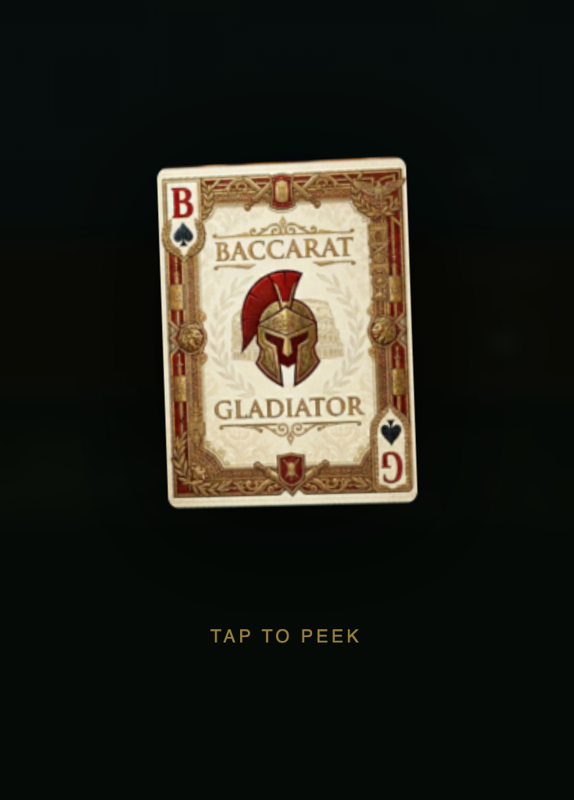
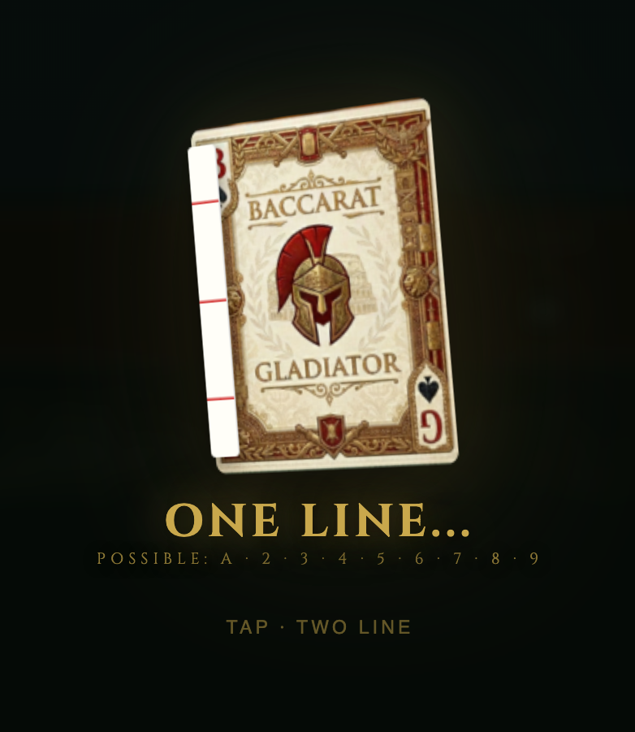
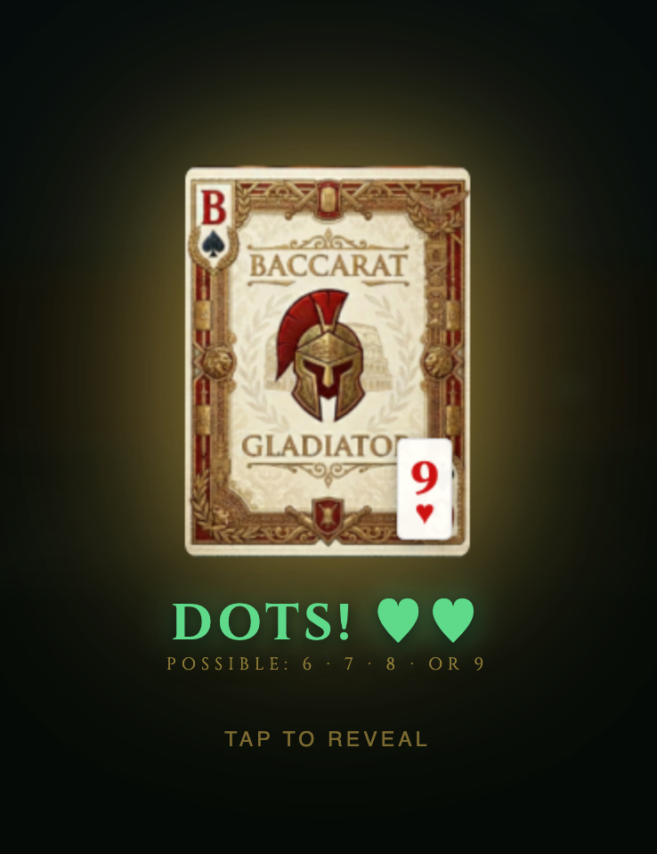
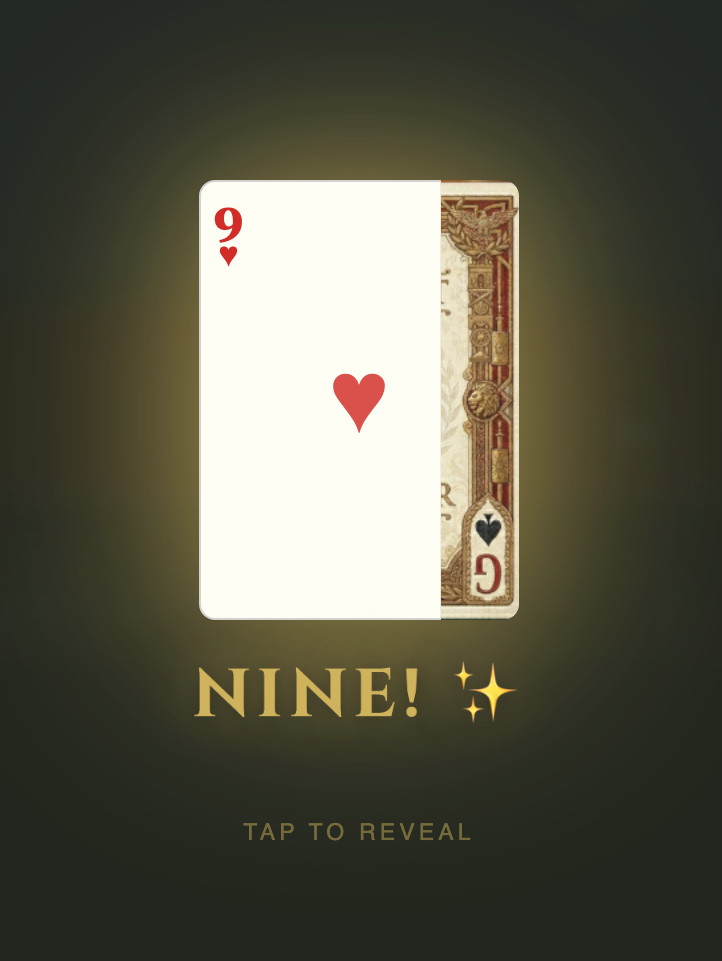

Published by Baccarat Gladiator BaccaratGladiator.com
No part of this publication may be reproduced, distributed, or transmitted in any form or by any means (including photocopying, recording, or other electronic or mechanical methods) without the prior written permission of the publisher, except in the case of brief quotations embodied in critical reviews and certain other non-commercial uses permitted by copyright law.
This book is published for educational and entertainment purposes only. The information contained herein does not constitute financial, legal, or gambling advice. Gambling involves risk. The house edge is real and persistent. Nothing in this guide guarantees winnings or implies that any strategy will overcome the mathematical advantage held by the house. Always gamble responsibly and within your means.
For permissions, bulk orders, or licensing inquiries: BaccaratGladiator.com
Printed and distributed worldwide
For everyone who ever bet Banker, set a stop-loss before they sat down, and walked when they said they would.
Quick Start
If you have 10 minutes before you sit down
1
Bet Banker. Always.
1.06% house edge. Best bet at any casino table in the world. Ignore the Tie — 14.36% edge, statistically worse than slots. Player is fine. Banker is better.
2
Set three numbers before you sit.
Stop-loss — the dollar amount that sends you home if reached. Win goal — where you pocket profit and play with winnings only. Time limit — a hard exit time regardless of what the shoe is doing. Write them down.
3
Present your loyalty card first.
Hand it to the floor supervisor before placing your first chip — not mid-session. Everything you play before they log your card is invisible for comps. A digital card on your phone works.
4
Watch one shoe before betting.
Sit, watch, and let the road fill. You are not losing anything by waiting. You are seeing the pace, the dealer, the other players, and the pattern of this particular shoe before risking a chip.
The rest of this book makes you better. These four rules keep you from getting hurt tonight.
Practice free at BaccaratGladiator.com · All road maps · Squeeze mode · No account required
Table of Contents
→
Introduction
Why a blackjack player wrote a baccarat book — and what a lifetime at the table taught them
—
→
Who This Book Is For
Find your reader type and the fastest path through the chapters
—
1
Why Baccarat?
The story, the culture, the draw — and why the world's richest gamblers choose this game
3
2
The Rules
Card values, payouts, house edge — everything you need before placing a chip
4
3
Third-Card Rules
The fixed matrix that determines every draw — with a visual flowchart
6
4
Reading the Road Maps
All 5 roads explained — plus what experienced players actually do with them
7
5
The Myth of Systems
Honest math on why no system beats the house — and the one thing systems are actually good for
9
6
Bankroll & Session Management
How much to bring, when to walk, and the rules that separate disciplined players from everyone else
10
7
The Mental Game
Tilt, the gambler's fallacy, loss aversion — the psychology that costs players more than the house edge
11
8
The Casino Experience
Table selection, VIP culture, tipping, Macau vs. Vegas vs. online
12
9
Famous Hands & Characters
Phil Ivey's edge-sorting mechanics and legal battle, Kashiwagi, Kerry Packer, Dana White, James Bond — the legends who defined the game
13
10
Variants
Chemin de Fer, Baccarat Banque, Mini-Baccarat, EZ, Tiger, Dragon Tiger, online speed baccarat, and electronic table games (ETG/stadium baccarat)
14
11
Top 10 Mistakes
The errors that cost players the most — and how to avoid every one
15
12
The One-Hour Game Plan
You have 60 minutes and $500. Here is exactly what to do.
16
13
World Baccarat — Five Cities
Macau, Las Vegas, Singapore, Monte Carlo, London — what's different at each
17
14
What to Say
Exact scripts for comps, table reservations, free hands, and more
18
15
The Comp Game
Loyalty tiers, status matching, and how to make Las Vegas pay you back
19
16
Side Bets — The Full Picture
Every major side bet with house edge, cultural context, and a clear verdict
20
17
The Squeeze
The ritual that makes baccarat unique — its origins, etiquette, and how Macau elevated it to ceremony
21
18
Before You Go
Practice, pre-trip checklist, loyalty enrollment, and everything to do before you arrive
22
19
Casino Credit Lines
How markers work, how to apply, and why high-volume players never carry cash
23
20
Responsible Gambling
Hard limits, warning signs, and the resources that keep the game what it should be
24
Table of Contents — continued
21
The Junket System
How high rollers really play — dead chips, rolling programs, private jets, and the world behind the VIP door
25
22
Superstitions & Cultural Rituals
Lucky 8, unlucky 4, blowing on cards, "Monkey!", feng shui, lucky colors — the beliefs that shape the game
26
23
The Perfect Session
A real-time walk-through of one session — every principle in the book, applied hand by hand
27
24
Online Baccarat
Live dealer vs. RNG, Lightning Baccarat multiplier mechanics and EV trade-off, Salon Privé (Evolution's private-room product), crypto casinos (Stake, Roobet, BC.Game), provably fair verification, how to find a legitimate site
28
25
The Mathematics of Baccarat
Probability proofs, house edge derivations, variance formulas, risk of ruin tables, Kelly Criterion, and why card counting fails
29
26
EZ Baccarat — The Commission-Free Game
Dragon 7's three required conditions, why it cannot be predicted, EV proof vs. standard commission, side bet math, and strategic adaptations
31
27
Putting It All Together
The complete disciplined baccarat trip from pre-trip planning through comp extraction to post-session review
34
28
Tournament Baccarat
Mirror vs. inverse strategy, the secret bet, last-hand decisions by position, and the Hail Mary — how to win when the players are the game
36
✦
Afterword
The road ahead — and an invitation to keep playing
38
Appendices
AGlossary39
BQuick Reference Card40
CSession Log41
DSources & Notes42
ELas Vegas Property Reference43
FInternational Property Reference44
GThe 30 Sessions Challenge45
HBaccarat in 4 Languages46
IProbability Reference47
JIndex48
KBetting System Comparison49
LCasino Rating Worksheet51
MPre-Trip Planning Template52
N50 Truths About Baccarat53
OComplete Annotated Shoe54
PThe Q&A — 25 Questions56
QBlank Scoreboard Sheet58
RExercise Answers59
Introduction
I came to baccarat through blackjack.
For years, blackjack was my game. I learned basic strategy, studied the counts, understood the math. I played it seriously in Canada, Mexico, and across Europe: London, Monte Carlo, casinos that felt like history the moment you walked through the door. I was good at it. And then I discovered something: the better you get at blackjack, the more attention you attract, and the less welcome you become. The game rewards skill, but casinos are not in the business of rewarding skill.
Baccarat solved this. There is no card counting in baccarat. There is nothing to suppress, nothing to hide. You sit down, you bet, the cards decide. The house edge is transparent and fixed. Nobody is watching your hands. The pit boss brings you tea.
But the deeper reason I shifted to baccarat (the one I did not expect) was what it unlocked at the table. When you are not mentally running a count, you are free to think about everything else: table selection, bankroll discipline, road patterns, the rhythm of the shoe, the relationship with the host. And crucially, with baccarat's higher average bets, the loyalty math starts working in your favor faster than in almost any other table game. The comp system is built around theoretical loss. Baccarat players, almost by definition, generate it faster.
I learned this gradually, across years and across a lot of geography. Singapore. Monte Carlo. London. Mexico. Dozens of American properties. I played every format: full-size rooms, mini-baccarat, high-limit suites, mass floors in Macau so large you could lose a person in them. I reached the highest loyalty tier at one Las Vegas property and watched competing casinos match that status before my flight home, offering rooms and dinners and show tickets I had not asked for. I paid for trips with winnings and covered hotel bills with comps. None of this happened by luck. It happened because I understood how the system worked and played accordingly.
This is the book I wish I had been handed the first time I sat down at a baccarat table. Not a book that promises you a winning system. There is no such thing, and any book that claims otherwise is lying to you. But a book that gives you the complete picture: the math, the ritual, the roads, the psychology, the casino host relationship, the status matching strategy, the international properties and what makes each one different. The knowledge that separates a player who is simply spending money from one who is getting the full value of the experience.
Baccarat is one of the oldest games in the world. It has outlasted empires, survived the invention of the internet, and remains the highest-revenue table game on the planet. There is a reason the world's wealthiest gamblers choose it above all others. This book explains exactly what that reason is, and how to sit at that table as a fully informed participant.
Welcome to the road to nine.
— Baccarat Gladiator BaccaratGladiator.com
Who This Book Is For
Whether you have never seen a baccarat table or you are chasing a top-tier loyalty status, this book was written for you. Find your reader type below and the fastest path through the chapters.
The First-Timer
You are visiting Las Vegas (or Macau, or anywhere) and want to understand baccarat before you sit down. You may have watched a hand or two but never played for real money.
Start here: Chapters 1, 2, 3 Then read: Chapters 6, 7, 8 Bring to the table: Appendix B (Quick Reference Card) Before you go: Chapter 18
The Recreational Player
You have played baccarat before and enjoy the game. You want to play smarter, manage your bankroll better, and get more out of each session, without pretending you can beat the house.
Start here: Chapters 4, 5, 6 Then read: Chapters 7, 11, 12 For the table: Appendix B + Appendix C Side bets: Chapter 16
The Aspiring VIP
You play regularly and want to understand the full picture: loyalty tiers, status matching, casino credit, and how experienced players extract maximum value from every trip.
Start here: Chapters 8, 15, 19 Then read: Chapters 13, 14, 18 Key reference: Appendix E (Las Vegas Properties) Status strategy: Chapter 15
If you only have time for one chapter before sitting down: read Chapter 2 (The Rules) and keep Appendix B (Quick Reference Card) in your pocket. Everything else makes the game richer. Those two make it playable.
A Note on the Math
This book does not pretend that baccarat can be beaten over the long run. It cannot. The Banker bet carries a 1.06% house edge that no strategy, system, or road map can eliminate. What this book does is help you understand the game completely, play it with discipline, enjoy the full casino experience, and extract every dollar of value the loyalty system is willing to give you. That is the honest promise.
⚔ Reader Bonus — Claim Your Rewards
Scan the QR code or open BaccaratGladiator.com, tap Have a promo code? and enter the word below. You'll instantly receive 25,000 practice chips, 10 gems, your Gladiator Reader badge, and unlimited free hands — no sign-in required.
MAKAO
your reader promo code
1Why Baccarat?
In 1490, French soldiers returning from the Italian Wars brought a card game back to the court of King Charles VIII. It was simple: two hands, fixed rules, no decisions to make. The king was, by all accounts, a poor gambler. The game was designed so that even he couldn't make a costly mistake. The cards decided everything.
He played anyway. He lost.
Six hundred years later, in the high-limit rooms of Macau and Las Vegas, the same game is being played for tens of millions of dollars a session by some of the wealthiest people on the planet. The rules haven't changed. The house still wins in the long run. And the players keep coming back.
That's the paradox of baccarat: it is simultaneously the simplest game in the casino and the one that generates more money than any other. It requires no skill, no memory, no strategy, and yet it commands a loyalty and mystique that blackjack and poker, for all their complexity, can rarely match.
"Baccarat is the only game where the house's advantage is so small that your biggest enemy isn't the casino. It's yourself."
The Numbers
85%
Macau casino revenue
Baccarat's share of total GGR in the world's largest casino market
$1.4B
Strip baccarat win
12 months to Feb 2026 — 37% of all Strip table revenue (Nevada Gaming Control Board)
1,400+
US baccarat tables
Up from ~50 in 1990 — driven by Asian-American players and VIP tourism
Nevada Gaming Commission — What the Data Actually Shows
9.4% of all Nevada gaming revenue comes from baccarat variants — $1.477 billion out of $15.72 billion total — from just 541 tables statewide against more than 125,000 slot machines. Nearly one in every ten dollars kept by Nevada casinos flows off a baccarat table.
Per unit productivity: one baccarat table earns an average of $3.26 million per year statewide. One slot machine earns approximately $85,000 per year. Baccarat is 38× more productive per unit than the machine that dominates every casino floor.
The January 2025 swing is the clearest illustration of what baccarat's data actually measures. Strip baccarat revenue for January 2025: $214.3 million. Strip baccarat revenue for January 2024: approximately $97 million. Change: +121%. Same tables. Same rules. Same house edge. The difference was that the whales lost in 2025 and had won in 2024. The hold percentage (the share of wagered money the casino keeps) swung from 16.4% to 26.7% — not because anything changed in the game, but because variance at $300,000 per hand is measured in nine figures.
Source: Nevada Gaming Control Board, Monthly Revenue Report, February 2026 (12 months ended February 28, 2026) and January 2025 report. gaming.nv.gov
Why Americans Are Discovering It Now
For decades, baccarat was seen in the United States as an Asian game, played in curtained-off VIP rooms by high rollers, invisible to most casino visitors. That is changing. The rise of online baccarat, streaming culture, and a generation of American players who grew up watching Macau content on YouTube has brought the game into the mainstream.
Baccarat generates $1.35 billion in annual win on the Las Vegas Strip — nearly 50% more than blackjack's $914 million — despite running only 393 tables versus blackjack's 1,028. That works out to roughly $286,000 per table per month for baccarat against $74,000 for blackjack: 3.9× more revenue per table, from a game that requires no skill whatsoever to play. (Source: Nevada Gaming Control Board, Monthly Revenue Report, 12 months ended February 28, 2026.) The average baccarat bet is larger, the pace is faster, and the ritual of the squeeze — slowly peeling back a card at the corner — has become one of the most-shared casino moments online.
The Culture
No other casino game has a ritual. Blackjack players signal with hand gestures. Roulette spins and settles. But baccarat has the squeeze: a theatrical, deliberate reveal of the card that turns a fraction of a second into a minute of suspended breath. In high-limit rooms, players are handed the card and allowed to bend it slowly, peek at the corner, pull back the edge. The whole table watches.
This is not incidental to the game. It is the game. The mathematics of baccarat are fixed and immovable. The experience becomes the product, and the squeeze is the climax of that experience.
Practice the squeeze free: Baccarat Gladiator's theatrical card squeeze lets you peel the corner, pull the edge, and snap to full reveal (with sounds) before you ever set foot in a casino.
Five Hundred Years: A Brief History
c. 1400s Italy
A card game called baccara (Italian for zero, the value of every face card) circulates among the Italian nobility. The precise origin is disputed; some historians trace it to Felix Falguierein of Avignon, others to older tarot-derived games. What is established: the game was designed so that the player makes no meaningful decisions. The cards rule entirely.
1490s France
French soldiers returning from the Italian Wars bring the game to the court of Charles VIII, where it evolves into Chemin de Fer, named for the iron boxes used to hold the shoe. In this variant, players rotate as Banker and bet against each other; the casino takes a commission from the Banker's winnings. Chemin de Fer remains the form of baccarat Ian Fleming would give to James Bond four centuries later.
1800s UK / Europe
Punto Banco (the fixed-rules variant where the house banks every hand) develops in South America and Europe. Unlike Chemin de Fer, Punto Banco removes all player discretion: every draw is mandated by the rules. British aristocratic clubs adopt it; the game becomes associated with private rooms, high stakes, and a particular kind of unhurried wealth.
1959 Las Vegas
Tommy Renzoni, a casino manager who had been running baccarat in Havana, brings Punto Banco to the Sands Hotel in Las Vegas after Castro closes Cuba's casinos. The Sands opens a dedicated baccarat pit: tuxedoed dealers, gold ropes, a curtain separating it from the main floor. The table loses $250,000 its first night. Management keeps it open. The mystique is the product.
1962 Cinema
Dr. No introduces James Bond — and baccarat — to a global mass audience. The Chemin de Fer scenes in Casino Royale (novel, 1953; filmed 1967) cement the game's identity as the choice of the intelligent, dangerous, and unhurried. No marketing budget could have done what Fleming did for free.
1970s–90s Macau
Under Stanley Ho's STDM monopoly, Macau's VIP baccarat rooms evolve into an entirely separate ecosystem: the junket system. Junket operators front credit to mainland Chinese high-rollers, transport them to Macau, and earn rolling-chip rebates on their volume. The system enables bets of a scale Las Vegas cannot match. By the 1990s, baccarat's global centre of gravity has permanently shifted east.
2004–2012 Cotai Strip
The Venetian Macao, Sands Cotai Strip, Galaxy, and MGM Macau open on reclaimed land between Taipa and Coloane islands. Macau overtakes Las Vegas as the world's largest gambling market in 2006 — and never looks back. By 2013, Macau generates six times the gaming revenue of the entire Las Vegas Strip. Baccarat accounts for 85–90% of all gaming revenue. The game that started in a French royal court now drives more money than any other entertainment product in human history.
2020s Global
Live-streamed sessions, crypto casinos, and a generation of YouTube-native players bring baccarat to audiences Charles VIII could not have imagined. Dana White posts a $1.2 million win on social media and generates more baccarat awareness in 48 hours than a decade of casino marketing. The game is 530 years old. The house edge has not changed since Chemin de Fer. Everything else has.
Baccarat vs. Every Other Table Game
Factor
Baccarat
Blackjack
Roulette
Craps
Best house edge
1.06%
0.5%*
2.7% (Euro)
1.36%
Skill required
None
Yes (basic strategy)
None
Minimal
Card counting works
No
Barely viable
No
No
Comp generation
Highest
Moderate
Moderate
Moderate
International portability
Universal
Moderate
Universal
Limited
Casino scrutiny
Very low
High
Very low
Low
Ritual / atmosphere
Highest
Low
Low
High
Pace (hands/hour)
~60–80
~80–100
~40–50 spins
~100+
* Blackjack's 0.5% edge requires perfect basic strategy memorized and applied every hand without error. Baccarat's 1.06% is automatic; no decisions required.
Key Takeaways
Baccarat generated $1.35 billion on the Las Vegas Strip in the 12 months to February 2026 — 47% more than blackjack ($914M) with 62% fewer tables (393 vs. 1,028) — source: Nevada Gaming Control Board
The house edge is fixed, transparent, and requires zero skill to achieve — making it one of the most player-friendly games in the casino
Baccarat's higher average bet generates comps faster than almost any other table game
Unlike blackjack, baccarat players attract zero casino scrutiny — no one is watching your hands
2The Rules
Two hands are dealt, Player and Banker. You bet on which will be closer to 9. That is the entire premise. If you played War as a kid (flip a card, higher card wins), baccarat is the same idea with up to three cards per side: the hand totaling closer to nine wins. No decisions, no strategy, no bluffing. Just cards.
Anatomy of the Baccarat Table
① Banker — 1.06% edge. Pays 1:1 minus 5% commission. Best bet at the table.
② Tie — 14.36% edge. Pays 8:1. Almost never correct.
③ Player — 1.24% edge. Pays 1:1, no commission.
④ Shoe — 6 or 8 shuffled decks. Cut card signals the final hand.
⑥ Seats — Tip by placing a "for the dealer" chip alongside your own bet.
Card Values
Cards
Value
Example
Ace
1
A♠ = 1
2 through 9
Face value
7♦ = 7
10, Jack, Queen, King
0
K♣ = 0 · 10♥ = 0
Key rule: Only the last digit counts. 7 + 8 = 15 → scores 5. 9 + 9 = 18 → scores 8. K + 4 = 14 → scores 4.
How a Hand Plays Out
Both Player and Banker receive two cards. A total of 8 or 9 on the first two cards is a Natural; the hand ends immediately. Otherwise, a third card may be drawn (see Chapter 3). The hand closest to 9 wins. On a tie, Tie bets pay; Banker and Player bets push.
Payouts & House Edge
Bet
Payout
House Edge
Notes
Banker
0.95:1
1.06%
5% commission on wins
Player
1:1
1.24%
Even money, no commission
Tie
8:1
14.36%
Banker/Player push on tie
Player Pair †
11:1
10.36%
First two Player cards match
Banker Pair †
11:1
10.36%
First two Banker cards match
† Pair bets pay 11:1 at most casinos, 10:1 at some. Confirm at your table.
Each bubble = one bet. Top-left = best odds. Bottom = avoid. Side bets sit middle-right — exciting payouts, real costs.
Best bet: Banker at 1.06% is one of the lowest house edges in any casino game. Over 1,000 hands at $10/hand, expected loss is just $106.
Worst bet: Tie at 14.36% loses nearly the same $10 every 7 hands on average. The 8:1 payout feels exciting, but the math is brutal.
The Worst Bet in Vegas
Tie Bet · 14.36%
That is a higher house edge than most slot machines. The 8:1 payout feels like a score. The math says you will lose $14.36 for every $100 wagered, on average, forever.
Banker: 1.06% · Player: 1.24% · Tie: 14.36% One of these is not like the others.
EZ Baccarat Side Bets
Bet
Trigger
Payout
Dragon 7 (also: Sun)
Banker wins with 3-card total of 7
40:1
Panda 8 (also: Moon)
Player wins with 3-card total of 8
25:1
Big Tiger
Banker wins with 3-card total of 6
50:1
Small Tiger
Banker wins with 2-card total of 6
22:1
Tiger Tie
Both hands total 6
35–45:1 ‡
‡ Tiger Tie payout varies by casino (35:1 to 45:1). Baccarat Gladiator pays 35:1.
Hand Signals at the Table
At a full-size baccarat table the dealer handles every card; players never touch them outside the squeeze. At mini-baccarat, which is the format most US players encounter first, the cards are dealt face-up and no one touches them at all. But in mini-baccarat, physical hand signals are required for any hand where the player has been given the option to call a draw. When the dealer looks to you: scratch the felt toward you (two fingers, drawing motion) to signal "draw a card." Wave your hand flat over the cards, palm down, to signal "stand, no card." Do not say "hit" or "stand" out loud; dealers are trained to act on signals only, not spoken calls, to avoid disputes. New players who speak instead of signal will be corrected, sometimes firmly.
In practice, the third-card rules are fixed; neither the Player nor the Banker hand has any discretion over whether a card is drawn (see Chapter 3 for the full matrix). The hand signals described above apply only in the rare older formats where a player holds the Player hand and has nominal input, and in some online live-dealer interfaces that use a simplified UI. At any standard mini-baccarat table, the dealer will handle the draw automatically based on the totals; the signal protocol exists as a formality and a safeguard against miscommunication. Know it before you sit down. It is the only physical procedure in the game.
The Shoe Procedure: Cut Card, Burn Cards & Superstition
Before the first hand of every shoe, two rituals take place. They are procedurally important, mathematically irrelevant, and culturally loaded.
The cut card. After the shoe is shuffled, a solid-colored plastic card is offered to a player to insert somewhere in the deck. In full-size baccarat this is typically given to the highest-stakes player at the table. In mini-baccarat, the dealer handles it. Where the cut card lands determines how many hands are dealt before the next shuffle. Most casinos require it within the middle third of the shoe, not too close to either end.
The burn card. After the cut, the dealer draws the first card and turns it face-up. Its value determines how many cards are then burned face-down into the discard tray, no announcement, gone from play. Ace burns 1. Any face card or 10 burns 10. Numbers 2 through 9 burn their face value. A King triggers 10 burns. A 3 triggers 3.
Burn Count by Rank
Ace
→ burn 1 card
2 through 9
→ burn that many
10, J, Q, K
→ burn 10 cards
The burned cards are removed silently. In a standard 8-deck shoe, up to 10 cards disappear before hand one.
The Superstitions — Why Players Obsess Over Both
The person who cuts the shoe is believed by many players to "set its fate." If the shoe runs cold, the cutter catches blame. If it runs hot, they receive credit. In Macau's high-limit rooms, regulars sometimes refuse to cut a shoe they believe is already cursed. Some will leave the table rather than touch the cut card. Others make a ceremony of it, pausing, holding the plastic card two-handed, inserting it with deliberate intention.
The burn card is equally loaded. A high burn (a King consuming 10 cards) is greeted with either celebration or dread depending on table culture and individual superstition. In some rooms a high burn is welcomed as a "strong opening." In others, players wince and call it waste. In Macau's premium salons the burn ritual is performed slowly, the dealer announcing the card value aloud before executing the burn while players watch in reverent silence, as if the card itself is an omen for the hour ahead.
The mathematical reality: the cut and the burn have no effect on any hand's probability. The shuffle is complete and random before either ritual. But understanding that the rituals are meaningful to the room, even when they are not meaningful to the outcome, is part of reading a table, not just its cards. At a Macau high-limit table, refusing to cut respectfully, or cutting carelessly, communicates something about you.
Self-Check — Chapter 2
A hand shows a 9 and a 6. What is the point value?
Banker wins with a three-card total of 7 in EZ Baccarat. Does your Banker bet pay even money?
The house edge on the Tie bet is closest to: 1%, 5%, or 14%?
Answers → Appendix R
Key Takeaways
Three bets only: Banker (1.06% edge), Player (1.24% edge), Tie (14.36% edge) — one of these is never worth placing
The Tie bet carries a higher house edge than most slot machines; avoid it entirely
EZ Baccarat eliminates the 5% commission but excludes Banker wins on a three-card 7 (Dragon 7) from paying out
Third-card draws are automatic — the player has no decisions to make beyond where to place the bet
At mini-baccarat: scratch the felt to draw, wave flat to stand — use hand signals, not words
Before every shoe: a player cuts the deck with a plastic card, then the dealer burns cards equal to the first card's face value — ritual without mathematical effect, but culturally significant at every table worldwide
Chapter 2 continued — What the Cards Look Like
Below are six representative baccarat hands. Each shows the dealt cards, the hand total, and the outcome rule that applies. You will see every situation at the table.
Quick Total Reference
8 or 9 — Natural. Hand ends, no draw. 6 or 7 — Stands. No third card for Player. 0 – 5 — Draws. Player takes a third card.
10/J/Q/K — All worth zero. Never forget this. Only last digit — 7+8=15 scores 5. 9+9=18 scores 8. Banker rules — More complex; see Chapter 3.
3Third-Card Rules
No one chooses whether a third card is drawn; the rules are fixed and automatic. The dealer applies them the same way every hand, in every casino, in every country. You never need to memorize this table to play, but understanding it demystifies the hands that seem to defy logic.
Player Third-Card Rule
Player Total (first 2 cards)
Action
0 – 5
Draws a third card
6 – 7
Stands
8 – 9
Natural — no draw, hand ends
Banker Third-Card Rule (when Player drew)
Banker Total
Draws when Player's 3rd card is…
Stands when…
0, 1, 2
Always draws
—
3
0, 1, 2, 3, 4, 5, 6, 7, 9
8
4
2, 3, 4, 5, 6, 7
0, 1, 8, 9
5
4, 5, 6, 7
0, 1, 2, 3, 8, 9
6
6, 7 (only if Player drew)
0–5, 8, 9
7
Always stands
8 – 9
Natural — hand ends
Memory shortcut: Banker on 3 draws on everything except an 8. Banker on 6 only draws if Player's third card was 6 or 7. Otherwise: draw on low totals, stand on high.
Visual Decision Flowchart
baccaratgladiator.com/drill
Practice These Rules Free — On the App
The Third-Card Rule Drill at BaccaratGladiator.com tests every scenario from this chapter in a timed quiz format. Learn the rules. Understand the odds. 15 questions, three difficulty tiers.
Prefer to learn by doing? The Baccarat Gladiator app lets you play full hands; you will see every third-card situation play out in real time, with the roads tracking automatically. It is the fastest way to make the third-card matrix feel instinctive before you ever sit at a real table. Free to play, no account needed.
Self-Check — Chapter 3
Player's first two cards total 6. Does Player draw a third card?
Banker holds 5. Player drew a 4 as a third card. Does Banker draw?
Player shows a Natural 8. Banker shows a Natural 9. What is the result?
Answers → Appendix R
Key Takeaways
Third-card rules are fully automatic — the dealer follows a fixed matrix with no discretion allowed
Player draws on totals of 0–5 and stands on 6–7; a Natural 8 or 9 stops play immediately with no further cards dealt
Banker's draw depends entirely on the value of Player's third card — the matrix governs every combination precisely
Understanding these rules removes all mystery from the game and confirms there is nothing in the deal sequence to exploit
4Reading the Road Maps
Every baccarat table displays five live tracking grids: the roads. They record the history of every hand in the current shoe. They do not predict the future. Baccarat has no memory; each hand is statistically independent. But the roads have a purpose that pure math misses: they are a shared language, a social tool, and a psychological anchor that experienced players use to pace their betting.
Key:● Blue = Banker · ● Red = Player · ● Green = Tie
① Big Road: The Primary Scorecard
Results fill columns left to right. A new column begins when the result changes. Ties mark the current cell without starting a new column. Tall columns = streaks. Short alternating columns = chops.
② Bead Plate: Raw Results Grid
A simple grid filling top-to-bottom, left-to-right. No grouping by streak. 36 results visible at once. Use it for a fast count of how many Banker vs. Player wins are in the current shoe.
③④⑤ Derived Roads: Big Eye Boy, Small Road, Cockroach
All three are derived from the Big Road by comparing columns at different offsets. They show whether the shoe is regular (repeating pattern, blue entries) or choppy (irregular, red entries).
Road
Starts from
What it shows
Big Eye Boy
2nd column
Short-term regularity
Small Road
3rd column
Medium-term pattern
Cockroach
4th column
Long-range pattern
Three More Lines You Will Hear About: Tie Line, China Line, Bonus Line
If you play in high-limit rooms long enough, you will hear players mention three road-related terms that are not covered in most guides. These are not official names from the rulebook: they are floor vocabulary, shorthand that experienced players use to refer to specific tracking elements visible on the scoreboard.
Term
What It Refers To
Tie Line
On the Big Road, Ties are recorded as a small slash or green marker through the current cell; they do not start a new column or interrupt the B/P sequence. Some electronic scoreboards add a separate Tie Line: a dedicated horizontal strip below the main roads that marks exactly which hand in the shoe produced a Tie result.
Why it matters: serious players use the Tie Line to track how frequently Ties are appearing in the current shoe. If Ties have been unusually dense in the first half of the shoe, some players reduce or avoid Tie bets in the second half (or increase them, depending on their strategy). The Tie Line does not change the math (9.51% per hand, always) but it gives players a visual reference for the Tie distribution across the current shoe.
China Line
This term is used loosely and refers to one of two things depending on who is saying it:
Most commonly: "China Line" is a Western floor shorthand for the three derived roads collectively: the Big Eye Boy, Small Road, and Cockroach Road. All three originated in Chinese baccarat culture and were introduced to Western casinos through Macau. When a player says "check the China Lines," they are asking you to look at all three derived roads simultaneously to judge whether the shoe is regular (blue entries dominating) or choppy (red entries dominating).
Sometimes specifically: In some rooms the term is used just for the Cockroach Road (曱甴路), the fifth and most derived road, which traces the most distant pattern comparison. If someone says "the China Line is all red," they are saying the shoe's long-range pattern has broken down completely and no regularity exists. Either meaning points to the same practical use: judging the texture of the shoe from its derived road data.
Bonus Line
The Bonus Line tracks Naturals: hands where either Player or Banker receives an 8 or 9 on the first two cards, ending play immediately. Some electronic scoreboards display a Bonus Line or Natural indicator separately from the main roads, marking which hands in the shoe produced a Natural and which side (Banker or Player) held it.
Players watch the Bonus Line because Naturals are the most decisive events in the shoe: they are instant wins or losses with no third-card draw. A shoe with many early Naturals can feel very different from one with few. Some players who bet Natural-specific side bets (available in certain casino formats) use the Bonus Line to track clustering. As with all road analysis, the Bonus Line has no predictive value. Natural probability (~34.9% per hand combined) does not change based on recent history. But it gives the room a shared reference point, and you will hear players call out when the Bonus Line has been "quiet" for many hands.
Not every scoreboard has all three. Tie Line, China Line indicators, and Bonus Line displays vary by casino and by the scoreboard software in use. Full-size high-limit rooms (particularly in Macau and Las Vegas properties catering to Asian players) are most likely to show all of them. Mini-baccarat tables on the main floor may show only the standard five roads. If you cannot find a term on the board in front of you, ask the dealer. They will point to it immediately.
Triple Dragon — A Real Bonus Line in Action
This is a real EZ Baccarat scoreboard from a single shoe. The Bonus Line on this table tracked 10 bonus events (9 Dragon 7s and 1 Panda 8) within 77 hands dealt. The shoe also produced an 18-hand Banker winning streak, during which Dragon 7 hit five of those eighteen hands.
This is what the Bonus Line is for: giving the room a shared count of how many high-impact events have fired. When players say "triple dragon" at a table, they mean a shoe where Dragon 7 has hit three or more times, a run that generates significant side-bet payouts and a particular energy in the room.
None of these events were predictable in advance. The Bonus Line is a record, not a forecast. But when a shoe like this unfolds, the Bonus Line makes the count visible; the count, at nine Dragons and a Panda, is not something anyone at that table is likely to forget.
What Experienced Players Actually Do With the Roads
Veteran players don't use the roads to predict outcomes. They use them to find entry points that feel consistent with recent patterns, and to manage session pacing. A player who sees a strong Banker streak on the Big Road might wait until it breaks before switching sides. A player watching all three derived roads flash red simultaneously might reduce bet size until the shoe settles.
None of this changes the house edge. But it creates a decision framework that prevents impulsive large bets in the middle of a chaotic shoe, and that discipline, over many sessions, is worth more than any system.
Road Prediction: Baccarat Gladiator shows what the next entry on each derived road would be for both a Banker and Player outcome, before cards are dealt. Tap 🔮 Predict to see live projections.
At Marina Bay Sands in Singapore, I was three shoes into a session and down about four hundred. The Big Eye Boy had been flipping red on nearly every column: the shoe was genuinely choppy, the kind that punishes anyone chasing a pattern. I dropped to minimum bets and waited. Not because I thought the roads would turn (I knew they wouldn't tell me that) but because the roads confirmed what I already felt: this shoe had no rhythm, and the right play was patience. On the fourth shoe, the first six hands went Banker. I still didn't size up immediately. I waited for three consecutive columns. Then I moved. I ended the session close to flat. At that table, flat felt like a victory. The roads didn't predict what happened. They gave me the discipline not to bet into chaos.
Free Interactive Scoreboard
All five roads — Big Road, Bead Plate, Big Eye Boy, Small Road, Cockroach — updated live as you tap results. Includes road prediction for both Banker and Player outcomes.
baccaratgladiator.com/baccarat-scoreboard
Key Takeaways
The five roads record history only — they do not predict outcomes; no mathematical edge exists in pattern tracking
Roads are useful as pacing tools: they reveal whether a shoe is streaky or choppy, helping manage bet timing and discipline
Road prediction in the Baccarat Gladiator app shows what the next entry would be for both a Banker and Player result — before cards are dealt
Patience in a chaotic shoe — confirmed by the roads — is worth more than any system applied to it
Why the Roads Feel Real — The Science
In June 2025, researchers from Osaka and Kyoto universities published what is the largest empirical study of real baccarat player behavior ever conducted. They analyzed 17,970,830 hands played by 6,625 casino customers using actual casino field records — not laboratory simulations. Their finding overturns the conventional assumption about how baccarat players use pattern information.
The classic theory holds that gamblers commit the gambler's fallacy: after a long Banker streak, they expect Player to "catch up." But Muto et al. found the opposite. As a Banker streak grew, players increasingly bet with the streak, not against it — a pattern called positive recency bias. The longer the run, the more confidently players followed it.
This is what the roads are producing in you. The bead plate, the Big Road, the derived roads — they are not neutral information displays. They are cognitive framing devices that induce trend-following behaviour. When all three derived roads go blue, you feel the shoe is "in a rhythm." When they go red, you feel it is "choppy." Both feelings are statistically inert: the next hand's probability is unchanged.
The Muto et al. study is clear: this behavior is irrational from a probability standpoint, and it is reliably produced by the baccarat environment. The roads are the casino's most elegant edge: they cost nothing to provide, they do not change the odds, and they keep you betting in ways that feel strategic but are not. Use them for pacing. Never mistake them for prediction. Source: Muto H., Nakai R., et al. "Baccarat gamblers follow trends rather than adhere to the gambler's fallacy." Acta Psychologica, 2025. DOI: 10.1016/j.actpsy.2025.105172.
Reading the Road Maps — Live Scoreboard Examples · Chapter 4 continued
The same 26-hand shoe shown on two scoreboards. Big Road groups results into streak columns. Bead Plate records every hand in raw sequence. Both show identical data, in fundamentally different visual languages.
① Big Road — Primary Scorecard
② Bead Plate — Raw Sequence
③④⑤ Derived Roads
The Big Eye Boy, Small Road, and Cockroach are all generated mathematically from the Big Road by comparing columns at different offsets. No data entry required; they update automatically.
Each derived road entry is blue when the shoe is regular (the pattern is repeating itself) or red when the shoe is choppy (the pattern is irregular).
For this 26-hand shoe: • Hands 1–7: Big Eye Boy turns red as the initial streak breaks into chop • Hands 8–13: All three derived roads flash red — pure alternation • Hands 14–20: Derived roads shift toward blue as streaks resume • Hands 21–26: Mixed readings as shoe enters late-phase variability
Practical use: When all three derived roads show red simultaneously, disciplined players reduce bet size or skip hands. Not because they predict what comes next, but because the shoe has confirmed no rhythm worth following.
5The Myth of Systems
Every casino in the world has a gift shop. Almost every gift shop sells a baccarat system booklet. Some casinos hand them out for free. That should tell you something.
No betting system can change the house edge. This is not an opinion: it is a mathematical certainty. The house edge is built into each individual hand. It does not matter what you bet on the previous hand, how many consecutive Bankers have appeared, or what the roads are showing. The next hand's probability is identical to every hand that came before it.
"A system that tells you to double your bet after a loss doesn't change the odds. It changes how much of your money the house takes on bad runs."
The Gambler's Fallacy
After six consecutive Banker wins, many players feel that Player is "due." This feeling is universal, deeply human, and completely wrong. A coin does not remember its last flip. A shoe does not compensate for previous results. The probability of the next hand is approximately 45.8% Banker, 44.6% Player, 9.6% Tie, every single hand, regardless of what came before.
System Comparison
Flat Bet [Lowest Risk]
Same bet every hand. Slowest variance. Best for long sessions and Banker-only play.
Hong Kong Cruise [Low Risk]
Bet 1u on Player. Win: bet 2u. Win again (2 consecutive): take profit, reset to 1u. Any loss: reset immediately. The goal is capturing two-win pairs only — never extends past hand 2. Popular in Asian high-limit rooms; the name reflects its origins in Hong Kong casino culture.
Paroli [Low Risk]
Win: double (max 3 consecutive wins), then reset. Loss at any point: back to 1u. You are always riding profit, never chasing losses. The most psychologically comfortable positive progression.
1-3-2-6 [Low Risk]
Bet sequence 1→3→2→6 units on consecutive wins; reset on any loss. The 2u third bet is intentionally reduced — if you lose there, you still break even on the sequence. Capturing all 4 wins nets 12u profit on 12u wagered.
Oscar's Grind [Low Risk]
Start at 1u. After a win, add 1u to your next bet — but only until you are 1u ahead for the session, then reset. After a loss, keep the same bet. Wins +1u per completed session. Slow, conservative; requires patience but never accelerates into catastrophic loss territory.
D'Alembert [Medium Risk]
Add 1u after a loss; subtract 1u after a win (floor = 1u). Linear escalation — far gentler than doubling systems. The theory (that wins and losses will balance) is flawed, but the slow ramp limits catastrophic sessions better than Martingale. Still a negative-progression system at heart.
Labouchere [Medium Risk]
Write a sequence, e.g. 1-2-3-4. Bet the sum of the first and last numbers (5u). Win: cross both off. Loss: add the losing bet to the end of the sequence. Continue until all numbers are crossed off. Complex to track; losing streaks grow the sequence and escalate bets sharply.
Fibonacci [Medium Risk]
1·1·2·3·5·8·13·21… Move one step forward on loss; two steps back on win. Slower escalation than Martingale — but by step 10 you are betting 55u. The mathematical elegance is real; the gambling advantage is not.
Six-Ball System [Low Risk]
A grid-based progression using 6 predefined bet positions arranged in rows. You work through the 6 positions sequentially; the sequence resets after completing all 6 or after a loss, depending on the variant. The "six balls" represent the 6 betting slots — the system's goal is to complete a full row before a losing run forces a reset. Conservative exposure compared to Martingale; popular in Korean and Asian baccarat circles.
Mirror Betting Strategy [Medium Risk]
Uses the Six-Ball grid as a framework. Core rule: treat the previous hand result as a mirror for the next — bet the same side as the last outcome. Reversal rules apply on ties (switch remaining bets) and when the prior row opposed the result (hold direction). Essentially structured pattern-following: you are not predicting the shoe, you are reacting to it one step behind. The gambler's fallacy embedded in a grid does not become mathematically sound because it has a name, but the structure prevents impulsive mid-sequence switches.
Martingale [High Risk]
Double after every loss. Reset on win. 6 consecutive losses = 64× your base unit bet. A $100 base player needs $6,400 on hand 7 just to recover. Table limits exist specifically to prevent this from working. The system wins frequently in the short term — and loses catastrophically when the losing streak arrives.
What Systems Are Actually Good For
Systems create structure. A player with a plan bets more consistently, chases less, and leaves the table on schedule. Flat betting or Paroli on Banker (with a fixed stop-loss and win goal) is not a winning strategy. But it is a losing less badly strategy, and over a lifetime of sessions, that gap compounds.
The one honest edge: Banker at 1.06% is genuinely the best bet at the table. Betting Banker flat every hand, no system, no switching, minimises expected losses more reliably than any other approach.
Myth vs. Reality: The Short List
Myth
Card counting works in baccarat
Reality
Mathematically possible, practically worthless. The edge at peak shoe imbalance is a fraction of a percent, not enough to beat variance over any realistic session.
Myth
Betting systems guarantee long-term profit
Reality
No system changes the house edge. Systems change bet size and pacing. They can improve psychology, but they cannot beat math.
Myth
Past hands predict future ones
Reality
The shoe has no memory. Ten consecutive Bankers does not make an eleventh more or less likely. Each hand resets to the same base probabilities.
Myth
Tie bets are worth it after a long drought
Reality
Ties occur roughly 9.6% of the time, every hand, always. A long gap between ties changes nothing about the probability of the next one.
Myth
Expert players can "feel" the shoe
Reality
Experience builds pattern recognition. Pattern recognition applied to random events produces confident predictions that are no more accurate than chance.
Self-Check — Chapter 5
You've lost four hands in a row. Does doubling your next bet improve your mathematical expectation?
After 10 consecutive Banker wins, what is the approximate probability of Banker winning the next hand?
Answers → Appendix R
Key Takeaways
No betting system can change the house edge. This is mathematical fact, not opinion; every shoe starts equally fresh
Each baccarat hand is statistically independent of all prior hands; streaks and droughts carry no predictive weight
Tie bets do not become more likely after a long drought — they occur roughly 9.6% of the time on every hand, always
Pattern recognition applied to random events produces confident predictions that are no more accurate than chance
6Bankroll & Session Management
Baccarat's house edge is so small that how you manage your money matters more than almost any other decision you make at the table. A player who bets Banker every hand but manages sessions poorly will lose more than a player who occasionally makes suboptimal bets but leaves on schedule.
How Much to Bring
A standard rule: bring at least 50× the table minimum as your session bankroll. At a $25 minimum table, that's $1,250. This gives you enough runway to weather normal variance without being forced out by a short losing run.
Table Minimum
Recommended Session Bankroll
Expected Loss (1hr, Banker only)
$10
$500
~$6 – $12
$25
$1,250
~$15 – $30
$100
$5,000
~$60 – $120
$500
$25,000
~$300 – $600
The Four Session Rules
Rule
Threshold
Why It Works
Stop-loss
Lose 40% of session bankroll → leave
Prevents catastrophic single-session losses
Win goal
Up 30–50% → pocket the profit, play with winnings only
Locks in wins; you can't leave a winner a loser
Time limit
Set a hard end time before you sit down
Removes the "just one more hand" trap
Bet sizing
Single bet ≤ 2–5% of session bankroll
Prevents one hand from deciding the session
The Kelly Criterion: Simplified
The Kelly Criterion is a bankroll formula used by professional gamblers and investors. In a negative-edge game like baccarat, it technically says bet zero. But adapted for recreational play, the insight is: bet a small, fixed fraction of your total bankroll, never a fixed dollar amount.
At $10,000 total bankroll, 1% per bet = $100. After losing $2,000, 1% = $80. This naturally reduces bet size during downswings and scales up during winning periods, extending your playing time and reducing ruin risk.
The cardinal sin: Increasing bet size to "win back" losses. Every hand is independent. A larger bet after a loss does not improve your odds. It only means you lose more on the next loss.
Session Variance: What One Shoe Actually Looks Like
80 hands at $100 flat on Banker. Expected loss: ~$85. But variance, not the house edge, determines your actual result. This is the realistic distribution of outcomes across thousands of simulated sessions:
80 hands · $100 flat Banker · 1 SD ≈ $830 · Based on binomial approximation, 8-deck shoe
The insight: The house edge of 1.06% costs you roughly $85 per 80-hand session, a rounding error inside a variance of ±$830. You will not feel the house edge in any single session. You will feel variance. Understanding this prevents two mistakes: attributing wins to skill, and attributing losses to bad luck rather than math.
What $10,000 Buys You at the Baccarat Table
A $10,000 session bankroll looks very different depending on where you sit. Here is what to expect at each level, betting Banker flat the entire session.
Bet Level
Min. Table
Hands/Hr
Hrs of Play
Expected Loss
Variance
Low Stakes
$10
~80
12+ hrs
~$85
Low — smooth swings
Mid Stakes
$100
~70
~1.5 hrs
~$105
Moderate — $2K swings normal
High Limit
$500
~60
~20–25 min
~$106
High — $5K+ swings common
Baccarat Whale
$5,000
~50
~2–3 hands
~$106+
Extreme — session-ending variance
Expected loss assumes 1.06% house edge, Banker flat bet, 8-deck shoe. Variance column reflects realistic single-session swings, not theoretical limits.
The insight: Expected loss is nearly identical across bet levels, about $105 per $10,000 wagered. What changes is pace. The same $10K lasts twelve hours at $10/hand and disappears in three hands at $5,000/hand. Your edge isn't the bet size. It's how long you can stay disciplined.
I came close to a $10,000 mistake once. I was at a high-limit table in Las Vegas, a good room, good shoe, up about thirty percent after an hour. The rational move was to pocket the profit and leave. Instead I told myself I had been reading the shoe well, that the Banker streak was not finished, that I deserved to see how deep it ran. I placed a bet twice my session maximum. I lost it in four hands. By the time I left I had surrendered the entire profit plus a third of my original stake. The mistake was not the bet size. I've made bigger bets. The mistake was the story I told myself to justify it: I deserve to keep winning. Baccarat does not care what you deserve. It never did. The session rules in this chapter exist specifically for that moment, the one where you feel invincible and have the most to lose. Follow them when it costs you nothing. Trust them when it costs you everything.
baccaratgladiator.com/simulator
Test Your Bankroll Plan Free
The Bankroll Simulator at BaccaratGladiator.com runs 1,000 simulated shoes using your own numbers: bankroll, bet size, stop-loss, win goal, and strategy. See the outcome distribution before you sit down.
Self-Check — Chapter 6
You start with $500 and set a stop-loss of $250. At what bankroll value do you walk away from the table?
You've just hit your win goal of $750. You feel you're "on a run." According to the rules in this chapter, what should you do?
Answers → Appendix R
Key Takeaways
Expected loss is nearly identical across all stake levels, roughly $105 per $10,000 wagered on Banker flat
What changes with stake size is pace: the same $10K lasts 12+ hours at $10/hand, and just three hands at $5,000/hand
Set three numbers before every session: win goal, stop-loss, and time limit. Honor all three without renegotiation
The biggest losses come from the story you tell yourself to justify one more bet after a winning run; the rules exist for exactly that moment
7The Mental Game
The casino is engineered for your psychological disadvantage. No clocks. No windows. Oxygen-rich air, free drinks, comfortable chairs, and a layout designed to make the exit feel far away. You don't need to beat the house edge to have a profitable session. You need to beat your own psychology first.
Tilt
Borrowed from poker, "tilt" describes the state where emotional frustration causes irrational betting. In baccarat, it typically looks like: a streak of losses → frustrated increase in bet size → more losses → maximum bet placed on Tie "to get it back." The Tie bet has a 14.36% house edge. Tilt doesn't create that bet; it removes the self-control that would otherwise prevent it.
Tilt signal: If you've increased your bet size because you're losing, you are on tilt. Stand up, walk away from the table, and do not return for at least 20 minutes.
Loss Aversion
Behavioural economists have found that losses feel roughly twice as painful as equivalent gains feel pleasurable. Losing $100 hurts more than winning $100 feels good. At the baccarat table, this creates a dangerous asymmetry: players take on more risk to avoid locking in a loss than they would to secure an equivalent gain. The stop-loss rule in Chapter 6 exists specifically to override this instinct.
The Gambler's Fallacy in Practice
After seven consecutive Banker wins, the most common bet in the room is Player. The logic: "it has to switch eventually." The reality: the shoe has no memory. The probability of the 8th hand being Banker is the same as the first. If anything, a long Banker streak slightly increases the probability of another Banker win, because the composition of remaining cards in the shoe is marginally Banker-favourable, but this effect is tiny and not actionable.
Rules for the Mental Game
Situation
Rule
Down 40% of session bankroll
Leave. No exceptions.
Up significantly — feel invincible
Pocket 50% of winnings. Play with the rest.
Considering a Tie bet
Ask yourself if you're chasing. You probably are.
Considering a larger-than-normal bet
Why? If the answer involves recent losses, don't.
Feeling unlucky, frustrated, or angry
Leave now. Emotion and baccarat do not mix.
Urban Myths at the Table
Every baccarat room has its folklore. These beliefs are passed between players as if they were strategy. None of them are true, but understanding why they feel true is part of mastering the mental game.
The Myth
What Players Believe
The Reality
"Seven never wins"
A hand totaling 7 is cursed and loses more than it should
A total of 7 is the second-best hand in baccarat. It stands and wins against anything below it. No card value is cursed.
"New dealer means a tie"
When a fresh dealer rotates in, a Tie hand follows shortly
Dealer rotations happen on a fixed schedule with no connection to shoe outcomes. Coincidences are remembered; the 97% of rotations without a tie are forgotten.
"Touch the cards gently — squeeze hard if you need it"
How you bend the cards affects what they reveal
The cards are already printed. Squeezing slowly is theater, not influence. The outcome is fixed the moment the shoe was loaded.
"A cold table turns hot"
After many Player losses, Banker must be due
There is no "due." A shoe that has produced ten Banker wins in a row is no more likely to produce a Player win than at the start. The shoe has no memory.
"Bet against the winner"
If one side keeps winning, switch to the other
Known as the "fade the winner" strategy. Has no mathematical basis. Banker and Player do not take turns; streaks end randomly.
"A lucky player at the table changes the shoe"
Someone on a hot streak is "carrying energy" that affects everyone
Each hand is dealt from a fixed shoe. Another player's wins have no effect on your cards or outcomes. This belief survives because it is more comfortable than randomness.
"The roadmap predicts the next hand"
Patterns visible in the Big Road forecast what comes next
Roads record history; they do not predict futures. Professional players use them to pace their betting and manage psychology, not to "read" the shoe.
"Never bet against a natural"
After a natural 8 or 9, keep betting the same side
A natural ends the hand; the next hand is dealt fresh. There is no carry-over effect. The advice confuses ritual with probability.
Why myths persist: The brain is a pattern-recognition machine optimised for survival, not probability. It finds patterns in randomness, remembers confirming events, and forgets disconfirming ones. The baccarat table is randomness with just enough pattern to be convincing. Knowing this does not make the myths disappear, but it makes them easier to ignore.
The worst session I ever played was in London. I was up significantly by midnight, more than I had any right to expect on that trip. I told myself one more shoe. I told myself I was reading it well. I wasn't reading anything. I was in the state this chapter describes: almost even on a session-relative basis, uncomfortable with how much I'd won, unable to trust that walking away with it was actually allowed. I gave back most of it before 2am. The cards didn't beat me. I beat me. I had written down a win goal before I sat down. I hit it twice over and kept playing anyway. That is the only rule I have broken consistently in my career, and every time I break it the result is the same. I've stopped breaking it.
"The most dangerous player at any baccarat table is the one who is almost even."
Signs You're Playing Well vs. Playing Badly
Results are a poor measure of quality play — you can win badly and lose well. These behaviors tell the truth about how your session is actually going.
Playing Well
✅ Stop-loss and win goal were set before you sat down
✅ Every bet is within your pre-planned range
✅ You know your exact P&L at any moment
✅ You watched the road before placing each bet
✅ You can say why you placed the last bet
✅ You haven't touched the Tie spot
✅ You pocketed profit when you hit your win goal
✅ You tipped naturally, not out of guilt
✅ You left when you planned to leave
✅ You feel the same about a losing session as a winning one
Playing Badly
❌ You can't remember your stop-loss number
❌ Your bets are getting larger as you lose
❌ You've lost track of how much you're down
❌ You're placing bets without looking at the road
❌ You moved to a higher-minimum table mid-session
❌ You've placed a Tie bet in the last 30 minutes
❌ You're telling yourself "just one more shoe"
❌ You've gone to the ATM or cage since sitting down
❌ You're checking your phone for your account balance
❌ You feel you are "owed" a win by the shoe
The honest rule: If three or more items in the "Playing Badly" column describe your current session, the correct move is to leave. Not in one more shoe. Now. The checklist exists so that a clear-headed version of you can override the version at the table.
Key Takeaways
Three or more warning signs from the "Playing Badly" checklist means leaving now, not one more shoe, not twenty minutes
Tilt (emotional frustration expressed as larger bets after losses) is the primary mechanism through which sessions are destroyed
The checklist exists so a clear-headed version of you can override the version sitting at the table under pressure
Playing baccarat while emotional, fatigued, or under the influence removes the only real advantage you have: discipline
8The Casino Experience
Table Types
Format
Players
Minimums
Feel
Full-size
Up to 14
$25–$500+
Formal, slower, squeeze allowed
Midi
Up to 9
$15–$100
More social, moderate pace
Mini
Up to 7
$5–$25
Fastest, no squeeze, dealer-only cards
VIP/High Limit
Private room
$500–$100,000+
Curtained rooms, personal hosts, full squeeze
Table Selection
Not all baccarat tables are equal. Look for: low commission (some tables offer 4% instead of 5%), fewer decks (6-deck shoes have marginally better odds than 8-deck), and EZ Baccarat if Dragon 7 appeals to you. Avoid tables with unusually high minimum bets relative to your bankroll.
Negotiating a Reduced Commission Rate
This is the single most actionable edge improvement available in standard baccarat, and almost no published guide explains how to use it. The standard Banker commission is 5%, producing a house edge of 1.06%. A 4% commission table cuts that to approximately 0.60%, nearly halving the house edge on every Banker bet you ever place.
Many casinos offer 4% commission tables in their high-limit rooms without advertising it. Some will negotiate it directly on request. The threshold varies:
Play Level
Commission Negotiation Likelihood
$25–$100/hand
Unlikely. Standard 5% applies at all mass-floor tables.
$200–$500/hand
Ask. Some properties will offer 4% to retain a consistent mid-level player.
$500+/hand
Expect it or negotiate it. Most high-limit rooms can accommodate 4% with floor approval.
$2,000+/hand
3% commission is achievable at some properties. Everything is negotiable at this level.
How to ask: Before your first bet, address the floor supervisor (not the dealer). Say: "Is there any flexibility on the commission rate at this level?" Or simply: "What's the commission here? Can we do four percent?" The worst they say is no. A yes saves you roughly 0.46 percentage points on every Banker bet for the rest of your session.
The math on a 3-hour session: Betting $500/hand at 60 hands/hour, 4% commission saves you $0.0046 × $500 × 180 = $414 compared to 5%, more than enough to cover a room upgrade. Commission negotiation is the only free lunch in baccarat.
Macau vs. Las Vegas vs. Online
Macau: The world capital of baccarat. Minimum bets start at HK$100 (~$13) but VIP rooms require junket introductions. The squeeze is standard. Roads are shown on every table. 85%+ of revenue from baccarat.
Las Vegas: Baccarat rooms typically open late afternoon. Strip casinos have $25–$50 minimums, downtown as low as $5. Less ritual than Macau but the game is identical. High-limit rooms available at most major properties.
Online: Live dealer baccarat streams from real casino studios with real cards and real dealers. The squeeze is shown on camera. Minimums as low as $1. No tips, no travel, no dress code, but also no room energy.
VIP Culture & Table Reservations
VIP baccarat rooms operate differently from the main floor. In Macau, access typically requires a junket agent (a third party who fronts credit and arranges the introduction to the casino host). In Las Vegas, high-limit rooms are more accessible: a casino host can reserve a private table for you with a phone call, usually requiring proof of credit line or a recent play history. At top Strip properties, VIP players can reserve a specific table in advance. Contact the casino's baccarat host (not the general concierge) at least 24 hours ahead for the best results.
What the Room Actually Comes With: High-Limit Amenities
The high-limit baccarat room is not just a table with higher minimums. At serious properties, particularly those in Las Vegas catering to Asian players and across most of Macau, the room itself is an amenity. Access includes a level of hospitality that most casino guests never see.
Some of what is standard in top high-limit rooms, included at no charge for players at the table:
Real ginseng tea. Not the generic tea bags at the main floor bar. Proper brewed ginseng — insam-cha in Korean, rénshēn chá (人参茶) in Mandarin — served hot and refilled throughout the session. Ginseng is considered fortifying and auspicious in Chinese and Korean culture. Many high-limit rooms that cater to Asian players keep a dedicated tea service as a baseline expectation, not an upgrade.
Hand sandwiches and light food, served tableside. You do not leave the table to eat. A server brings a rotation of small sandwiches, finger food, and light bites directly to your seat. Depending on the property, this can include club sandwiches, tea sandwiches, fruit, and pastries — available continuously and replenished without asking.
Ramen. At several top properties — particularly those with dedicated Asian high-limit rooms — a full bowl of ramen can be ordered and delivered to your seat while you play. Not a cups-noodle situation. Proper ramen: broth, noodles, toppings, delivered by a server between hands. It is one of those details that genuinely surprises first-time visitors to a premium room and becomes completely normal by the second session.
The underlying logic is straightforward: casinos want high-limit players to stay at the table and not leave. Every comfort brought to the seat (food, tea, personal service) is designed to reduce interruptions. The result, from the player's side, is an experience unlike anything available on the main floor: a private room, attentive service, and a meal you did not have to stop playing to get.
The first time someone brought me ramen at a baccarat table I thought there had been a mistake. The server set it down between my chips and my scorecard, nodded, and walked away. The dealer did not react at all. By the time I was halfway through the bowl the shoe was already three hands in. Nobody blinked. This is simply what the room is.
The Comp System: What Casinos Give VIPs
Casinos track every bet you make. That data feeds into a comp (complimentary) system that rewards consistent, high-volume play with free goods and services. In baccarat, where bet sizes tend to be larger than other table games, the comps can be substantial.
How comps are calculated: The standard formula is Average Bet × Hands Per Hour × Hours Played × House Edge × Comp Rate. Most casinos return 25–40% of your theoretical loss as comps. A player betting $500/hand for 3 hours at 60 hands/hour generates roughly $950 in theoretical loss, worth $238–$380 in comps.
Play Level
Typical Comps
Casual ($25–$100/hand)
Buffet, show tickets, discounted room rate
Midlevel ($100–$500/hand)
Free room, meals at signature restaurants, concert tickets, spa credits
High Roller ($500–$5,000/hand)
Full suite comps, airfare reimbursement, private dining, limo transfer, golf rounds
Whale ($5,000+/hand)
Private jet, penthouse suite, personal host on call, international travel packages
How to access comps: Always play with a player's card inserted (or give your name to the pit boss before sitting). In Las Vegas, ask to be introduced to the casino host, not the host desk but the host assigned to table games. In Macau, junket agents negotiate comp packages in advance, often including round-trip flights, hotel, and a credit line.
Practical tip: Ask your casino host about airfare reimbursement after any significant session. Many Vegas properties will reimburse flights for players averaging $300+/hand, even on first visits, but only if you ask.
Free Hands
Most casinos allow players to "sit out" a hand without betting, sometimes called a free hand or open hand. You watch the outcome without risking chips. This is useful when you want to observe a new shoe, track road patterns before committing, or take a mental break without leaving the table.
Free hands are typically limited: regular players can usually sit out up to 10 consecutive hands before a floor supervisor asks them to bet or vacate the seat. VIP and high-limit players often receive 20 or more free hands as a courtesy, especially in Macau, where long sessions and patient road-reading are part of the culture. If you plan to use free hands frequently, establish a relationship with the dealer or floor host first.
Tipping: The Complete Guide
Tipping is one of the most misunderstood parts of the casino experience. There are no rules, only culture, context, and how you want to be perceived at the table. Done well, tipping builds genuine goodwill with the dealer and the floor. Done poorly, or not at all in the wrong room, it marks you as someone who has not played before.
The "Bet for the Dealer" Method
The standard and most elegant tipping method: place a chip in front of your main bet, not in it, and verbally say "for the dealer" or "for you" to the dealer as you set it. This is a live wager on the same side as your main bet. If it wins, the dealer collects the payout as their tip. If it loses, it is simply gone — no awkwardness.
The advantage of this method over a direct cash tip: it creates a moment of shared tension. The dealer is now rooting alongside you. It is more personal than sliding a chip across the felt at the end of a session, and it is the method experienced players use almost universally at full-size baccarat tables.
How Much: By Table Tier
Table Level
Your Base Bet
Appropriate Tip
When
Mass floor / Mini
$25–$100
$5–$25
End of winning session, or after a natural
Mid-level
$100–$500
$25–$100
After significant win, natural, or side bet hit
High-limit
$500–$5,000
$100–$500
After strong winning shoe; tip the full crew on exit
VIP / Private room
$5,000+
$500–$5,000+
Exit tip to dealer + floor; servers and cocktail staff separately
When to Tip — and When Not To
Tip after:
A natural 8 or 9 · A winning side bet · A long winning shoe · End of a session you're up on · Being dealt squeeze cards and winning · Exceptional dealer service or personality
Do not tip:
Out of guilt after losing · As a way to change your luck · When you can't afford it (dealers know the difference between a genuine tip and a superstitious one)
Cultural Differences
Las Vegas
Standard and expected. Dealers are tipped staff; their base wage is low and gratuities form a real part of their income. The "bet for the dealer" method is universal here. Tipping the cocktail server ($1–$5 per round) is also standard.
Macau
Less common on the mass floor; more accepted in VIP rooms and junket settings. Some mainland Chinese players avoid tipping on principle; it is not a local custom. A tip will always be appreciated but never expected. Do not force it on a dealer who appears uncomfortable.
London / UK
Tipping is permitted but not culturally embedded. UK dealers are salaried and do not depend on tips. A token gesture at the end of a strong session is well-received; a running "bet for the dealer" on every hand is unusual and may make the dealer uncomfortable.
Singapore / Asia
Marina Bay Sands and Resorts World Sentosa permit tipping but it is uncommon. Regional culture generally does not expect it. A quiet tip at session's end, particularly in a VIP room, is a mark of sophistication rather than a cultural norm.
The host relationship angle: Casino hosts track behavioral signals, and tipping is one of them. A player who tips naturally, not performatively, is marked as experienced and easy to comp. Hosts report that tipping players receive faster comp approvals, more discretionary spend, and quicker responses to requests. The tip itself is a signal: this person knows how the room works. That alone puts you in a different category than the tourist at the same table betting identical amounts.
Etiquette at a Glance
✅ Place bets before "no more bets" ✅ Handle squeeze cards with one hand ✅ Keep chips stacked in your zone ✅ Know table minimum before sitting
❌ Touch bet after "no more bets" ❌ Violently crease or damage cards ❌ Give unsolicited advice to others ❌ Blame the dealer for losing hands
Protecting Your Chips
⚠ Chip Theft & Accidental Play — Know the Risks
The baccarat table is a busy environment — multiple players, active side bets, a dealer managing payouts and commission simultaneously. That activity creates opportunity. Chip theft at casino tables is documented and recurring. It takes two forms:
Deliberate Theft
A player reaches across or leans in to retrieve chips that are not theirs — sometimes during a busy payout sequence, sometimes while engaging you in conversation. High-denomination chips from the edge of your rail are the most common target. Full-size tables are higher risk than mini-baccarat because players sit closer to each other and the rail is longer.
Keep your rail chips stacked neatly in your personal zone, never spreading toward adjacent seats
Put high-denomination chips beneath lower ones in your stack, or move them to your pocket after a significant win
If someone is talking to you at an unusual moment — particularly during a payout — stay aware of who is near your chips
If you notice a chip missing, alert the floor supervisor immediately; overhead cameras can review a 60-second window of every square inch of the table
Accidental Play
Players — particularly new ones — sometimes place chips on the wrong betting zone and discover it only after the hand resolves. The baccarat felt has clearly marked zones, but at a crowded full-size table with multiple players betting simultaneously, it is possible to drop chips on a neighbor's Player circle when you intended your own. The reverse also happens: you may find chips on your spot that are not yours.
Confirm your chip landed in your labeled betting zone before lifting your hand
If you find extra chips on your zone that are not yours, tell the dealer before betting begins — sorting it out after the hand creates disputed payouts
Never pick up chips from the table surface that are not in your assigned zone, even if you believe they were misplaced; the floor will sort it out
The camera is your friend. Every baccarat table in a licensed casino operates under constant overhead surveillance. Disputed chips, missing bets, and payout errors are all resolvable on camera — but only if you report them promptly and do not disturb the chips. The moment you move disputed chips, the visual evidence becomes ambiguous. Say something first, then let the floor act.
Questions Players Always Ask
Can I ask for the shoe to be changed?
You can ask. The casino decides. A new shoe typically starts at the natural end of the current one — when the cut card appears. Requesting a mid-shoe change is unusual and mostly declined on the main floor. In private high-limit rooms, this is occasionally accommodated for players with significant credit lines.
Can I cut the cards?
Yes, at full-size tables. Before the shoe begins, the cut card is typically offered to a player — often the highest bettor or whoever is holding the shoe. Mini-baccarat tables usually skip this step; the dealer handles the cut.
What happens if I run out of chips mid-hand?
Your bet stands at whatever amount you wagered before cards were dealt. You cannot add to a bet after the hand begins. Wait until the current hand resolves, then buy more chips or draw a marker.
Can I bet on both Banker and Player simultaneously?
Some tables allow it, some prohibit it. It's also pointless — you pay 5% commission on the Banker side regardless of outcome, and the two bets mostly cancel. Some players do it to stay active during a shoe while limiting net exposure. The house doesn't mind.
What if the dealer makes a payout error?
Say so immediately and calmly. Do not touch the chips. The floor supervisor will review the hand — virtually every baccarat table has overhead cameras that can replay the result. If you are right, the error is corrected. If you wait or touch the chips, the dispute becomes harder to resolve in your favor.
Can I cash out a marker the same night?
Yes. Repaying a marker at the cage the same night using winnings is the most common pattern. Most casinos have a 30-day repayment window before the counter check is deposited, but there is no penalty for repaying immediately. Many high-volume players treat markers as session-level float, not multi-day debt.
Who holds the shoe — and can I pass?
In full-size squeeze baccarat, the shoe passes to the player with the highest Banker bet. You can decline and pass it clockwise to the next player — no explanation needed. You hold the shoe until Banker loses a hand, then it moves. Some players believe holding the shoe brings luck. The cards were already ordered when the shoe was loaded.
Key Takeaways
Present your loyalty card to the floor supervisor before placing your first bet — rating cannot be added retroactively to hands already played
Mini-baccarat plays ~80 hands/hour versus ~40 at a full table — faster pace means more exposure to the house edge per hour
If a payout error occurs, say so immediately and calmly without touching the chips; cameras can replay every hand
The shoe passes to the player with the highest Banker bet; you may always decline and pass it clockwise with no explanation required
Keep your chips stacked neatly in your own zone and pocket high-denomination chips after significant wins — chip theft at casino tables is documented; if you notice chips missing, alert the floor immediately so cameras can review the hand
Confirm your bet landed in your own betting zone before lifting your hand — accidental chips on a neighbor's spot (or theirs on yours) must be reported to the dealer before betting closes, not after
9Famous Hands & Characters
★ The $1.2 Million Hand
What does a $1.2 million baccarat session look like — and what did he know that most players don't?
In July 2025, Dana White posted a $1.2 million win at the Fontainebleau Las Vegas baccarat tables — a session that followed a Power Slap event, meaning he was already operating in a high-focus, high-energy state. He almost certainly played in a private or semi-private room with a pre-arranged credit line and no effective table maximum. The session made headlines. Most people saw the number. Fewer asked the structural questions.
What he knew: Banker is the correct bet. Private rooms eliminate table limits. Credit lines extend session runway. Walking away up $1.2M requires discipline that most players — even skilled ones — never develop. The stories in this chapter are not aspirational lottery tickets. They are case studies in structure, bankroll, and decision-making under pressure. Study the pattern, not the number.
Phil Ivey: The $20 Million Edge-Sorting Case
Phil Ivey, widely considered the greatest poker player alive, won approximately $20 million across two baccarat sessions (£7.7M at Crockfords London in 2011 and $9.6M at Borgata Atlantic City in 2012) using a technique called edge sorting. He collected none of it. The mechanics of what he did, how it was discovered, and what the courts ruled make this the most consequential single baccarat event in modern casino history.
How Edge Sorting Works: The Mechanics
The card asymmetry. Certain playing card manufacturers produce decks where the back pattern is not rotationally symmetric; the design appears slightly different when the card is rotated 180°. The Gemaco "Borgata" brand cards used at both Crockfords and Borgata had a distinctive diamond-pattern back where diamonds along one edge were cut in half, while the opposite edge showed full diamonds. This is a manufacturing feature, not a flaw, but it creates a detectable difference between the two ends of the card.
Establishing the sort. Ivey's associate, Cheung Yin Sun (known as "Kelly"), is a highly skilled card player with exceptional visual acuity. Their method: ask the dealer to rotate specific cards during normal card-handling, under the stated pretext of superstition. High-value cards (7s, 8s, and 9s, the cards that produce naturals) were gradually oriented one direction. Low-value cards were left in the other orientation. Dealers complied over the course of dozens of hands, believing they were accommodating a superstitious VIP preference. By the end of the shoe, the high-value cards had been systematically sorted into a detectable orientation.
Reading the advantage. Once the sort was established, Kelly could identify, from the card's back before it was turned over, whether the next card was likely to be a natural contributor. This shifted the game from a 1.06% house edge to a meaningful player advantage. The degree of advantage varied with how completely the shoe had been sorted; at peak effectiveness, estimates suggest an edge of several percent in the player's favor.
The automatic shuffler request. Ivey and Kelly also requested that the casino use an automatic shuffling machine rather than hand-shuffling. This was the detail that courts found most damning: a hand-shuffle randomizes card orientations, destroying the sort. An automatic shuffler preserves every card's rotational orientation through the reshuffle. The specific request for mechanical shuffling was cited in both court rulings as evidence that the method was deliberate and systematic — not lucky observation.
The legal battle. Both casinos refused to pay immediately after the sessions. Ivey sued to collect. Both casinos countersued. The cases were litigated simultaneously across the Atlantic over five years.
UK — Ivey v. Genting Casinos (UK) Ltd t/a Crockfords [2017] UKSC 67
Timeline: Crockfords refused to pay £7.7M in August 2011, the same night of the session. Ivey filed suit in the English High Court in 2013. The High Court ruled against him in 2014. The Court of Appeal upheld that ruling in 2016. Ivey appealed to the UK Supreme Court.
Ivey's argument: Edge sorting is a form of advantage play, no different in principle from card counting or dealer-tell exploitation. He never lied to the casino, never touched the cards improperly, and never introduced any foreign device. He simply observed a pattern and bet accordingly.
The court's ruling (5–0, October 2017): The Supreme Court rejected this argument on a critical distinction. Card counting and dealer-tell exploitation are passive observation: the player takes the game as dealt and finds information within it. Edge sorting is active manipulation: Ivey and Kelly caused the dealer to rearrange the physical properties of the game itself, through deception, in a way the casino would never have permitted had it understood what was happening. That active manipulation constituted cheating under the Gambling Act 2005, rendering the gaming contract void and unenforceable.
The dishonesty side ruling: In addressing whether Ivey was "dishonest," the Supreme Court abolished the long-standing two-stage Ghosh test for dishonesty in English criminal law. Previously, courts had to ask both (1) was the conduct dishonest by ordinary standards, and (2) did the defendant realize it was dishonest? The Supreme Court removed the second question entirely; a defendant's personal belief that their conduct was legitimate is no longer a defence. This ruling, prompted by an edge-sorting baccarat case, has since reshaped criminal fraud prosecutions across England and Wales.
US — Borgata Hotel Casino & Spa v. Ivey, 134 F.Supp.3d 741 (D.N.J. 2015)
Timeline: After Ivey sued Borgata for his $9.6M, Borgata counterclaimed, seeking the $9.6M back plus $5.7M in pre-judgment interest plus punitive damages. The case was heard in the US District Court for the District of New Jersey.
The court's ruling (2015): Judge Noel Hillman found that Ivey had breached his contract with Borgata by inducing the casino to deal the game under materially different conditions than what both parties had agreed to. The judge found that Ivey's "advantage" did not arise from skill applied to the game as offered — it arose from having secretly changed the game itself. The court characterized this as fraud in the inducement and breach of the implied covenant of good faith in the gaming contract.
Settlement: Borgata and Ivey reached a confidential out-of-court settlement confirmed in July 2020. The exact amount was not disclosed. Reports indicate Ivey paid back a portion of the winnings; the full $9.6M was not collected by either side under the settlement's undisclosed terms. See Appendix D for citation.
The global aftermath. The Ivey case rewrote casino card-handling protocol worldwide:
Pre-shuffled sealed decks — Many properties now receive cards factory-shuffled in sealed packs, so no player can ever influence card orientation during play.
No rotation requests honored — Dealers at any major casino are now trained to refuse card reorientation requests regardless of reason stated.
Symmetric back designs required — Major gaming procurement standards now specify rotationally symmetric card backs. Gemaco's asymmetric diamond pattern was quietly phased out.
Orientation audits before each shoe — At high-limit tables, supervisors now check that no systematic card orientation is present before a new shoe begins.
Edge sorting required no physical tampering, no marked cards, no accomplice inside the casino. It used the casino's own cards, its own dealers, and observational skills applied through a protocol the casino itself facilitated. The courts still ruled it cheating. The line between advantage play and cheating is not defined by technology or force — it is defined by whether the player has manipulated the conditions of the game itself.
Akio Kashiwagi: The $10 Million Session
In the early 1990s, Japanese real estate mogul Akio Kashiwagi flew to Trump Plaza in Atlantic City for a prearranged baccarat session. The terms were extraordinary: $250,000 per hand, play until either Kashiwagi won $12 million or lost $12 million. He lost $10 million over six days before leaving to attend to business.
Kashiwagi returned to finish the session later that year. He was murdered at his home in Japan before the rematch could take place. The case was never solved. The $10 million loss stood.
Kerry Packer: The Biggest Baccarat Player in History
Australian media billionaire Kerry Packer was the most feared high-roller casino operators ever encountered. His standard baccarat bet was $200,000–$250,000 per hand. He once reportedly won $20 million in a single Las Vegas session, and lost $28 million in another. MGM Grand is said to have lost $33 million to him over multiple visits in the 1990s.
Packer was also known for extraordinary generosity, tipping dealers $100,000+ after winning sessions and once allegedly paying off the mortgages of an entire casino staff shift after a big win.
Dana White: The UFC President at $400,000 a Hand
Dana White, President and CEO of the UFC, has become one of the most documented high-stakes baccarat players of the social media era — notable not just for the size of his bets but for his willingness to broadcast every detail of them. He has been allowed to bet $350,000 per hand at Caesars Palace and $400,000 per hand at the Bellagio. The Wynn Las Vegas is a different story: White has publicly stated on Shannon Sharpe's Club Shay Shay podcast that Wynn drops his limits below what he wants to play, calling them "the biggest pussies on the Strip." Even at the highest stakes on earth, not every casino will take your action.
Between January and March 2024, White played baccarat at Caesars Palace and, by his own account on the Full Send podcast, won $26–27 million — roughly $1 million per night across the run. His exact words: "I clipped these guys for $1 million a night from, like, the first week of January all the way into March." On June 27, 2025, he posted a $1.2 million win at Fontainebleau Las Vegas following a Power Slap event, playing at $300,000 per hand. The session was confirmed on the Bussin' With the Boys podcast and was the most-shared baccarat moment of the year.
White is known as a "short stop" — he arrives for a focused set of large bets and leaves when ahead, rarely grinding long sessions. His visibility has done more to introduce baccarat to a younger American audience than any marketing campaign the industry could have designed. Sources: Full Send podcast (2024); Club Shay Shay with Shannon Sharpe; Casino.org; PokerNews (Jul 2025).
The Streaming Generation: Baccarat Goes Viral
A new generation of high-stakes baccarat players has emerged in the 2020s, not in private VIP rooms, but in front of live audiences of millions. SteveWillDoIt (Stephen Deleonardis), known for extreme challenge content with the NELK Boys and Full Send, has become one of the most-watched casino streamers on YouTube and Kick, with documented baccarat sessions including a $300,000 swing at high-limit Las Vegas tables and a session where he was down $200,000 in under twenty minutes. His willingness to lose and win enormous sums in real time, on camera, has introduced baccarat to an audience that had never considered the game.
Vegas Matt (Stephen Matt Morrow) is perhaps the most unexpected baccarat figure of the era: a man who went viral in his 60s when his son posted a video of him hitting a royal flush. His YouTube channel, which began in 2007 and sat dormant for years, exploded after 2022. He crossed 1 million subscribers in early February 2025 and has accumulated over 1.07 billion total channel views — a figure that puts the scale of the baccarat audience in concrete terms. To celebrate crossing one million subscribers, he wagered $1 million in a single session at the Peppermill Reno. His current following stands at approximately 1.39 million subscribers. His baccarat sessions with SteveWillDoIt and regular collaborator Togi have generated millions of individual views and are among the most-watched casino content ever recorded. Sources: Social Blade; VidIQ channel analytics.
All three (White, SteveWillDoIt, and Vegas Matt) have appeared together in sessions that became some of the most-viewed gambling content ever recorded. The game they keep returning to, on camera and off, is baccarat.
Mikki Mase: The Most Viral Baccarat Story of the 2020s
Mikki Mase — real name Michael David Meiterman — is the most-watched baccarat figure of the current era, generating tens of millions of views across YouTube, TikTok, and Instagram in 2024–25 through a combination of documented wins and carefully cultivated outlaw mythology. He claims to have won $32 million playing baccarat and to have been banned from more than 150 casinos worldwide. The ban figure is his own and is unverified; casinos do not publish exclusion lists. But parts of his story are on camera. On the Money Buys Happiness podcast (September 2022), he displayed win/loss statements from his MGM, Venetian, and Wynn rewards accounts covering 2017–2021. The Venetian account alone showed more than $10 million in wins, witnessed on camera by poker player Jake Ormand.
The mathematical consensus among gambling analysts is that sustained baccarat beating through skill is not possible — the house edge is fixed and unaffectable by observation or pattern recognition. Mase has never published a verifiable method. Investigative pieces at Livedealer.org and PokerNews have questioned whether his results represent skill or variance (a player running extremely hot over a multi-year period is not the same as a player with a genuine edge). He has not directly responded to the mathematical critique.
What is unambiguous: the cultural reach. Mase's story — the outlaw who allegedly broke the unbreakable game — generates engagement because it sells the fantasy the house never wants you to believe. Whether the $32 million is exactly right matters less to his audience than whether the fantasy is emotionally plausible. It is. That is how baccarat myths are made. Sources: Money Buys Happiness podcast (Sep 2022); PokerNews ("Can Poker Player Mikki Mase Really Beat Baccarat?", Jul 2022); Livedealer.org investigative analysis.
James Bond: Baccarat's Most Famous Player
Ian Fleming's James Bond played Chemin de Fer (the original French variant) in the 1953 novel Casino Royale and in films from Dr. No (1962) through GoldenEye (1995). The game's aristocratic associations and fixed-odds structure suited Bond's character perfectly: elegant, controlled, fatalistic.
In the 2006 film reboot of Casino Royale, baccarat was replaced by Texas Hold'em poker, a reflection of the poker boom of the early 2000s, not a change in Bond's character. For 40 years, Bond at the baccarat table was one of cinema's defining images of cool under pressure.
Archie Karas: The Greatest Gambling Run in History
Archie Karas arrived in Las Vegas in December 1992 with $50. What followed is documented as the most extraordinary winning streak in gambling history. Starting at low-stakes poker, he ran the $50 to $10,000. He moved to high-limit pool, where he beat the best players in the country. By 1994, he had accumulated approximately $17 million, all earned through skill games.
Then he moved to baccarat and dice at Binion's Horseshoe.
At the peak, Karas had $40 million. He bet $300,000 per hand at baccarat. Binion's, facing potentially catastrophic losses, reportedly reshuffled the shoe after every hand specifically to neutralize any advantage his instincts might have been creating. The strategy worked. By 1995, Karas had lost everything, $40 million, almost entirely at the baccarat and dice tables. He lost it in three weeks.
The lesson is not that baccarat is uniquely dangerous. It is that no amount of skill in other games transfers to baccarat. Karas was a world-class poker and pool player. At the baccarat table, he was statistically equal to any first-time player. The house edge does not negotiate with skill.
Terrance Watanabe: $204 Million in One Year
In 2007, Terrance Watanabe, heir to a party supply company he had sold for a substantial sum, became Harrah's Entertainment's single biggest loser in company history. He lost approximately $127 million at Caesars Palace and $77 million at the Rio over the course of a single year, a combined $204 million.
The casinos provided everything: a private suite, personal hosts, a dedicated limousine, alcohol delivered continuously to the table, and an atmosphere explicitly designed to keep him playing. Watanabe later filed suit claiming the casinos had deliberately exploited his addiction and plied him with controlled substances to extend his play. The case settled confidentially.
His annual losses represented a meaningful percentage of Harrah's total gaming revenue for that year. He remains the documented record for single-year casino losses by an individual.
Chapter 20 of this book (Responsible Gambling) exists in part because of stories like Watanabe's. The casino ecosystem is designed to extend session length and obscure cumulative losses. The tools in Chapter 20 — self-exclusion, stop-losses, the five questions — are not suggestions. They are the only structural protections available to a player.
The Numbers in Perspective
Dollar amounts from publicly reported and court-verified sources. See Appendix D.
Baccarat's Biggest Wins & Losses: A Timeline
1990
Akio Kashiwagi vs. Trump Plaza — $250,000/hand. Six days. $10 million loss. Trump hired a mathematician to optimize when to reshuffle against Kashiwagi's flat-bet strategy.
1995
Kerry Packer at MGM Grand — Multiple sessions in a single visit. Reported win: A$33 million (~$24M USD). Tipped the dealers $1 million. The biggest baccarat winning run in Las Vegas history at the time.
2012
Phil Ivey — Edge Sorting — $9.6M at Borgata Atlantic City; £7.7M at Crockfords London. Both casinos refused payment. Courts sided with the casinos. Ivey collected nothing. Changed card-handling protocol globally.
2022
Macau Junket Collapse — Suncity Group, the largest junket operator in Macau, is dissolved. CEO Alvin Chau arrested on money laundering charges. VIP room baccarat volume drops over 80%. The era of the super-junket ends.
2024
Dana White at Caesars Palace — Confirmed $26M+ wagered in a single year. Allowed to bet $400,000/hand at the Bellagio. Reportedly one of the highest-volume baccarat players on the Las Vegas Strip that year.
Jul 2025
Dana White at Fontainebleau Las Vegas — $1.2 million win posted publicly following a Power Slap event. The session became the most-shared baccarat moment of the year.
Timeline based on publicly reported and verified sources. See Appendix D for citations.
Jay Dawg & Late Bet Larry: The Fade
Not every legend at the baccarat table is measured in tens of millions. Some of the most instructive ones happen at $500-minimum tables in the high-limit room, and they leave with a quiet $70,000 and an entire staff tipped out on purple chips.
Baccarat borrows a term from craps for this: the fade. In craps, to fade the shooter is to bet against them. At the baccarat table, the same logic applies: find the player who has become a reliable inverse signal, and fade them. Not against the house. Against a specific person who has, through observable habit, demonstrated they are consistently on the wrong side. If someone at your table is consistently losing, consistently picking the wrong side, consistently bucking the current shoe, they are giving you information for free. Turn it into a bet.
Jay Dawg spotted his man midway through a Tuesday afternoon shoe at a Strip high-limit room. The player (dealers would later call him Late Bet Larry) had a tell visible from three seats away: he always bet right after the dealer called "No more bets." Not before. Not with the hand. After. Every time. He would watch the table settle, clock which way sentiment was running, and then, at the last possible moment (chips already half-extended), slide them onto his chosen side. Always late. Always visible. Always readable.
He did it because he was trying to be clever. He wanted to see where everyone else went before committing. What he did not realize was that his read on the table was exactly one beat behind the actual information, and that he was losing at a rate that made his "system" demonstrably backward.
Jay Dawg gave it six hands to confirm the pattern. Then he executed the fade: he waited for Late Bet Larry to declare, and placed the opposite bet. Not every hand; he still assessed the road, still respected the shoe. But whenever Larry went big and obvious, Jay Dawg went the other way.
The shoe cooperated. Late Bet Larry had a spectacular afternoon going the wrong direction. Jay Dawg, riding the inverse, walked out $70,000 ahead.
What he did next was the part the floor remembers. He called the pit boss over, confirmed the tip protocol, and slid $500 purple chips, one each, to every dealer at the table, every waitress who had brought him a drink that afternoon, and the floor supervisor who had stood quietly nearby for three hours without saying a word. Clean tips. No drama. Just the acknowledgment that the room had helped him do something unusual.
The Fade: How to Apply It
Step 1: Watch before you play. Sit down or observe for six to ten hands. Look for a player whose bets are consistently, verifiably losing — not unlucky in one run, but wrong in a way that suggests a systematic read problem.
Step 2: Confirm the tell. A player who bets late, hesitates, or chases are all candidates. The tell is behavioral, not random — it should repeat.
Step 3: Inverse selectively. Don't override your own read on every hand. Only invert when the target player makes a confident, visible bet — those are the signals worth trading against.
The ceiling: this strategy depends on streak conditions that won't last forever. The player will leave, the shoe will change, or the pattern will break. Take the money and move on. Jay Dawg understood this. He didn't push a second shoe.
The RPS collapse: there is a second ceiling that ends the strategy faster — the moment Late Bet Larry notices he is being played against. If he clocks that someone is consistently taking the opposite side of his bets, the dynamic immediately becomes rock-paper-scissors: he bets Banker to bait you, you suspect the bait and take Banker too, he switches to Player anticipating your switch, and so on. Neither side holds a calculable edge at that point — it degenerates into pure mutual guessing with no information advantage. The fade has exactly one operating condition: your target must remain unaware. The moment they notice, the game is over and you leave the table.
Key Takeaways
Baccarat has attracted the highest-stakes documented gambling in history — single sessions reaching $12M+ in losses
Akio Kashiwagi's $10M loss to Trump Plaza (the session ran six days before he departed, short of the $12M agreed endpoint) remains one of the largest verified single-session losses in baccarat history
Phil Ivey's edge-sorting win (£7.7M at Crockfords) was upheld as a legal loss; casinos now scrutinize card orientation protocols
Dana White's public $1.2M win at Fontainebleau Las Vegas became the most-shared baccarat moment of 2025
The fade — inverting against a consistently wrong player, borrowed from craps terminology — requires no system, only observation. Jay Dawg made $70,000 in one shoe without a single piece of mathematics more advanced than "bet the other side."
10Variants
Punto Banco: The Standard Game
What this guide describes throughout, and what you find in virtually every casino in North America, Macau, and online. The casino banks every hand. Fixed rules apply automatically. Players have no decisions beyond where to bet. Also called North American Baccarat.
Chemin de Fer: The Original
The French variant brought to Charles VIII's court in the 1490s and immortalised by James Bond. Players take turns acting as Banker, betting against each other rather than the house. The Banker has limited discretion over whether to draw a third card. The casino takes a commission from the Banker's winnings.
Chemin de Fer has almost entirely disappeared from American casinos but remains available in some European establishments, particularly in France. It plays faster and feels more intimate, with six to eight players around an oval table, passing the shoe.
Baccarat Banque
A variation of Chemin de Fer where one player acts as Banker for an entire session rather than passing the role. The Banker position goes to the player willing to stake the largest amount. Two Player hands are dealt simultaneously against the single Banker hand. Rare outside France and Monte Carlo.
Mini-Baccarat
The same Punto Banco rules at a blackjack-sized table. The dealer handles all cards; no squeeze, no player-touched cards. Faster pace (up to 200 hands per hour versus 40–60 at a full table). Lower minimums. The mathematically identical game in a more casual setting.
EZ Baccarat
Removes the 5% Banker commission. Instead, a Banker three-card total of 7 pushes. Dragon 7 (40:1) and Panda 8 (25:1) side bets are available. The no-commission structure appeals to casual players who find commission confusing. House edge is comparable to standard baccarat.
Note: At some casinos, particularly in Macau and Singapore, Dragon 7 and Panda 8 are marketed under alternate names. Dragon 7 is sometimes called Sun (representing daytime, yang energy) and Panda 8 is sometimes called Moon (representing nighttime, yin energy). The bets are mathematically identical regardless of name.
Tiger Baccarat
Tiger Baccarat is a commission-free variant in which the offset for removing the 5% commission is applied to Banker wins on a total of 6. When Banker wins with any hand totaling 6, all winning Banker bets push, neither winning nor losing. All other Banker wins pay even money with no commission deducted. The main Banker bet carries a house edge of approximately 1.24% per resolved bet, slightly higher than standard commission baccarat (1.06%) but comparable, and without the friction of commission chips.
Three Tiger side bets are available, all targeting Banker totals of 6:
Side Bet
Trigger
Payout
House Edge
Notes
Big Tiger
Banker wins with a three-card total of 6
40–50:1
~15.25%
Payout varies by casino
Small Tiger
Banker wins with a two-card total of 6
20–22:1
~14.33%
More common trigger than Big Tiger
Tiger Tie
Both hands total exactly 6
35–45:1
~31–39%
Edge varies heavily with payout; worst bet
Tiger side bet house edges sourced from Wizard of Odds. Confirm current payouts at your specific table before placing — payout schedules vary by property and affect the house edge directly.
Tiger Baccarat is available at select Las Vegas properties, growing online platforms, and increasingly at tribal casinos in the United States. The main game plays identically to standard baccarat aside from the Banker-6 push rule. If you encounter it: ignore the side bets, play Banker as normal, and be aware that a Banker 6 win returns your bet rather than doubling it.
Golden Frog: Palms & Red Rock Casino Side Bets
The Golden Frog is a proprietary set of baccarat side bets first introduced at the Palms Casino in Las Vegas (also available at Red Rock Resort). Each bet wins when one hand's total beats another's by a specific combination of card count and value. Documented by Wizard of Odds in August 2019.
Bet
Trigger
Payout
House Edge
Any 8 Beats Any 6
Either hand totals 8 and defeats a hand totaling 6
25:1
21.79%
2-Card 9 Beats 2-Card 7
A two-card 9 hand defeats a two-card 7 hand
50:1
8.10%
3-Card 9 Beats 3-Card 1
A three-card 9 hand defeats a three-card 1 hand
150:1
13.87%
3-Card 9 Beats 3-Card 7
A three-card 9 hand defeats a three-card 7 hand
200:1
11.89%
Source: Wizard of Odds. Golden Frog bets are available at select casinos only. Always confirm current availability and payouts at your table.
The lesson: baccarat side bet menus vary significantly by property. High-traffic casinos frequently experiment with proprietary bets to differentiate their tables. The Golden Frog's "9 beats 7" bets have more reasonable edges (~8–12%) than flashier longshots, but still far exceed the 1.06% Banker house edge. Always check the posted odds sheet before sitting down.
Super 6 Baccarat
Super 6 is a commission-free variant that offsets the removed commission in a different way from EZ and Tiger. In Super 6, Banker wins with a total of exactly 6 pay 0.5:1 (half your bet) instead of even money. All other Banker wins pay even money; no commission is collected on any hand. The reduced payout on the common Banker-6 outcome is how the casino recovers the edge it surrendered by removing the standard 5% commission.
Variant
No-Commission Mechanism
Banker HE
Where Common
Standard (5% commission)
5% fee on every Banker win
1.06%
Worldwide default
EZ Baccarat
Banker 3-card 7 pushes (no pay, no loss)
1.02%
US, increasingly global
Super 6
Banker wins on 6 pay 0.5:1 instead of 1:1
1.46%
Australia, UK, Macau, Online
Tiger Baccarat
Banker wins on any 6 push (bet returned)
1.24%
US tribal, Online
4% Commission Table
4% fee on every Banker win
0.60%
High-limit rooms, negotiable
The key practical difference between Super 6 and EZ Baccarat: EZ's Dragon-7 push (Banker three-card 7) is rare (~2.25% of hands). Super 6's half-payout on Banker 6 hits on approximately 5.4% of all hands, more than twice as often. This makes Super 6's effective cost higher, which is why its house edge (1.46%) is greater than EZ (1.02%) despite both being "commission-free." If given the choice, EZ is the better no-commission option.
Super 6 is dominant in Australia, common across UK casinos, and widely available in Macau's mass-floor rooms. If you encounter it outside North America, this is likely the commission-free format you will find.
Dragon Tiger: A Different Game at the Same Table
Dragon Tiger is not baccarat. It is a separate card game dealt from a baccarat shoe at a baccarat-style table. Understanding the distinction (and the naming confusion with Dragon 7 and Tiger Baccarat) prevents a common and expensive mistake.
How Dragon Tiger works: The dealer deals exactly one card face-up to the Dragon position and one card face-up to the Tiger position. Players bet which card will be higher. Ace is the lowest card (value 1). King is the highest. Suits are irrelevant. No third card. No third-card matrix. No shoe procedure beyond those two cards. The hand is over. That is the entire game: baccarat stripped down to its simplest possible form.
Bet
Payout
House Edge
Dragon
1:1
3.73%
Tiger
1:1
3.73%
Tie
10:1
32.77%
Suited Tie
50:1
~32%
Tie bets in Dragon Tiger carry a house edge similar to baccarat's Tie — never place them. Dragon and Tiger bets carry ~3.73% edge, worse than baccarat's 1.06% Banker bet but playable.
Where You'll Encounter It
Macau — widespread on mass floors alongside baccarat; many tables alternate between both
Southeast Asia — the dominant table game in Cambodia, Vietnam, Philippines, and Malaysia
Online — Evolution Gaming offers Dragon Tiger globally; available on most major licensed platforms and crypto casinos
Clearing Up the Name Confusion: Dragon Tiger vs. Dragon 7 vs. Tiger Baccarat
These three share vocabulary because all three draw on the same pool of Asian casino iconography — dragons and tigers are universal symbols of luck and power across the region. They have no mechanical relationship.
Name
What it is
How it works
Dragon Tiger
A separate card game
One card each to Dragon and Tiger. Higher card wins. Not baccarat.
Dragon 7
A side bet inside EZ Baccarat
Wins when Banker wins with a three-card total of 7. Pays 40:1. House edge 7.61%.
Tiger Baccarat
A commission-free baccarat variant
Banker wins on 6 push. Big Tiger/Small Tiger are its optional side bets. Still full baccarat.
The practical test: if you are playing baccarat with a third-card matrix, you are playing some version of baccarat. If the dealer deals one card to each side and the hand ends immediately, you are playing Dragon Tiger. The table layout looks nearly identical. The games are not.
Should a baccarat player bother with Dragon Tiger? Dragon Tiger's house edge (~3.73%) is significantly worse than baccarat's best option (Banker at 1.06%). The game's appeal is speed and simplicity; hands resolve in seconds, no rules to memorize, no third-card suspense. Players new to the pit often start here precisely because there is nothing to learn. For an experienced baccarat player, Dragon Tiger offers no strategic advantage and a higher cost per chip wagered. It is useful to know what it is so you are not confused by the table. It is not worth playing if baccarat is available next to it.
Choosing Your Variant: A Quick Guide
If you want…
Best variant
Why
Lowest house edge
Punto Banco, 4% commission table
0.60% Banker edge — best available
No commission hassle
EZ Baccarat
1.02% edge, no chips set aside
The squeeze ritual
Full-size Punto Banco
Player holds cards at full tables only
Slower pace, social play
Full-size or Midi Punto Banco
40–60 hands/hour vs. 80–200 mini
Lowest minimums
Mini-Baccarat or Online Live
$10–$25 typical; online from $1
Historical prestige
Chemin de Fer (Monte Carlo)
The James Bond variant; rare outside Europe
Practice only
RNG or BaccaratGladiator.com
Free, no stakes, all rules identical
Table Size Comparison
All three table sizes play identical Punto Banco rules. The differences are pace, ritual, and atmosphere — not odds.
Online & Speed Baccarat
Live dealer online baccarat streams from professional studios with multiple camera angles and real cards. Speed Baccarat plays a hand in approximately 27 seconds rather than the standard 48 seconds; cards are dealt face-up with no squeeze, some studios offer Squeeze Baccarat as a premium stream where the dealer performs the squeeze on camera for all players.
Practice all variants free: Baccarat Gladiator includes Standard, EZ, and Tiger modes, all free, no account required. Practice the third-card rules, read the roads, and try the theatrical card squeeze at BaccaratGladiator.com
Electronic Table Games (ETG): Stadium Baccarat
Electronic table games (also called ETGs, stadium baccarat, or automated baccarat) are the most common baccarat format at US locals casinos, tribal properties, and many international gaming floors. If you have seen a baccarat table with no chips on the felt, no felt at all, just a wall of individual screens arranged in an arc, you have found an ETG. Many first-time players encounter this format before ever sitting at a traditional table and are caught off guard.
Diagram illustrates a representative Interblock/Scientific Games-style stadium baccarat configuration. Actual hardware varies by manufacturer and property.
How it works
Central dealing unit: A mechanical shuffler and camera platform deals real physical cards to two positions — Banker and Player — visible to all players on a shared overhead display and on each individual terminal screen
Individual touchscreen terminals: Each seat has its own screen where you place bets with credits loaded from a bill acceptor or TITO ticket. Touch the Banker, Player, or Tie zone to bet — no chips, no handling, no chip rack
Automatic resolution: The dealing unit reads the cards via camera, the system resolves the hand per standard third-card rules, credits are paid or deducted automatically, and the next hand begins within seconds
Roads displayed per terminal: Most ETG systems include the Big Road, Bead Plate, and derived roads on your personal screen — identical information to a live table
What is different from a live table
No squeeze: Cards are revealed automatically by the machine. There is no ceremony, no peel, no suspense ritual
No tipping: There is no dealer to tip. Credits are purely mechanical
Lower minimums: ETGs typically start at $1–$5 per hand versus $15–$25 at a live mini-baccarat table — making them accessible for first-time players or low-bankroll sessions
Faster pace: A hand resolves in 20–30 seconds. At many ETG installations, the dealing unit runs on a fixed timer — if you miss the betting window, you sit out the hand
No human interaction: There is no dealer, no floor supervisor actively watching your terminal, and no one to ask for help. Know the rules before you sit
The odds are identical. ETG baccarat plays the same Punto Banco rules as any live table — same third-card matrix, same house edges (Banker 1.06%, Player 1.24%, Tie 14.36%). The machine does not change the math. What changes is the experience: faster, quieter, more anonymous, and without the ritual that makes baccarat distinctive. For practice and low-stakes play it is useful. For the full baccarat experience, it is not a substitute for a live table.
Where to find ETGs: Most common at Las Vegas locals casinos (Station Casinos properties, Boyd Gaming properties), tribal casinos, and in Macau's mass-market gaming floors where they supplement the main baccarat tables. Leading manufacturers include Interblock (Macau Dragon), Scientific Games / SHFL Entertainment (ShuffleMaster), and AGS. Many properties install 10–50 terminal units to serve players who want to play baccarat without the full-table commitment.
Baccarat Gladiator is for entertainment purposes. Please gamble responsibly.
If you or someone you know has a gambling problem, call 1-800-522-4700 (National Problem Gambling Helpline).
Key Takeaways
Punto Banco (North American Baccarat) is the standard game — all draws are automatic and the casino banks every hand
Chemin de Fer — James Bond's variant — allows the player holding Banker to exercise limited discretion on third-card draws
EZ Baccarat and Tiger Baccarat are commission-free variants with modified payout structures for specific Banker outcomes
Online live dealer baccarat (Evolution Gaming, Playtech, Pragmatic Play) replicates the full game including squeeze on premium streams
Electronic table games (ETGs) use real cards dealt by a central machine with individual touchscreen terminals — the odds are identical to a live table but there is no squeeze, no dealer, and no chips; they are the most common format at US locals and tribal casinos
11Top 10 Mistakes
These errors cost players more money than any strategy could recover. Most happen in the first hour. All are preventable.
1
Betting the Tie
A 14.36% house edge. You lose nearly $1 for every $7 wagered over time. The 8:1 payout feels exciting, but it is not a bet; it is a tax on impatience. Banker or Player. Every time.
2
Sitting Down Without a Stop-Loss
Decide your maximum loss before your first chip hits the felt. Write it down. Without a number, emotion sets it, and emotion always sets it too high. The standard is 40% of your session buy-in.
3
Chasing Losses with Larger Bets
Doubling up after a loss is not strategy; it is tilt with math attached. The shoe does not owe you a win. Each hand is independent. Larger bets after losses simply mean larger losses faster.
4
Playing Without a Player's Card
Every hand you play without inserting your player's card is a hand the casino does not credit you for. No card = no comps, no host relationship, no airfare reimbursement. Takes 30 seconds to enrol.
5
Buying In Short
Sitting at a $25 table with $200 (8 units) gives variance almost no room. A normal losing streak of 5–6 hands forces you off the table. Minimum 20 units, ideally 50. At a $25 table, that is $500–$1,250.
6
Mini-Baccarat When Emotional
200 hands per hour means 200 opportunities for bad decisions. A single hour of emotional betting at mini-baccarat can do the damage of a full day at a regular table. Slow down or sit out.
7
Switching Bets Randomly
Jumping between Banker and Player with no system means you will often switch right before a streak. Flat-betting Banker for an entire shoe is boring. It also produces the best long-run results available.
8
Not Confirming the Commission Rate
Most tables charge 5% on Banker wins. Some charge 4%. On $1,000 in Banker wins, that is a $10 difference per session, real money over time. Ask before you sit. "Is this table 5% commission?"
9
Playing Through Fatigue or Alcohol
Baccarat requires very little skill, but it requires discipline. Fatigue and alcohol remove discipline. The casino provides free drinks for a reason. After two drinks, your session is over whether you leave or not.
10
Leaving a Winning Session Without Pocketing Profit
If you are up 30%, pocket half. Put those chips in your pocket, not your rail. They cannot be bet if they are in your pocket. Leaving even counts as leaving up. Most players who do not pocket profits leave down.
Practice makes permanent — play free at BaccaratGladiator.comAll variants · No account · Real road maps · Card squeeze included
Key Takeaways
The Tie bet (14.36% edge) is the single most costly habitual mistake at the baccarat table — its 8:1 payout is an illusion
Chasing losses by increasing bet size never improves odds — it only means you lose more on the next loss
Forgetting to present a loyalty card before playing is leaving real money behind; every rated hand earns comp credit
After two drinks, session discipline is effectively gone whether you leave or not — the casino offers free drinks for a reason
12The One-Hour Game Plan
You have 60 minutes, $500, and a $25 minimum table. Here is the complete plan: before you sit, while you play, and when to leave.
The goal is not to win. The goal is to make good decisions for 60 minutes. If you make good decisions, the results take care of themselves over time. This session will not make or break you. Your habits will.
Before You Sit: 5 Minutes
Step 1: Set Your Numbers
Stop-loss: $200 (8 units). Win goal: $200 (8 units). Write both on your phone. These are not suggestions; they are commitments.
Step 2: Buy In and Insert Your Card
Exchange $500 for chips. Insert your player's card before your first bet. If you don't have one, ask the floor supervisor now; it takes 90 seconds.
Step 3: Watch One Full Round
Don't bet the first hand. Observe. Check the road. Is this a choppy shoe or a streaky shoe? Note the commission rate on the felt.
Minutes 0–20: Establish Your Baseline
Bet: Flat $25 Banker
No variation. No side bets. No Tie. Just Banker, $25, every hand. You are gathering information about this shoe's character, not trying to win.
Decision point at $200 loss
Stop. Leave. Do not renegotiate with yourself. This is the stop-loss you set before emotion was involved. Trust that version of yourself.
Minutes 20–40: Adjust if Warranted
If up 4+ units: Pocket $100
Take four chips off the table and put them in your pocket. You now cannot lose them. Continue flat betting with the remainder.
If the shoe shows a streak of 3+
You may follow the streak (bet Banker on a Banker streak, Player on a Player streak) but do not increase bet size. Pattern following is a pacing tool, not an edge.
Minutes 40–60: Play Out or Leave Early
If you've hit your win goal ($200 up)
Leave now. You've had a good session. There is no rule that says you must stay 60 minutes. The casino will be open tomorrow.
At exactly 60 minutes
Rack up regardless. Don't negotiate for "just a few more hands." Your session is over. Count your chips, tip the dealer if it was a winning session, and walk.
Best case: You leave with $700. You made $200 and had an enjoyable hour. You can do this again.
Worst case: You leave with $300. You lost $200. Your stop-loss worked exactly as designed. Try again tomorrow.
Key Takeaways
The goal is not to win; it is to make good decisions for 60 minutes, and results take care of themselves over time
Flat-betting Banker at your planned amount with a pre-set stop-loss and win goal is a complete, defensible session strategy
Hitting your win goal early means leaving early — the casino will be open tomorrow; "just a few more hands" is where sessions unravel
Pocketing profit mid-session means it cannot be bet back; physically separating chips is the most reliable bankroll control available
13World Baccarat: Five Cities
🇲🇴
Macau, China
The world capital of baccarat: 85% of casino revenue comes from this single game
Macau handles more baccarat volume than every other gambling destination combined. The game is played differently here: the squeeze is standard at full-size tables, roads are displayed on every table, and player rituals are respected rather than rushed. Main floor minimums start at HK$200–$500 (~$25–$65). VIP rooms (accessible via junket agents) have minimums of HK$100,000+.
Casinos to know: The Venetian Macao (largest gaming floor in the world), Grand Lisboa (historic, known for high-limit rooms), Galaxy Macau (premium suites, high-roller focus), MGM Cotai (modern, popular with mainland Chinese players). The Cotai Strip is Macau's answer to the Las Vegas Strip, with all modern integrated resorts. The Macau Peninsula has older, more traditional rooms.
Practical tips: Chips are in HKD. Tips are less common than in Vegas but appreciated at VIP rooms. Bring your passport; it is required for entry. Table opening hours are 24/7. Avoid Golden Week (Chinese national holidays) if you want a seat.
🇺🇸
Las Vegas, Nevada
The most accessible high-limit baccarat outside Asia
Baccarat rooms on the Las Vegas Strip typically open at 2–4pm and run until the early hours. The Bellagio, Aria, and MGM Grand have the busiest baccarat rooms. Minimums range from $25 at off-Strip properties to $500 at high-limit rooms. EZ Baccarat is increasingly common. The comp system is most aggressive here; American casino hosts actively court regular baccarat players.
Best for beginners: Downtown casinos (Fremont Street) offer $5–$10 mini-baccarat. Learn the game here before moving to the Strip.
🇸🇬
Singapore
Asia's second-largest gaming market — sophisticated, strict, and surprisingly accessible
Singapore has two integrated resorts: Marina Bay Sands (iconic, three-tower hotel above the casino) and Resorts World Sentosa (Universal Studios on-site). Both offer full baccarat with squeeze. Entry requires a SGD$150 (~$110) levy per 24-hour entry for Singapore citizens and permanent residents; tourists enter free with passport. The levy has been in force since 2010 and was permanently legislated in October 2024 via the Casino Control (Amendment) Act — Singapore's government uses it as an explicit deterrent against problem gambling among residents, and it works. Source: Gambling Regulatory Authority, gra.gov.sg. Dress codes are enforced in VIP rooms. The clientele skews more international than Macau. Table minimums start at SGD$25.
I played baccarat at Marina Bay Sands and the first thing that stopped me was the table maximum. On the high-limit tables visible off the main floor, the posted maximum was SGD$800,000 per hand. I had seen big limits before. I had not seen a number that large printed in plain sight, available to anyone willing to sit down. What was stranger was watching someone actually bet it. Not a special arrangement, no private room, no ceremony — just a player at a table, placing an SGD$800,000 chip on Banker. The hand took about thirty seconds. He won. He did not visibly react. I won my session too — a much smaller number by any comparison. My buddy was waiting outside the casino floor when I came out. I told him the result. He gave me a piggy back ride across the lobby. That is the honest version of what a baccarat win looks like most of the time: not a private jet moment, a piggy back ride. Marina Bay Sands itself is worth the visit regardless of the result. Three towers, a rooftop infinity pool connecting them, a casino at the base — it is one of the great buildings of the modern world.
🇲🇨
Monte Carlo, Monaco
Where baccarat was a game of aristocracy — and still feels like it
The Casino de Monte-Carlo, formally opened in 1865, is the spiritual home of European baccarat. Chemin de Fer, the variant James Bond played, is still available in the private rooms (Salles Privées). Dress code strictly enforced: jacket required after 8pm. Table minimums in the Salles Privées begin at €500. The main floor offers Punto Banco at €10 minimums. The experience is unlike any other casino on earth: chandeliers, Belle Époque architecture, and croupiers in bow ties.
Practical tips: Passport required. No photos inside. The €10 tables are available to any visitor. The Salles Privées require a membership form and €10 annual fee.
🇬🇧
London, England
The world's most exclusive baccarat rooms — private, members-only, and unlike anywhere else
London's top baccarat rooms are not casinos in the Las Vegas sense. They are private members' clubs, intimate, discreet, and accessible only to those who know to ask. The game is Punto Banco, same rules as everywhere else, but the context is entirely different: smaller rooms, higher average bets, and a clientele that includes royalty, financiers, and serious international players who are in London specifically for the baccarat.
Crockfords (Mayfair) is the most storied. Founded in 1828 on St. James's Street, it is where Phil Ivey won £7.7 million edge-sorting, the room from the court case. Membership is by application and referral; once accepted, the room is quiet, focused, and plays at stakes that would stop most Strip high-limit rooms cold. Aspinalls (also Mayfair) has a similar pedigree; John Aspinall founded it in 1962 and the club has maintained the same private character since. The Ritz Club sits beneath The Ritz Hotel; membership is free to apply for but selective. All three require smart dress. None permit photography. None feel like anything you have experienced in Las Vegas.
For more accessible play: The Hippodrome (Leicester Square) and Grosvenor Victoria (The Vic, Bayswater) are fully open, regulated casinos with baccarat at GBP £10–£25 minimums. No membership required, dress code smart casual. Both are worth a session if you are in London without club access.
Practical notes: Tipping dealers is not customary at UK casinos; it is structurally different from the US norm. All UK casinos are regulated by the Gambling Commission. Currency is GBP. Bring a passport or national ID for entry.
I played at one of the Mayfair clubs on a visit where I had no expectations beyond seeing the room. I ended up at a table with three other players, no one I recognized, no one who introduced themselves. We played for nearly three hours and exchanged maybe twenty words total. The chips were different, the felt was different, the silence was different. In Las Vegas or Macau, there is always ambient noise, even in high-limit rooms. In that London room there was nothing but the cards and the occasional quiet instruction from the croupier. I lost a modest amount and walked out into Mayfair at midnight feeling like I had been somewhere very few people ever get to go. That feeling was worth more than the loss.
Practice before you travel — free at BaccaratGladiator.comSame rules as Macau, Las Vegas, Singapore, London, and Monte Carlo · No account needed
Key Takeaways
Macau generates 85% of its casino revenue from baccarat — the game is the entire market, not merely a feature of it
Singapore's Marina Bay Sands and Resorts World Sentosa offer full baccarat with squeeze; tourists enter free with a passport
Monte Carlo's Casino de Monte-Carlo still offers Chemin de Fer in private rooms (Salles Privées) at €500 minimums; the main floor offers Punto Banco at €10
London's Mayfair clubs — Crockfords, Aspinalls, The Ritz Club — are private members' clubs representing the most exclusive baccarat rooms in the world
14What to Say
Casino floors have their own social protocols. Knowing the right words gets you better service, more comps, and a smoother experience. These are real scripts; use them verbatim.
Joining a table mid-shoe
Is it alright if I join? Are you near the end of the shoe?
Always ask before sitting mid-shoe. Some players consider it bad luck. The dealer will tell you where they are.
Asking about the commission rate
What's the commission on this table? Five percent?
Some tables offer 4%. Worth knowing before your first bet. Dealers appreciate that you know to ask.
Requesting a free hand (sitting out)
I'd like to watch a few hands if that's okay. No bet this round.
Polite and sufficient. If the floor supervisor pushes back after 8–10 hands, bet a minimum or take a short break.
Asking for a fresh shoe
How far into the shoe are we? Any chance of starting fresh soon?
You cannot demand a new shoe. This question signals you're experienced and gives the dealer an opening to tell you the cut card position.
Getting introduced to a casino host
I've been playing here a few times. Is there a table games host I could be introduced to?
Ask the floor supervisor, not the dealer. Do this after a session of $100+/hand play. Hosts are the gateway to comps, reserved tables, and VIP access.
Requesting comp consideration
I've been playing Banker at [amount] for about [hours] today. I'd love to get dinner comped if that's possible. Who should I speak to?
Be specific about your play level. Vague requests get denied. Specific ones get reviewed. The host needs a number to justify the comp.
Reserving a VIP table in advance
I'd like to reserve a baccarat table for [date and time]. I'm usually playing at [bet size]. Can you connect me with someone in the baccarat room?
Call the casino's main number and ask for the table games host, not the concierge. Do this at least 24 hours ahead. Mention your average bet size upfront.
Asking about airfare reimbursement
I flew in from [city] for this trip. Is airfare reimbursement something I'd qualify for based on my play?
Ask at the end of a session, not before. Many Vegas properties reimburse $300–$600 in flights for players averaging $300+/hand. Only ask once; the host will note it.
Tipping the dealer
[Place a chip beside your bet.] That one's for you if it wins.
The standard method. The dealer bets alongside you. If you win, they win. No words needed beyond this gesture, but dealers will remember you warmly.
Key Takeaways
Present your loyalty card first — use the exact phrase: "I'd like to get rated please" before placing a single chip
Be specific when requesting comps — "Is there any way to cover dinner Friday?" consistently outperforms "Is there anything you can do?"
Tip by placing a chip beside your bet and saying "that one's for you if it wins" — no other words needed; dealers remember generous players
Airfare reimbursement ($300–$600 at many Strip properties) is best requested at session end, after your play is on record, not before
15The Comp Game: Turning Play Into Perks
Chapter 8 introduced the comp formula. This chapter goes further. The players who extract the most value from Las Vegas (complimentary suites, five-star dinners, front-row show tickets, even flights) did not stumble into those perks. They understood loyalty programs, tier qualification, and most powerfully, status matching: the practice of walking into a rival casino with your highest-tier card and leaving with equivalent perks, often without a single qualifying hand played. This is the advanced move that separates informed players from everyone else.
"Reach the top at one casino. The others will come to you."
The Major Las Vegas Loyalty Programs
Every major Strip property belongs to a loyalty network. Baccarat players earn tier credits faster than nearly any table games player because of higher average bets; the programs reward theoretical loss, and baccarat's larger wagers compensate for the game's lower house edge.
Program
Key Properties
Top Tier
Top-Tier Signature Perks
Caesars Rewards
Caesars Palace, Paris, Planet Hollywood, Harrah's, Horseshoe, Bally's, Rio
Bellagio, ARIA, MGM Grand, Park MGM, Mandalay Bay, Vdara, Luxor, New York-New York
Noir
Complimentary suite, Premier dining credits, Show tickets, Limo transfer, 24/7 host line
Wynn Rewards
Wynn Las Vegas, Encore
Black
Suite upgrades, Exclusive events, Concierge host, F&B credits
Cosmopolitan Identity
The Cosmopolitan
Black
Suite access, Restaurant priority, Event invitations, Dedicated host line
The Consolidation Strategy
The single most common mistake loyalty players make is spreading their action across too many properties. Pick one primary program, ideally one that spans multiple Strip casinos under the same umbrella, and direct your full annual volume there. Caesars Rewards and MGM Rewards are the strongest choices for consolidation: play at any property in each network counts toward the same single tier status, so you get variety of venues without splitting your comp credit. One year of focused, card-in play at a program's flagship property can take you from entry level to their top tier.
Tier credits reset annually. Time your highest-volume trips to land in Q3–Q4 so you clear the qualifying threshold before year-end. Ask your host for your current credit balance at the start of every trip; they will tell you exactly what you need.
The Status Match: Your Nuclear Option
Once you hold a top-tier card at any major program, you carry real leverage with competing casinos. Status matching is the industry practice of a casino granting you equivalent (or near-equivalent) tier status in exchange for your consideration, often with no play required upfront to receive it.
The five-step status match process: 1. Obtain proof of your top-tier status: your physical card, a screenshot of your app profile, or a printed tier letter. 2. Call the competing casino's VIP Services line, not general reservations, not the front desk. 3. Introduce yourself as a current [Program] [Tier] member evaluating the property for an upcoming trip. 4. Ask whether they offer status matching and who to email your documentation to. 5. Follow up promptly. Most major properties respond within 48–72 hours with a match offer, often one tier below yours, sometimes equal. A polite follow-up call after 48 hours is appropriate.
Requesting a status match: opening line
Hi, I'm currently a Seven Stars member with Caesars Rewards. I'm planning a trip to Las Vegas next month and I'd love to make [Property] my primary stop. Do you have a status match or VIP introduction program I can look into?
Calm and specific. Name your exact tier. Do not lead with a list of comps you want; let them make the offer first. The comp conversation comes after the match is confirmed.
After the Match: What to Request
A matched status typically comes with a trial window of 30–90 days. Use that window to establish a host relationship, then ask directly for what your tier carries. Hosts expect this conversation; they are there to provide it.
✅ Complimentary room or suite upgrade ✅ Dining credits at signature restaurants ✅ Show or concert tickets ✅ Spa and resort credits
✅ Airport limo or transfer ✅ Airfare reimbursement (ask after your session, not before) ✅ Exclusive event invitations ✅ Priority seating, no-wait access
Perks expire. Dining certificates, resort credits, and room offers all carry expiration dates. Check your account before every trip and ask your host explicitly what is available before you arrive — not after you check out. Unclaimed perks represent real money left behind.
Maintaining Status Year Over Year
A top-tier card is only powerful while it is current. Re-qualify annually by scheduling a dedicated end-of-year trip if you are short of the threshold. Hosts track your progress and will often reach out proactively when you are close; if yours does not, call and ask for a credit balance. Once re-qualified, immediately re-initiate status match requests at every competing property you want active perks with in the coming year. The cycle resets, and the leverage resets with it. Players who understand this rhythm treat their loyalty tier like a professional credential: earned once, renewed deliberately, leveraged continuously.
What Your Casino Host Won't Tell You
Hosts are professionals whose job is player retention; they are not adversaries, but they are also not volunteering everything they know. Here is what experienced players learn over years that no one puts in the welcome packet:
They track more than your bet size. How long you stay, whether you tip dealers, how you behave during a losing streak, whether you leave on your own terms or get walked out: all of it goes in the system. A player who bets $300/hand and handles losses with composure is worth more than one who bets $500 and demands comps loudly after a bad shoe.
Discretionary budget is real. Every host has spend they can authorize without manager approval. Players who have a genuine relationship (who call before trips, remember the host's name, treat the interaction like a business relationship) access that budget. Players who only appear when they want something do not.
Asking for a specific thing beats asking for "anything." "Is there anything you can do?" puts the host in an awkward position. "I have a dinner reservation Friday. Is there any way to cover that?" gives them something to approve. Be specific, be reasonable, and make it easy for them to say yes.
The personal cell number is a milestone. When your host gives you a direct number rather than routing you through the desk, the relationship has leveled up. This happens through consistency and courtesy, not just bet size. Once you have it, use it sparingly: before trips, not during sessions.
The phone call came on a Tuesday morning, 10am, a number I didn't recognize. A host from a competing property, not the casino where I'd been playing, one down the Strip. He had heard through the program that I'd reached a certain tier. He offered a suite for the following weekend, dinner for two, and show tickets. I hadn't asked for any of it. That call was the moment I understood what the leverage actually was. Your status card is a credential. Other institutions compete to honor it. I said yes to the room, played about four hours that weekend, and they covered everything. The entire trip was comped on a status I had built somewhere else. That is the system working exactly as designed, if you know how to use it.
What the Comp System Actually Looks Like: Real Examples
These are not hypotheticals. These are comps I have received, in whole or in part, as a direct result of playing baccarat consistently at tier-level volume and maintaining host relationships at multiple properties:
Katy Perry tickets — Front section, Vegas residency. Offered by host before the run sold out to general public.
Bruno Mars tickets — Park MGM, same system. Two tickets. Host called. No request made on my end.
Carrie Underwood tickets — Vegas residency. Comped through host before general availability.
Babyface — live concert — R&B legend, full show. Comped tickets through host relationship.
Flo Rida — live concert — Comp tickets, no cover, no line.
Chris Rock — stand-up — Comped seats. One of those shows that sells out before most people know it is happening.
Ronnie Chieng — stand-up comedy — Show tickets, Las Vegas. Host booked them; I found out when they arrived.
Cirque du Soleil — Premium seats, fully comped. The kind of show you never think to ask for until a host offers it.
Formula 1 Las Vegas Grand Prix — inaugural year (2023) — Hospitality access to the first-ever Las Vegas GP. One of the most difficult tickets that year. Comp through VIP program.
NFL championship game tickets — Among the hardest tickets in American sports. Comped through a casino partnership. Not something you ask for; something that gets offered when the relationship is right.
Soccer and hockey game tickets — Multiple occasions, different venues. Sports tickets are one of the easiest comps to obtain once you have host-level status — they move fast and hosts use them to stay in touch between trips.
1,600 sq ft suite — panoramic views, island kitchen, waterfall bathtub — Comped room, no charge. The kind of accommodation that runs thousands per night on the open market. You check in, the key works, and that is the whole transaction.
Dinner at Carbone — One of the most reservation-impossible restaurants on the Strip. Host table, no wait, no charge.
Dinner at Spago — Wolfgang Puck's Bellagio flagship. Again: host arranged it, host covered it.
TAO nightclub/restaurant access — Reserved table, no cover, bottle service included in comp package.
Free hotel rooms in South Korea + spa entry — International comp, extended through status recognition. Rooms and spa covered on arrival, no qualification required at that property beyond presenting the card.
Oyster bar for a group of eight — Full table, full spread, entirely comped. One of the more satisfying moments in the comp system: showing up with friends, ordering freely, and signing nothing at the end.
None of these required a special request at the time they were offered. They came from playing at volume, staying loyal to a program, and having a host who knew what I valued. The Katy Perry tickets were offered because she knew I had mentioned concerts once in passing, months earlier. The F1 access came because I had expressed interest in attending. The Korea rooms came through international status recognition on a trip that had nothing to do with a casino visit — I simply showed up, presented the card, and was taken care of. That is what building real status looks like.
Las Vegas has a way of collapsing the distance between ordinary and extraordinary. I had dinner one evening at Fuhu at Resorts World, an Asian fusion restaurant with elaborate cherry blossom decor, good food, not what you would call strictly authentic, the kind of place that feels designed for the Vegas version of a night out. One table away: Katy Perry and Orlando Bloom. No entourage, no scene. Just two people having dinner. The food was the same. The room was the same. That proximity is not unusual in Las Vegas once you start moving in certain circles; the restaurants, the rooms, the tables all overlap. The strip compresses everyone into the same geography. It is one of those details about Vegas life that does not translate well until you have lived it.
One thing no casino guide mentions: the people. Play high-limit baccarat consistently and the social circle that forms around those tables is unlike anything else in a casino, or most places outside one. I have sat at the same table as Paul Pierce. I have played alongside a toy factory owner who had flown in specifically for the weekend. I have shared a gallery with a homebuilder who pulled up to the cage carrying eighty thousand dollars in cash from his boot, his standard Saturday buy-in. The owner of thirty-four Subway franchises sitting to my left; an under-thirty self-made entrepreneur across the table who built a food truck empire and opened a pizza bowling alley from scratch. The table has its own economy and its own code. People talk. Deals have been discussed at baccarat tables. Introductions have been made. The comp game extends far beyond free dinners; at a certain level, who you are sitting next to is part of the return on the table investment. I played a round of sponsored golf with Jimi Hendrix's sister. That connection came, indirectly, through the casino relationship. None of this is guaranteed, but none of it happens at the slot machines, either.
There is an irony built into the high-limit baccarat room that nobody talks about openly: some of the biggest players at the table are dealers. Not the dealers running the shoe in front of you, but the dealers from other casinos, on their days off, sitting on your side of the felt. They know exactly how the house edge works. They have watched thousands of shoes. They understand the math better than most players ever will. And they still come. They buy in heavy. They bet Banker. They squeeze the cards with the same intensity as everyone else. I have sat next to baccarat dealers from three different Strip properties who were there as players, not employees. One of them was betting more per hand than most people make in a week. The game pulls everyone in eventually, including the people who deal it for a living. If that is not a testament to what baccarat does to a person, I do not know what is.
The high-limit table as social infrastructure: Serious players understand that access to a reserved seat in a private baccarat room is also access to a peer group. I watched a group arrive once, four partners from an Indian software company and a woman who looked like she had just stepped off a runway. They came in on a private jet, were met outside by a Rolls-Royce, and settled into the high-limit room like it was their living room. Dinner was Din Tai Fung, delivered tableside while they played. Each bought in at $300 per person. Each bet $1,000 a hand on Tiger. When Big Tiger hit, the table erupted: $50,000 on a single hand, collected without ceremony, conversation resumed. They are not there by accident. A high-limit baccarat table is one of the last environments where net worth is the entry fee and the conversation happens on equal terms.
The True Value of a Promo Chip: How to Cash It Out
Casinos regularly issue promotional chips (also called free-bet chips, non-cashable chips, or match-play chips) as part of welcome offers, mailer campaigns, or host gifts. The face value printed on the chip is not what it is worth. It cannot be cashed directly; it can only be wagered. When it wins, the payout is in real chips. When it loses, the promo chip is simply consumed. What a promo chip is actually worth depends entirely on how you convert it.
The Hedge Conversion — Baccarat
The most efficient conversion method uses the same logic as the buddy hedge introduced in Chapter 28, the same concept a player uses when they have run out of free hands and need to manufacture one. Bet the promo chip on one side; bet equal real money on the other. The promo chip acts as a surrogate stake, and the opposing real-money bet neutralizes the risk.
Optimal setup: promo chip on Player, real money on Banker (Player because it pays even money with no commission; commission is the enemy of conversion).
Result
Promo (Player)
Real Money (Banker)
Net Real Gain
Player wins (~49.3%)
+$100 cashable
−$100
$0 — conversion fails; try again
Banker wins (~50.7%)
Consumed
+$95 (after 5% commission)
+$95 cash — successful conversion
Tie (~9.5%)
Push — returned
Push — returned
$0 — no change, retry
Expected value of the $100 promo chip: 50.68% × $95 = $48.15, approximately 48% of face value. The gap from 50% is entirely the Banker commission. Without commission it would be $50.68, above 50%, because Banker wins slightly more often than Player. The 5% commission is the only thing pulling it below the halfway mark.
The connection to the free hand: This is the same mechanic as manufacturing a free hand in a tournament when your allotment runs out — one stake goes on each side, one of which costs you nothing (the promo chip, the buddy's bankroll). The underlying structure is identical: opposing bets using one "free" resource to neutralize risk while extracting value from the other outcome. The math differs only in the details.
Key difference: In the buddy hedge, the goal is preserving both stacks. In the promo conversion, the goal is extracting real cash from a non-cashable instrument — so the outcome where the promo wins is neutral, not beneficial. You only "win" the conversion when your real money wins.
Why Baccarat Beats Roulette for This
In baccarat, Player and Banker are mutually exclusive; one always wins on a decided hand. Your real money cannot lose when the promo side wins. In roulette, hedging Red vs. Black has a critical flaw: when the ball lands on green (0 or 00), both bets lose. The promo is consumed and your real money disappears.
Game
Hedge
"Both lose" scenario
$100 Promo Value
Baccarat
Promo on Player / Real on Banker
None — Tie pushes both
~$48.15
European Roulette
Promo on Red / Real on Black
Single zero (2.7% of spins)
~$45.95
American Roulette
Promo on Red / Real on Black
0 and 00 (5.3% of spins)
~$42.11
If you are stuck at a roulette table with no baccarat available, you can partially plug the "both lose" gap by placing a small side bet on 0 (and 00 on American wheels) alongside your real-money hedge. A $5 bet on green pays 35:1 — if zero hits and both your Red promo and Black real-money bet lose, the green bet recovers $175 to offset the $100 real-money loss. It does not fully close the gap but it reduces the damage of the worst-case outcome and pushes the effective conversion rate closer to 47–48%.
If given a choice of table, always convert promo chips at the baccarat table. The absence of a "both lose" scenario makes it the most efficient conversion vehicle in the casino.
The Commission You Pay — and How to Pay Less
The 5% banker commission is the default, not the only option. Understanding the commission structure is essential to knowing what you are actually paying — and how to find the best available game.
Format
Commission / Rule
Banker House Edge
Available Where
Super 6
No commission; Banker wins on 6 pays 50%
1.46% ← worse than standard
Common in Asia and online
Standard 5%
5% on Banker wins only
1.06%
Universal default
EZ Baccarat
No commission; Banker 3-card 7 is a Push
1.02%
Most US casinos; growing globally
4% Commission
4% on Banker wins only
0.60% ← nearly half of standard
High-limit rooms; documented at The D Las Vegas
3% or lower
Negotiated for VIP rated play; rare
0.14% at 3%; ≈0% at 2.75%
VIP arrangements; some online operators
The math on Super 6 is worth understanding: "no commission" sounds like a player benefit. It is not. The casino recovers more than it gave up by paying only half on Banker 6 wins. Industry analytics firm Tangam Systems has published research recommending no-commission formats to casino operators specifically because they increase casino revenue per hour. Their enthusiasm is usually a signal to pay attention. EZ Baccarat is the exception — the Dragon 7 push produces a Banker edge of 1.02%, genuinely better than 1.06%. Source: Wizard of Odds — Commission Free Baccarat Appendix; Wizard of Vegas forum (4% commission at The D); Tangam Systems white paper (2023).
Key Takeaways
Status matching lets you carry your highest-tier card to a rival casino and receive equivalent perks — often without playing a qualifying hand
Baccarat players earn tier credits faster than nearly any other table game player because loyalty programs reward theoretical loss, and larger average bets compensate for baccarat's low edge
Every host has discretionary spend they can authorize without manager approval; a genuine relationship accesses it — a transactional one does not
When your host gives you a direct cell number rather than routing you through the desk, the relationship has leveled up — use it before trips, not during sessions
A $100 promo chip is worth ~$48 in real cash when converted via the baccarat hedge — bet promo on Player, real money on Banker, and collect when Banker wins. The 5% commission is the only reason it falls below 50%.
EZ Baccarat (1.02% edge) is better than standard commission baccarat (1.06%); Super 6 (1.46%) is worse — "no commission" does not mean lower cost
16Side Bets: The Full Picture
Side bets are where baccarat tables make their most aggressive profit. They are also the bets players ask about most, partly because they pay big, and partly because the table layout makes them look like a natural part of the game. They are not. Each one deserves a clear-eyed look at the math before you place a chip on it.
Rule of thumb: Side bet house edges run 3 to 15 times higher than the main Banker bet. Occasional play for entertainment is fine. A session strategy built on side bets is a reliable way to shorten your time at the table.
Side Bet
Typical Payout
House Edge
Where Common
Verdict
Player Pair
11:1
10.36%
Las Vegas, Macau
Skip
Banker Pair
11:1
10.36%
Las Vegas, Macau
Skip
Either Pair
5:1
~14.5%
Las Vegas
Skip
Perfect Pair
25:1
~13.0%
Las Vegas, Online
Skip
Big (≥5 cards total)
0.54:1
~4.35%
Macau, Asia
Occasional
Small (4 cards total)
1.5:1
~5.27%
Macau, Asia
Occasional
Dragon 7 (EZ Baccarat)
40:1
7.61%
Las Vegas (EZ tables)
Skip
Panda 8 (EZ Baccarat)
25:1
10.19%
Las Vegas (EZ tables)
Skip
Lucky 6
12:1 / 20:1
~10.3%
Asia, Online
Skip
Dragon Bonus — Player
Up to 30:1
~2.65%
Las Vegas, Macau
Lowest edge option
Dragon Bonus — Banker
Up to 30:1
~9.37%
Las Vegas, Macau
Skip
Tiger Tie
35–45:1
~15–18%
Tiger No-Comm tables
Skip
The One Exception: Dragon Bonus (Player Side)
Among all common baccarat side bets, the Dragon Bonus on the Player hand carries the lowest house edge at approximately 2.65%, still more than twice the main Banker bet, but orders of magnitude better than any Pairs bet. It pays based on margin of victory: a natural win pays even money; a non-natural Player win by 9 points pays 30:1. If you choose to play any side bet at all, this is the only one with a reasonable case.
Dragon Bonus (Player Side): Full Payout Schedule
Result
Payout
Approx. Frequency
Notes
Natural win (Player 8 or 9 beats Banker)
1:1
~16%
Most common Dragon Bonus win
Non-natural win by 9 points
30:1
~0.6%
Player 9 beats Banker 0 (e.g., non-natural)
Non-natural win by 8 points
10:1
~0.9%
Non-natural win by 7 points
6:1
~1.1%
Non-natural win by 6 points
4:1
~1.5%
Non-natural win by 5 points
2:1
~2.1%
Non-natural win by 4 points
1:1
~2.8%
Win by 1, 2, or 3 points / Tie / Loss
Lose
~75%
Bet loses; main Player bet still resolved normally
How Often Do Side Bets Hit?
The excitement around side bets is partly a frequency problem: they hit just often enough to feel worth chasing, but rarely enough that the house extracts heavy profit. These are the realistic trigger rates per hand:
Bet
Hits per 80 hands
Player Pair
~8.2 hands
Banker Pair
~8.2 hands
Either Pair (any)
~15.6 hands
Dragon 7 (EZ)
~2.2 hands
Panda 8 (EZ)
~2.7 hands
The math: Pairs hit roughly 10% of the time — about 8 times per 80-hand shoe. At $25/hand on Banker Pair, you bet $2,000 in Pair bets per shoe and win an average of 8 × $275 = $2,200 in payouts. Minus the $2,000 wagered, you net $200 per shoe — before the house edge of 10.36% extracts its cut. Over many shoes, that edge erodes the nominal wins into a real cost of $207 per $2,000 wagered.
Why Side Bets Persist
Table designers place side bet circles adjacent to the main bet, lit in the same felt color. The payouts look impressive (40:1! 25:1!). But a 40:1 payout on a 7.61% house edge bet means the casino profits significantly on every dollar placed. Players often run hot on side bets in short samples, which reinforces the habit. The math is patient. Your bankroll is not.
The cultural exception: At many Macau and Asian tables, betting Pairs has genuine cultural significance; it is a social bet placed as a statement of optimism, not strategy. If you play Pairs for that reason with money pre-allocated to entertainment, you are playing them correctly. The mistake is betting Pairs because you think they are "due."
A Note on the BaccaratGladiator Simulator
The free simulator at BaccaratGladiator.com deliberately omits Player Pair and Banker Pair side bets. This is intentional — the simulator is designed to build correct habits around the main bets, and offering Pair bets on a practice platform risks normalising a 10.36% house edge wager before a player has the context to evaluate it. Every real baccarat table you encounter will have both Pair circles on the felt. They will be lit, clearly labelled, and positioned directly adjacent to your main bet zone. You now know the math. Sit down at a real table, observe the Pair circles once for familiarisation, and leave them alone. The simulator did its job.
Key Takeaways
Side bet house edges run 3 to 15 times higher than the main Banker bet (1.06%) — they exist specifically to generate aggressive profit from excited players
The Dragon Bonus on the Player hand (≈2.65% edge) is the only side bet with a defensible case for occasional play
Player Pair and Banker Pair bets carry a 10.36% house edge — significantly worse than any main bet alternative on the table
Every real baccarat table has both Pair bet circles on the felt — the BaccaratGladiator simulator omits them deliberately so you build correct habits first; you will encounter them the moment you sit at a real table
Placing Pairs bets for cultural or entertainment reasons with pre-allocated budget is fine; placing them strategically is a reliable way to shorten your session
17The Squeeze
In most casino games, cards are flipped and the outcome is instant. In baccarat, at the right table with the right crowd, revealing a single card can take thirty seconds, a full half-minute of controlled theater. This is the squeeze, and it is the single ritual that sets baccarat apart from every other game on the floor.
"The card is already dealt. Nothing changes what is underneath. The squeeze is pure ceremony, and that is exactly the point."
Why It Exists
The squeeze has no mathematical function. The card beneath your fingers is fixed; bending the corner slowly does not change its value. What it changes is the experience. In a game built on luck, ritual gives players a sense of agency, however illusory. The physical act of bending, pausing, and revealing transforms a passive coin-flip into a moment of genuine drama that players travel across the world to experience. This is why casinos permit it: a slower, more theatrical game produces longer sessions and deeper emotional investment.
The Protocol
At full-size and midi tables, the cards for the hand with the largest bet are typically dealt face-down and slid to the player or group representative at that end. The sequence:
Step 1: Take the card face-down. Hold it flat against the felt. Do not lift it high.
Step 2: Squeeze one corner. A small bend at the corner reveals whether the card is a face card (solid pattern) or has pips, the first hint of the outcome.
Step 3: Slow the long edge. Bend slowly to count pips as they appear, building tension hand by hand.
Step 4: Full reveal. Flip the card face-up for the table. The moment of total disclosure ends the ritual.
Baccarat Gladiator Squeeze Theater - actual in-game sequence

Face-down: tap to peek

One line: first edge clue

Dots: narrow the range

Full reveal: nine
The app recreates the casino rhythm: first the hidden card, then the edge clues, then the final reveal. The ritual creates suspense, not advantage.
The one rule that matters: Do not permanently crease, tear, or damage the card. Peeling or bending deeply enough to warp it is a violation of casino protocol; a floor supervisor will intervene and the card set may be replaced at your cost. The squeeze is theater, not destruction.
Macau: Where the Squeeze Became Ceremony
In Las Vegas, the squeeze is permitted and relatively common at full-size tables, but not every player exercises it. In Macau's VIP rooms, it is the expected norm. High-limit sessions in Macau can last hours when every hand involves a prolonged ritual reveal. VIP hosts do not rush this. They understand that what is being sold is not speed but tension, exclusivity, and the sense that fortune might still shift if you peel that corner slowly enough. That belief, and the theater that sustains it, is worth more to a Macau casino than any increment of faster dealing.
When the Squeeze Is Not Available
Mini-baccarat does not permit player squeezing; the dealer handles all cards. Speed baccarat (live and online) processes hands in under 30 seconds with no opportunity for ritual. If the squeeze matters to you, confirm before sitting that you are at a full-size or midi table that permits it. Most do. Not all.
The most dramatic squeeze I have ever witnessed was at a full-size table in Macau. The player, a woman seated alone at the head of the table with a stack representing more than I had bet in an entire year, took nearly forty-five seconds with a single card. The room went quiet. Not politely quiet. Actually quiet, the way rooms go when everyone understands something real is happening. She peeled one corner. Stopped completely. Peeled the long edge, millimeter by millimeter, stopping twice to look at nothing in particular. Three dealers watched. The floor manager stood still. When she finally turned it face-up, a nine, she didn't react at all. She slid the card forward and nodded once at the dealer. The room exhaled. She had bet on Banker. She won. She did not smile. She had done this before.
Key Takeaways
The squeeze is pure ceremony — the card is fixed the moment it enters the shoe; no ritual changes what is printed underneath
Full-size and midi tables permit the squeeze; mini-baccarat does not — the dealer handles all cards at mini tables
The protocol: squeeze one corner, slow the long edge, then full reveal — do not permanently crease, tear, or damage the card
Casinos permit the squeeze because theater produces longer, more emotionally invested sessions — the experience is the product
18Before You Go: Trip Preparation
The best baccarat sessions begin long before you enter the casino. Players who arrive prepared (loyalty accounts active, table research done, bankroll organized) spend their time at the felt instead of the host desk, the ATM, or the app store.
Practice Before You Play
If you have never played live baccarat, or if it has been a while, practice costs nothing. The Baccarat Gladiator app offers a full free baccarat game with live road maps, squeeze mode, and bet tracking, no account required, available on any device. Use it to get comfortable with bet placement, road reading, and pace before you sit at a real table. It is especially useful for making the third-card rules feel instinctive: play enough hands through the app and the draw-or-stand decisions stop feeling like rules you have to look up and start feeling like something you already know. Live dealer platforms (Evolution Gaming, Playtech, Pragmatic Play) also offer demo modes at no cost. Spend at least a few sessions watching the roads fill, making decisions without money on the line. The table feels very different when $200 is on Banker.
Practice Free — No Account Required
Full baccarat game with live road maps, squeeze mode, and bet tracking. Play as long as you like before your trip — on any device, no download needed.
baccaratgladiator.com/baccarat-game
Pre-Trip Checklist
Loyalty Programs
✅ Join your target casino's program online before you arrive
✅ Download the program app; digital card is sufficient
✅ Note your current tier credits and what this trip could earn
✅ Contact host services if you have status to match
Bankroll
✅ Set session budget and total trip budget in writing
✅ Decide your form: cash, wire, or casino credit line
✅ Set your hard stop-loss before leaving home
✅ Bring a backup card that works internationally
Table Research
✅ Confirm table minimums at your target property
✅ Check baccarat room hours (many open mid-afternoon)
✅ Know whether the property uses EZ Baccarat or standard commission
✅ Reserve a table or contact the host if betting $200+/hand
International Travel
✅ Macau: exchange HKD in advance; most tables price in HKD
✅ Singapore: MBS and RWS use SGD; casino entry levy applies to citizens/residents
✅ Monte Carlo: smart dress required; ID required at entry
✅ Check current visa requirements for your destination
Dress Code at a Glance
Las Vegas baccarat rooms accept smart casual at most properties; no shorts or flip-flops in high-limit rooms. Macau VIP rooms expect business casual or better; a jacket is rarely required but always appropriate. Monte Carlo's main rooms enforce smart dress. When in doubt, dress one level above what you would wear to a nice restaurant in that city.
Arrive before the room fills. Baccarat tables, especially high-limit rooms, fill quickly on weekend evenings. Arriving 30–60 minutes early gives you table selection, a chance to observe a shoe in progress, and unhurried access to the host. The best sessions rarely start at 11pm.
Setting Your Numbers Before You Leave
Before you walk into the casino, decide three numbers: your win goal (where you walk away up), your stop-loss (where you walk away down), and your time limit. Write them down. The player who set those numbers at home is more rational than the player who will be at the table three hours from now. Honor the version of yourself who was still thinking clearly.
The 5 Questions: Before Every Session
Answer all five before you place your first chip. Write the answers somewhere you'll see them. The player about to sit down is less rational than the player reading this right now — make decisions for them in advance.
1
What is my stop-loss?
The exact dollar amount at which you will leave, no matter what the shoe is doing. Not a range. Not approximately. A number. If you lose this amount, you go — no re-buy, no ATM. Write it down before you arrive.
2
What is my win goal?
The amount at which you pocket your profit and either leave or play only with winnings. A win goal is not greed protection — it is the mechanism that allows a winning session to stay a winning session. Players who skip this step give back their profits. Every time.
3
What time am I leaving regardless?
Set a hard end time before you arrive — not "when I'm tired" or "when I feel like it." Fatigue is invisible to the person experiencing it. The casino is open all night; you do not have to be. If you have a flight or a morning commitment, the table does not know and does not care.
4
Am I in the right headspace?
Baccarat played while angry, stressed, drunk, or grieving is not baccarat — it is expensive therapy. This is not moralizing; it is math. Emotional state directly affects decision quality, bet discipline, and the likelihood of ignoring your stop-loss. If the answer to this question is uncertain, do not sit down tonight.
5
Do I have the right bankroll for this table?
Your session bankroll should be at least 50× the table minimum. At a $50 table, that is $2,500. If your bankroll is $800, sit at the $10 or $15 table — not the $50. Playing at a table where a single bad run eliminates you removes every advantage this book has given you. The ego cost of the lower table is nothing compared to the bankroll cost of the wrong one.
The ritual: Screenshot this page. Open it in the parking lot before you walk in. Answer the five questions out loud. This takes ninety seconds and has saved more sessions than any betting system ever will.
Key Takeaways
Answer all five pre-session questions before placing a chip: stop-loss, win goal, time limit, headspace, and bankroll vs. table minimum
Your session bankroll should be at least 50× the table minimum — at a $50 table, that requires $2,500 to play without fear removing discipline
Arrive 30–60 minutes early for better table selection, time to observe a shoe in progress, and unhurried host access
The rational version of you who answers the five questions before walking in is more reliable than the version at the felt three hours later — trust those earlier decisions
19Casino Credit Lines
High-volume baccarat players rarely carry large amounts of cash onto the floor. Instead, they draw markers, casino-issued chips backed by a pre-approved line of credit. Understanding how casino credit works separates players who know the full professional toolkit from those who don't.
"A casino credit line is not free money. It is a short-term, interest-free loan from a business that makes its profit before you leave the building."
What a Marker Is
A marker is a counter check, a document you sign at the table authorizing the cage to debit your bank account for the amount drawn. When you ask for a marker at the table, the pit boss calls the cage, chips are issued against your available line, and you play. When you cash out with winnings, you can repay the marker at the cage immediately. If you leave without repaying, the casino deposits the counter check against your bank account, typically after a 30-day grace period, which varies by property and jurisdiction.
Applying for a Credit Line
Applications take 2–6 weeks and require advance planning. Most major Las Vegas properties have an application available on their website or by request. You will typically provide:
✅ Personal identification ✅ Bank account and routing number ✅ Average bank balance (verified by the casino) ✅ Social Security Number for credit check
✅ Requested credit line amount ✅ Play history at that casino, if any ✅ Income verification (sometimes requested) ✅ Reference from another casino (at top-tier applications)
Casino credit is based primarily on verified bank balance, not credit score. Apply for 1–2x your typical single-session buy-in — an amount you can repay within 30 days without financial stress in a worst-case scenario.
Why High-Volume Players Use Credit Lines
Security: Carrying $20,000 in cash through an airport or hotel creates real risk. A credit line eliminates it entirely. Convenience: No wire transfers, no ATM fees, no daily withdrawal limits. Float: The 30-day repayment window is effectively an interest-free short-term loan, a benefit unique to the casino world. Comp tracking: Marker draws are logged as player action and count toward your comp calculation.
The Risks: Stated Plainly
A marker is a legal obligation. Casinos in Nevada and most US jurisdictions can and do pursue unpaid markers through civil and, in Nevada, criminal channels; intentional non-payment can qualify as a check-fraud offense under Nevada statute. This is enforced routinely. Apply only for a line you can repay in full from your existing funds in the worst case. Never treat a credit line as a way to play beyond your means.
One rule: Apply for a credit line equal to what you could afford to lose entirely and still repay from your current funds without disruption. If you cannot name that number with confidence, you are not ready for casino credit.
Key Takeaways
A marker is a counter check — signing one authorizes the casino to debit your bank account for that exact amount if unpaid
Casino credit is based on verified bank balance, not credit score; apply for 1–2× your typical single-session buy-in amount
The 30-day repayment window is effectively an interest-free loan — many high-volume players treat markers as session-level float
In Nevada, intentional non-payment of a marker can qualify as check fraud under state statute — this is actively enforced by casinos
20Responsible Gambling
This book has covered strategy, systems, psychology, and the full professional toolkit for baccarat. This chapter is different. It is here because gambling, played without limits, can cause real harm, and because any honest guide has a responsibility to say so clearly.
The One Thing This Book Cannot Change
Every chapter in this book is built on one truth: baccarat is a negative-expectation game. The Banker bet carries a 1.06% house edge. Over enough hands, the house wins. This is not a defect that better strategy can fix; it is the mathematical structure of the game. Playing well improves your experience and extends your time at the table. It does not change the long-run math. Any session can end in profit. No gambling career can. Baccarat is entertainment, and the cost of that entertainment is the edge.
The honest test: If you are playing baccarat for entertainment within a budget you can afford to lose, you are playing it correctly. If you are playing to recover losses, to cover expenses, or because you find it difficult to stop, something has shifted, and the game is no longer serving you.
Warning Signs
⚠️ Chasing losses by increasing bets to "win back" what was lost ⚠️ Borrowing money specifically to gamble ⚠️ Being dishonest with family about gambling activity or losses ⚠️ Gambling with money budgeted for rent, bills, or essentials
⚠️ Inability to walk away at a predetermined stop-loss ⚠️ Treating gambling as a source of income ⚠️ Irritability or anxiety when not gambling ⚠️ Using gambling to escape stress, anxiety, or depression
Tools Available to You
Every major Las Vegas casino participates in voluntary self-exclusion programs. You can request to be banned from a single property or from all Nevada-licensed casinos for a defined period. This is a real, legally enforceable tool used by thousands of people each year.
Resource
Contact
What They Offer
National Problem Gambling Helpline
1-800-522-4700
24/7 call, text, or chat. Free, confidential, no referral required.
Nevada Self-Exclusion
gaming.nv.gov
Voluntary ban from all Nevada-licensed casinos. 1-year, 3-year, or lifetime.
GamCare (UK / International)
gamcare.org.uk
Counseling, peer forums, and self-exclusion tools for international players.
Gamblers Anonymous
gamblersanonymous.org
Peer-support meetings worldwide, 12-step model.
Playing Well, for a Long Time
The players who return to baccarat tables for decades, who remember great sessions in Macau and Monte Carlo and tell those stories at dinner, are the ones who always played with money they could afford to lose, who walked away on their own terms, and who treated the house edge as the price of admission rather than an enemy to defeat. That is the game at its best: ancient, transparent, and genuinely enjoyable when played with discipline. The road to nine is a worthwhile journey, when you travel it on your own terms.
Key Takeaways
Baccarat is a negative-expectation game — no strategy, system, or skill can change the long-run math; the house edge is the cost of admission
Playing within an entertainment budget you can afford to lose entirely is the only structurally correct way to approach baccarat
The warning signs of problem gambling — chasing losses, borrowing to gamble, hiding activity from family — warrant immediate action
Resources are available 24/7: National Problem Gambling Helpline (1-800-522-4700), Nevada self-exclusion (gaming.nv.gov), GamCare for international players
21The Junket System: How High Rollers Really Play
Most players experience baccarat the way it is designed to be experienced publicly: loyalty tiers, comp meals, discounted rooms, periodic host calls. A separate tier exists entirely outside this system, one most players never encounter and fewer still understand. It is the world of the junket, and for fifty years it financed the highest-stakes baccarat on earth.
What a Junket Is
A junket is an organized VIP trip to a casino, arranged not by the casino itself but by a third-party junket operator: an independent agent who recruits wealthy players, fronts them credit, accompanies them to the property, and earns a commission (typically 1.25–1.5% of rolling chip volume) from the casino based on how much his players wager. The casino takes no direct credit risk with players it may not know. The operator takes all the risk and earns accordingly.
In Macau, at the peak of the junket era (2010–2019), these operators ran fleets of private jets, maintained offices across Southeast Asia, and managed tens of thousands of high-net-worth clients. The six largest junket operators collectively routed more money through Macau's casinos than the entire gaming revenue of Las Vegas.
Dead Chips vs. Rolling Chips
The mechanism that makes junkets work (and the mechanism most players have never heard of) is the rolling chip program.
When a VIP player arrives through a junket, they exchange cash for dead chips (also called non-negotiable chips). These chips cannot be cashed out directly. They can only be wagered. When they win, the payout is in live chips (regular cashable chips). When they lose, they are simply gone. The player takes the dead chips to the table, bets them, and generates rolling chip volume: the total value of dead chips wagered. The casino pays the junket operator a rebate on that rolling volume, regardless of whether the player won or lost.
The math: A player who brings $1 million in cash receives $1 million in dead chips. If they wager all of them and win 50%, their expected rolling volume is approximately $2 million. At a 1.35% rebate, the operator earns ~$27,000, before the casino's house edge produces additional revenue from losses. Players who understand this math negotiate their own rebate directly with the casino.
The Contraction Since 2022
The junket world collapsed rapidly following two events: the arrest of Alvin Chau (CEO of Suncity Group, Macau's largest operator) in November 2021, and the Chinese government's subsequent crackdown on capital flight mechanisms. By 2023, VIP baccarat volume in Macau had dropped over 80% from peak levels. Most major junket operators dissolved or pivoted to Southeast Asian markets.
What replaced them is Premium Mass: a tier between true VIP and the mass floor, operated directly by the casino. Players meeting a minimum buy-in (typically HKD 500,000–2,000,000) get access to elevated rooms, faster comps, and personal hosts without a junket intermediary. The house keeps a larger share of the revenue. Players deal directly with the casino rather than a third party.
How Las Vegas Compares
Las Vegas never developed a true junket infrastructure comparable to Macau's. The American credit system makes casino credit easier to access directly, eliminating the operator middle layer. Las Vegas VIP programs run in-house: a casino host with a comp budget, a credit line application, and a tiered loyalty structure. The terms are generous for high-volume players (private jet reimbursement, penthouse suites, six-figure credit lines), but the mechanism is internal, not operator-driven.
The practical difference: in Macau (at peak), a player with $500,000 to spend could arrive as a complete unknown and be placed in a private VIP room within 24 hours through a junket connection. In Las Vegas, the same player would need an established credit history with the casino or an introduction from a known host.
Baccarat at 30,000 Feet
Here is what arriving as a whale actually looks like, assembled from accounts across casinos in Macau and Las Vegas:
The flight is not a commercial airline. It is a chartered narrow-body, sometimes a G650, sometimes a smaller Citation depending on the distance. The cabin has been stocked: particular whisky, a specific brand of water, sometimes flowers. There is no immigration line; a casino liaison with connections to the VIP hall at the airport meets the party at the jet bridge. Customs is handled in a private room. The ride to the property is in a Rolls Royce or a Maybach. The suite is not checked into; it is handed over, key on a silver tray, with the host already inside.
At the table, there is no chip minimum. The marker limit (typically $500,000 to $3 million at the upper tier) was agreed by wire before departure. The shoe is dealt by a senior dealer who has worked the private room for years. There are no other players unless the whale wants them. The session can run six hours or fourteen; room service is available at the table. Comp decisions (flights, meals, spa, accompanying guests) are made by the host in real time and require no approval process. The theoretical loss generated by the session covers everything.
This is not aspiration; it is arithmetic. The casino has calculated, with precision, what it costs to acquire and retain a player who will wager $50 million annually. The jet, the suite, and the whisky are line items, not gifts. The player knows this. The casino knows the player knows. The game continues anyway, because at that level, the experience is indistinguishable from the transaction.
"The casino does not give the whale anything. It returns a fraction of what it expects to earn."
The closest I have been to this world is through the status-match call: a competing host, a comped suite, a weekend where everything was covered because my record at one property was worth something to another. I was not arriving by private jet. I was arriving by Southwest. But the logic was identical: the casino calculated my theoretical value and returned a portion of it in advance, betting I would generate more. I always understood it as a business transaction, which is why I was never disappointed when the terms changed. The house is always making a bet too. When you understand that, you can negotiate from the same place they do: rationally, without sentimentality, with an accurate sense of what you are actually worth to them.
Key Takeaways
Junket operators front credit to VIP players, accompany them to casinos, and earn 1.25–1.5% of total rolling chip volume as commission
Dead chips (non-negotiable) can only be wagered — not cashed — generating the rolling volume the operator earns rebate against
Macau's junket era effectively ended in 2022 after the Suncity Group collapse; VIP baccarat volume dropped over 80% from peak levels
"Premium Mass" — direct high-roller programs run by the casino — has replaced the junket structure for most high-volume players today
22Superstitions & Cultural Rituals
No casino game carries more ritual than baccarat. Poker players are superstitious; craps players have their own ceremonies. But baccarat, particularly in Asian high-limit rooms, operates in a space where belief, custom, and behavior are so interwoven that separating them is almost impossible. Understanding these rituals does not require believing in them. It requires understanding the people across the table from you.
Why Baccarat Became Asia's Game
Baccarat dominates Asian gambling for reasons that go beyond availability. The game is structurally, almost philosophically, compatible with a set of cultural values that run deep across Chinese, Japanese, Korean, and Southeast Asian societies.
Face and decisions. In many Asian cultures, the concept of miànzi (面子), meaning "face," social standing, the avoidance of public embarrassment, is foundational. Baccarat is the only major casino game that demands no decisions once the bet is placed. A player cannot make a wrong choice. They cannot be seen to have acted foolishly, miscalculated, or panicked. The cards decide. This is not a bug. For many players, it is the feature.
Fate and fixed outcomes. The Chinese concept of mìng (命), meaning fate, destiny, the predetermined path, finds its purest casino expression in Punto Banco. Every card's position in the shoe was fixed the moment the dealer finished shuffling. There is nothing to overcome, only to accept. Many Asian players describe baccarat not as gambling against the house but as reading what fate has already written in the shoe. This is why road maps are treated with such seriousness: they are not predictions, they are observations of pattern in an already-determined sequence.
Communal structure. Unlike blackjack, where each player has their own hand and their own result, baccarat is a shared experience. The entire table bets on one of two outcomes. When the shoe runs Banker, everyone who bet Banker wins together. There is a collective energy, celebration shared and losses shared, that mirrors the communal values central to Chinese social life. The table becomes a temporary family.
The numbers. The luckiest numbers in Chinese culture, 8 and 9, are also the two best hands in baccarat. This alignment is so perfect it almost seems designed. A natural 8 or 9 wins immediately, and these are the numbers fortune-tellers, license plates, and hotel suites are built around. The game's mathematics and the culture's numerology point in exactly the same direction.
The Chinese Name: 百家樂
Baccarat is called 百家樂 (Bǎijiā lè) in Mandarin, literally translated as "happiness to a hundred families" or "joy shared by all." This name was not chosen by accident. It is among the most auspicious possible names for a game: prosperity, family, and happiness bundled into three characters. That the Western name "baccarat" simply means "zero" in Italian (the value of every face card) while the Chinese name evokes collective fortune says everything about how differently the two cultures received the same game.
In Cantonese, it is pronounced Baak gā lok (百家樂). Walk into any high-limit room in Macau and the dealers will refer to it simply as baak gā. The name is part of why the game resonated: players were not being invited to gamble, they were being invited to participate in joy shared among families. That framing matters at a cultural level that no marketing campaign could manufacture.
Chinese Characters at the Table: 莊, 閒, 和
If you sit at a baccarat table in Macau, Singapore, or any Asian-facing room in Las Vegas, you will see three Chinese characters displayed on the electronic scoreboards, the felt layout, and the road displays. These are not decoration. They are the official names of the three possible outcomes:
Character
Pinyin
Meaning
Outcome
莊
Zhuāng
Manor / Estate
Banker
閒
Xián
Leisure / Idle
Player
和
Hé
Harmony / Peace
Tie
The character for Banker, 莊 (Zhuāng), carries connotations of a wealthy estate owner, someone with holdings and authority. It is the same character used in terms like zhuāngyuán (莊園), a manor or plantation. That Banker is the "estate" side and Player is the "idle" side is a small linguistic joke embedded in the game's vocabulary: you are not a Player, you are a visitor to someone else's house.
The character for Tie, 和 (Hé), meaning harmony or peace, is one of the most commonly used characters in Chinese philosophy, appearing in Confucian texts, diplomatic language, and everyday conversation. That the rarest outcome in baccarat is labeled "harmony" is fitting: a Tie is a moment when both sides are equal, the conflict resolved without a winner.
The Road Names: In the Original Chinese
The five scoreboards have Chinese names that predate their English translations by decades. The English names are translations; the Chinese names are the originals, still used at every Macau table today:
English Name
Chinese
Literal Translation
Bead Plate
珠盤路
Pearl Plate Road
Big Road
大路
Big Road
Big Eye Boy
大眼仔路
Big-Eyed Boy Road
Small Road
小路
Small Road
Cockroach Road
曱甴路
Cockroach Road
The Cockroach Road gets its name from the jagged, erratic path its entries trace across the grid, resembling the path of a cockroach moving unpredictably across a surface. The Big-Eyed Boy is so named because you must look carefully, with wide, attentive eyes, to read its subtle pattern signals. These names were coined by Macau dealers decades before the roads were standardized globally.
How to Say It: A Pronunciation Guide for the Baccarat Table
You do not need to speak Mandarin or Cantonese to play baccarat. But if you play consistently in Asian-facing rooms, you will hear the same words repeated at every table. Knowing what they mean, and roughly how to say them, changes how you experience the room. The table below covers the terms you will hear most often, in both Mandarin and Cantonese, with plain English phonetics.
Phonetics below are simplified for English speakers. Tones are indicated by guide words (rising, falling, flat) where practical. Cantonese phonetics reflect the standard high-limit room pronunciation heard in Macau and Las Vegas.
The Outcomes: Banker, Player, Tie
Term
Character
Mandarin
Say It Like
Cantonese
Say It Like
Banker
莊
Zhuāng
"jwahng" (flat tone)
Jong
"yong" with a hard J
Player
閒
Xián
"shee-EN" (rising tone)
Háan
"hahn" — longer vowel
Tie
和
Hé
"huh" (rising)
Woh
"woh" — short and flat
Note: Player in Mandarin, Xián, is sometimes heard as "heen" or "cheen" at the table depending on accent and speed. When a dealer says it quickly, the "sh" of Xián can compress toward a harder sound. This is the same character that appears on every electronic scoreboard as 閒.
Side Bet Terms: Dragon, Panda, Tiger
Term
Character
Mandarin
Say It Like
Cantonese
Say It Like
Dragon
龍
Lóng
"long" (rising tone)
Lùhng
"loong" — held longer
Panda
熊貓
Xióng māo
"shyong mow"
Hùhng māau
"hoong mow"
Tiger
虎
Hǔ
"hoo" (dipping tone)
Fú
"foo" — short
Numbers 0–9 at the Baccarat Table
In Cantonese, the primary language of Macau high-limit rooms, numbers are called out when hands are revealed. Here are the nine values you will hear, with the cultural notes that matter.
#
Character
Mandarin / Pinyin
Cantonese
Note
0
零
Líng
Lìhng ("ling")
Any face card, 10 — or "Monkey"
1
一
Yī
Yāt ("yaht")
2
二
Èr
Yih ("yee")
3
三
Sān
Sāam ("sahm")
4
四
Sì
Sei ("say")
Sounds like sǐ (死) — death. Squeezed hardest.
5
五
Wǔ
Ńgh ("ng")
6
六
Liù
Luhk ("look")
A good card for Banker draws
7
七
Qī
Chāt ("chaht")
Dragon 7 — the EZ Baccarat jackpot hand
8
八
Bā
Baat ("baht")
Prosperity — rhymes with faat (發). Natural win.
9
九
Jiǔ
Gáu ("gow")
Longevity — the best hand. The whole point.
What You Will Hear at the Table: Common Expressions
Expression
Characters
Pronunciation
Meaning / When Used
Aiyaa
哎呀
"Eye-YAH"
Universal exclamation of dismay, surprise, or frustration. Heard every session. No direct English equivalent — it covers everything from "oh no" to "unbelievable" to "I cannot believe that just happened."
Jiā yóu!
加油
"Jyah-YOH"
Literally "add oil" — the Chinese equivalent of "let's go!" or "come on!" Shouted as the squeeze is happening when the table needs a specific card. The energy of a table chanting jiā yóu is unlike anything else in a casino.
Monkey!
公
Mandarin: "gōng"
A call for any 10-value card (10, J, Q, K — worth zero). Used when the table needs a zero to win. Already covered in full — included here for completeness.
Fā cái
發財
"Fah-TSIGH"
Get rich / become prosperous. A blessing, a greeting, and a table wish. Often said when sitting down, when someone hits a big hand, or at the start of a new shoe.
Hǎo!
好
"how"
"Good!" — the simplest, most universal table response when a card falls favorably. Short, flat, and immediate. You will hear it dozens of times per session.
Sǐ la!
死啦
"Suh-LAH"
Literally "dead!" — said when a devastating card appears and kills the hand or ends the streak. The la is a Cantonese sentence-final particle that adds emotional weight. Think "we're dead" or "that's it."
Méi yǒu
沒有
"May-YO"
"Nothing" / "don't have" — said when hoping the other side's card is a zero or a low value. Sometimes muttered while watching the dealer turn the card. Cantonese equivalent: móuh ("moh").
The most useful thing I learned in my first year playing high-limit baccarat was not any strategy. It was how to read the room through sound. The moment you understand what aiyaa means, you stop guessing whether that exclamation was celebration or dismay. When you hear jiā yóu building around the table during a squeeze, you know everyone needs the same card. When someone exhales a single quiet hǎo, you know the card was good without looking. The table has a language. You do not need to be fluent. You just need to be listening.
Numbers: Lucky and Unlucky
The most important numbers in baccarat culture are not 1 through 10. They are 8, 9, and 4.
Eight is the most auspicious number in Chinese culture. In Cantonese, baat (八) rhymes with faat (發), meaning prosperity, wealth, fortune. This is not incidental. The Beijing Olympics opened on 08/08/08 at 8:08pm. Phone numbers, license plates, and hotel room numbers containing 8 command significant premiums. At the baccarat table, a natural 8 is the second-best hand possible, which reinforces the cultural weight the number already carries.
Nine is the best possible hand in baccarat and has its own auspiciousness: in Chinese culture, jiǔ (九) sounds like the word for "long-lasting" or "eternity." A player who draws a natural 9 is not merely winning. They are experiencing what the game is named after.
Four is the most avoided number across Mandarin, Cantonese, Japanese, and Korean cultures. Sì (四) in Mandarin sounds nearly identical to sǐ (死), meaning death. The number is so avoided that many Macau and Asian-operated Las Vegas hotels skip the 4th floor entirely, jumping from 3 to 5. Table 4 is sometimes renumbered. Rooms containing 4 (14, 24, 40, 44) are priced lower or left unoccupied. At the table, a player holding a total of 4 will often squeeze with particular intensity.
Why there is no seat 4. If you sit down at a baccarat table and count the seats, you will notice something: there is no seat 4. Standard full-size baccarat tables seat up to 14 players across both sides, but the seat that would be labeled 4 is either skipped entirely or marked 4A. Some tables go straight from seat 3 to seat 5. In Macau it is nearly universal. In Las Vegas high-limit rooms catering to Asian players, you will rarely see a seat labeled simply "4." The same principle extends to the casino floor itself: walk through a Macau property and find Table 4. You often cannot. The tables jump from 3 to 5, or 13 to 15, or carry entirely non-numeric labels for the 4-series. In some properties, none of the 40s appear anywhere: no Table 40, no Room 40, no Floor 4. The avoidance is architectural, not incidental. If you are new to the high-limit room and cannot find seat 4, you have not miscounted. The seat does not exist.
"Monkey!": What It Means and Why It's Shouted
In baccarat, any 10-value card (10, Jack, Queen, King) is worth zero. In the right situation (when a player needs a low total to avoid busting, or when Banker needs a zero to lose), a face card is exactly what you want. The shout of "Monkey!" is a call for a 10-value card.
The origin is disputed; some trace it to Cantonese slang, others to older British casino culture. The word has become universally understood at high-limit baccarat tables regardless of language. It is not a considered strategy. It is pure emotion: the table collectively willing the next card to be a zero.
You will also hear "Gōng!" (公) in Cantonese rooms, a more formal version of the same call. When a dealer peels a face card and the table erupts, what you are hearing is the release of shared tension that has been building since the first card was turned. The monkey does not care. The monkey comes when it comes.
Blowing on Cards
Players holding the squeeze cards sometimes blow gently on the card before peeling it. This is a ritual act: an offering, a wish, a small ceremony. It has no mechanical effect on what the card contains. The card was printed, shuffled, and placed in the shoe before anyone sat down. The breath that touches its edge changes nothing about the ink inside.
And yet. In a game defined by fixed rules and fixed probabilities, the ritual of the blow (the pause, the breath, the moment before the reveal) is one of the ways players assert agency over something they cannot control. It is the same impulse that makes athletes touch a good-luck charm before a game. Understanding this makes the behavior comprehensible rather than ridiculous.
At tables where you hold the squeeze cards, you are free to blow, not blow, squeeze slowly, squeeze quickly, or hand the cards back. The room will not judge you for any of it.
Lucky Colors, Unlucky Colors
Red is the color of fortune in Chinese culture, worn at weddings, used in envelopes for gifts, the color of prosperity. Many serious baccarat players wear red to the table. You will see red ties, red scarves, red lining on jackets. This is not coincidence.
White is associated with mourning and funerals in traditional Chinese culture. Wearing all white to a baccarat table, particularly in Macau or among Chinese players in Las Vegas, can draw uncomfortable looks. This is not universal, and it is fading among younger players, but it persists among older high-volume players.
Green, the color of the felt itself, carries its own associations. Lǜ (绿) does not carry negative connotations in casino culture the way white does. The table is green. The money comes from the table. The association is pragmatic.
Feng Shui at the Table — and in the Architecture
In Chinese tradition, feng shui governs the flow of energy through a space. Serious players sometimes select seats based on orientation: facing the main entrance is considered favorable, as you receive energy rather than having it pass behind you. Sitting with your back to the entrance is less desirable. Some players will pass on an empty seat at a favorable table if the seat faces a wall, a column, or the kitchen service door.
Macau's casino architects take this seriously. Wynn Macau and Casino Lisboa both engaged feng shui consultants as a standard part of the design and construction process — not as a branding gesture but as an operational decision: the clientele they serve has made clear that the spatial arrangement of a room matters to them. Water features are positioned and repositioned according to qi flow principles. In at least one documented case reported by Asia Gaming Brief, a Macau VIP room's decorative water features were switched off and then restarted after a string of bad results, in consultation with feng shui principles. Mirrors are placed at room entry points to deflect bad energy. This is not superstition from the casino's perspective; it is customer psychology applied to floor layout and interior design. Source: Asia Gaming Brief; Borgata Online, "Feng Shui in Casino Design."
Jin Chan: The Three-Legged Toad
The most widely carried Chinese gambling talisman has three legs. Jin Chan (金蟾, literally "Golden Toad") — also called Chan Chu — is a bullfrog with red eyes, flared nostrils, and one missing hind leg, typically depicted sitting on a pile of ancient Chinese coins with a coin in its mouth. Its mythology derives from Liu Haichan, a Taoist figure associated with Caishen, the God of Wealth. According to the legend, the three-legged toad defeated a demon that had been swallowing wealth from the world, and thereafter became the symbol of attracting and protecting money.
At Macau's VIP tables and in high-limit rooms in Las Vegas, you will often find Jin Chan figurines on the rail beside a player's chips. Players carry them in jacket pockets, in suit breast pockets, or in hand. The feng shui placement convention is that Jin Chan should face inward (toward the room's interior, away from the door) to "draw money in" rather than letting it escape. Whether a player believes this literally or treats it as a comforting ritual does not change the behavior: the toad is present at the table, and its presence is not incidental. Source: Jin Chan, Wikipedia; Borgata Online, "Chinese Lucky Charms."
Named Patterns: Chop, Ping Pong, Ding Dong, and the Road Vocabulary
Experienced players do not describe patterns abstractly. They have names for them. The most common:
Chop (also "chop-chop" or "jump-jump") — the English-language name for a shoe that alternates frequently between Banker and Player without sustaining streaks. A "choppy" shoe resists streak betting; it keeps changing sides. When the derived roads flash red, you are often looking at a chop shoe. Players at Western casinos use this term constantly: "the shoe is chopping," "it's been chop all night." It is the same concept as Ping Pong, expressed in English.
Ping Pong (and Ding Dong) — the Asian/Cantonese names for the same alternating pattern: Banker, Player, Banker, Player... The name captures the back-and-forth rhythm of a ball between paddles. Double Ping Pong is two consecutive Bankers alternating with two consecutive Players: BB-PP-BB-PP. At Macau and Asian-facing Las Vegas tables you will hear these names; at American casinos you will hear "chop." They describe the same shoe behavior.
A shoe that sustains streaks — Banker runs five in a row, then Player runs four, then Banker again — is the opposite: a "dragon" shoe or a shoe "going one way." Players who ride streaks love it; players who fade streaks dread it. Every shoe moves between these states without warning, which is the point: no named pattern predicts what the next hand will produce. These are descriptions, not forecasts.
Changing Sides and Trend-Following
Among experienced Asian baccarat players, there is a practice of switching from Banker to Player (or vice versa) after a significant losing streak on one side. This is partly mathematical reasoning: if Banker has won twelve consecutive hands, some players feel the probability has "balanced" toward Player. It has not. Each hand is independent. But the switching also serves a psychological function: it breaks the feeling of being "on the wrong side" and restores a sense of agency.
Related to this is the deep attachment to road reading that runs through Asian baccarat culture. The roads are not, mathematically, predictive. But reading them carefully, watching for patterns, waiting for signals before betting, is a way of imposing structure on randomness. The ritual of reading slows the game down and enforces patience that has real value independent of the superstition behind it.
A 2025 empirical study (Acta Psychologica, Muto et al.) analyzed 17.97 million real baccarat hands and confirmed that players reliably follow streaks — betting with a run, not against it. This is the opposite of the classic "gambler's fallacy." It is positive recency bias, induced by the roads and the pattern-observation tools the casino provides. Ellen Langer's landmark 1975 research on the "illusion of control" (Journal of Personality and Social Psychology, DOI: 10.1037/0022-3514.32.2.311) established the foundational mechanism: humans systematically overestimate their ability to influence random outcomes when agency cues — choices, rituals, sequence displays — are present. Baccarat supplies all three. The roads are the illusion. The squeeze is the ritual. The illusion costs the casino nothing and keeps players betting longer.
I played a session in Singapore where the man next to me had a ritual for every hand: he would look at the road, look at his chips, look at the road again, then place his bet, always a fixed amount, always Banker, always after the same sequence of movements. He played for four hours. He never deviated. He never chased. He lost a modest amount and left. I asked him afterward through a mutual acquaintance what the ritual was for. He said it was not about luck. It was about not rushing. He needed the movements to slow himself down. He had learned the hard way what happened when he played fast.
Key Takeaways
Eight (8) is the most auspicious number in Chinese culture; nine (9) means "eternity" — both align powerfully with baccarat's highest-value outcomes
Four (4) is avoided across multiple Asian cultures because it sounds like "death" in Mandarin — tables, hotel floors, and room numbers are often renumbered accordingly
"Monkey!" is a table-wide call for any 10-value card (worth zero) — universally understood in high-limit baccarat rooms regardless of language
Road-reading rituals enforce patience regardless of any superstition behind them — slowing down before betting has real strategic value
Jin Chan (the three-legged golden toad) is the most common Chinese gambling talisman; it should face inward at the table, by feng shui convention, to draw money in
A "chop" shoe (alternating B-P-B-P) is called Ping Pong or Ding Dong in Asian baccarat culture; a shoe with long streaks is a "dragon" shoe — neither predicts the next hand
Muto et al. (2025) confirmed that real casino players follow streaks, not fade them — positive recency bias; Langer (1975) explained the psychological mechanism: agency cues create an illusion of control
23The Perfect Session
Everything in this book, applied in real time. A walk-through of one session, from arrival to exit, using the principles from every preceding chapter.
Before You Arrive
It is a Friday. 2:15pm. The session is planned for ARIA Las Vegas: a $50 minimum table, the high-limit room opens at noon, and the early afternoon crowd is thin. Before leaving the hotel room, I open my phone and answer the five questions from Chapter 18:
Stop-loss: $700. Win goal: $500 (pocketed immediately; play winnings only after that). Time limit: 3pm, two hours maximum. Headspace: good. I slept. I am not chasing anything. Bankroll: $1,500 for a $50 table, 30× minimum, within acceptable range. Session rules: Banker primary, flat $100 bets.
These are written in my phone's notes app, not just considered. I screenshot the note. I will not look at it during the session unless I need to be reminded of the stop-loss number.
Arrival and Table Selection
I enter the high-limit room at 2:22pm. There are three baccarat tables open. I do not sit immediately. I stand at the edge for three minutes and observe. Table 1: six players, shoe more than half dealt, a long Banker streak visible on the Big Road, the column nine deep. Table 2: two players, new shoe just started (cut card has not appeared), $100 minimum. Table 3: four players, mixed road, $50 minimum, one seat open near the shoe end.
I take Table 3, Seat 6. I present my loyalty card before placing a chip. The floor supervisor takes it, notes the time and my bet level. I am rated from the first hand.
The First Shoe: Patience
I watch two hands without betting. The road shows an alternating pattern: short Banker column, short Player column, short Banker. A chop. I place $100 on Banker. Banker wins. I place $100 on Banker again. Player wins. The road continues to chop. I stay on Banker, flat, methodical, no switching. I lose three consecutive hands. I am down $300. My stop-loss is $700. I am 43% of the way there. I do not increase my bet. I do not switch to Player because I am losing. I wait.
A Banker streak begins. Four hands. Five. I stay flat at $100. On the sixth Banker win I place $150, one deliberate step up, within my plan, because the streak has established itself. The seventh hand: Banker wins. I pocket the $150 profit immediately and return to $100 flat. The streak breaks on hand eight. I stayed disciplined through it.
End of first shoe: up $180. I have recouped my early losses and moved into positive territory. I do not treat this as a victory. It is one shoe.
The Second Shoe: Hitting the Win Goal
New shoe. I watch the first four hands. The road begins building a Banker column, three deep. I bet $100. Banker wins again: four deep. I stay. Five deep. Six. I move to $150 on the seventh. Banker wins. Eight. I stay at $150. Banker wins.
I am now up $680 for the session. My win goal is $500. I passed it two hands ago. I call the floor supervisor over, tip $25 to the dealer (placed "for the dealer" on the Banker spot for the next hand, which wins) and pocket $500 of my profit into my left pocket. What remains in front of me is winnings only: $155 in chips.
I play two more hands with the remaining chips. I lose both. I stand up. Session over.
Walking Out
Total time at the table: 61 minutes. Total hands played: approximately 40. Net result: +$500 pocketed, plus I tipped $25. Expected loss for 40 hands at $100/hand on Banker: roughly $42. I ran above expectation. I know this. I do not confuse it with skill.
What I did correctly: I answered the five questions before sitting. I waited before betting. I stayed flat during the chop instead of chasing. I did not increase my bet size after losses. I hit my win goal and honored it immediately. I tipped. I left when I said I would leave.
What the session cost me if I had lost to my stop-loss instead: $700, minus whatever session time I extracted in entertainment value. That is the honest accounting of every session: the expected cost sits between the stop-loss and zero. Everything above zero is variance. Everything I did correctly was about making sure the variance, when it came, was captured and preserved rather than played back into the shoe.
"A perfect session is not about winning. It is about doing everything correctly, and leaving with the result intact."
The hardest part of the session described above was not the losing streak in the first shoe. It was leaving 61 minutes in, with chips still in front of me and a shoe still running. There is always a voice that says the streak is not finished. There is always a reason to stay. The win goal exists specifically to answer that voice with a number rather than an argument. Numbers win arguments against the table. Arguments do not.
Key Takeaways
A perfect session begins before you enter the casino — with the five questions answered, numbers written down, and headspace confirmed
Flat-betting during a chop and staying patient through early losses is the discipline that makes winning runs worth something when they arrive
Pocket your win goal the moment you reach it — chips in your pocket, not your rail, cannot be bet back; this is the mechanism that preserves a winning session
What you did correctly matters more than the result; a session is perfect because of the decisions made, not because of the outcome achieved
24Online Baccarat: Playing the Game Anywhere
The same game. Different context. Online baccarat, particularly live dealer baccarat streamed from professional studios, has become the most accessible entry point into the game and, for many players, a legitimate ongoing alternative to the casino floor. This chapter covers how it works, where it differs, and how to choose a legitimate platform.
Live Dealer vs. RNG Baccarat
There are two fundamentally different products marketed as "online baccarat." Understanding the difference matters:
Live Dealer Baccarat
A real dealer, real cards, and a real shoe, streamed from a purpose-built studio via high-definition video. Evolution Gaming, Playtech, and Pragmatic Play are the dominant suppliers. The house edge is identical to a physical casino: Banker 1.06%, Player 1.24%, Tie 14.36%. Roads are tracked in real time. The squeeze is available on premium streams. This is the same game.
RNG (Random Number Generator) Baccarat
A software simulation with no physical cards. Outcomes are generated by a certified random number algorithm. The theoretical house edge is the same, but there is no shoe, no card composition, and no roads that carry meaningful information across hands. Some players find RNG faster for practice. It does not replicate the live experience. Avoid RNG if you're preparing for a real table.
Lightning Baccarat is Evolution Gaming's most-played baccarat product and one of the top-performing live dealer games globally. It uses standard Punto Banco rules, same third-card matrix, same shoe, same dealer, with one significant overlay: random multipliers that can reach 512× on natural wins. No serious baccarat resource has covered the mechanics until now, which is why it drives so much search traffic and so much confusion.
How the Multiplier System Works
Before each hand, the game randomly selects between 1 and 5 "Lucky Cards" from the available card values (Ace through 9). Each Lucky Card is assigned a random multiplier: 2×, 3×, 4×, 5×, 8×, or 512×. These are displayed on screen before betting closes.
To trigger a multiplier payout, the winning hand must achieve its result as a natural (8 or 9) and the natural must be completed by a Lucky Card. If a Lucky 9 with a 2× multiplier is drawn and Player wins with a natural 9, the Player bet pays 2:1 instead of 1:1. If the winning natural contains multiple Lucky Cards, both multipliers apply: a natural 9 with two Lucky Cards at 8× and 8× would pay 64× the bet.
Hands without naturals (the majority of baccarat hands) pay standard rates. The multiplier pool only activates when the winning side achieves a Lucky-Card natural, which is a subset of all hands. Most rounds, nothing unusual happens.
The EV Trade-Off: What the Multipliers Actually Cost
The multipliers are not free. Evolution funds the prize pool by charging a higher structural fee on every hand. In Lightning Baccarat, the effective house edge on both Banker and Player climbs from the standard 1.06%/1.24% to approximately 2.86% on both sides. You are paying an additional ~1.6–1.8 percentage points of house edge per hand in exchange for lottery-style upside.
That is not inherently irrational; it is a defined trade: lower expected value, higher maximum outcome. But it is important to understand explicitly that Lightning Baccarat is not a better version of standard baccarat. It is a different product with a different risk profile, funded by a higher cost to the player.
WHEN LIGHTNING MAKES SENSE
You want high-variance entertainment and accept the increased edge as the cost
You are playing recreationally with a small stake where a 512× natural would be genuinely meaningful
Session goal is excitement, not loss minimization
PLAY STANDARD BACCARAT INSTEAD WHEN
You are a volume player — 2.86% compounds across sessions far faster than 1.06%
Your bankroll models are built on standard baccarat math (this book's models assume 1.06%)
You are practicing for a live casino floor where Lightning is not offered
The one-sentence verdict: Lightning Baccarat is baccarat with lottery tickets attached. The game underneath is still Punto Banco: same cards, same shoe, same rules. Whether paying ~2.86% instead of 1.06% per hand is worth the chance at 512× depends entirely on why you are at the table.
Salon Privé: Evolution's Private Room Online
Salon Privé is Evolution Gaming's invite-only live baccarat product. The name is borrowed from the private rooms of European casinos, Monte Carlo's Salles Privées and London's members' clubs, and the experience is designed to replicate them as closely as possible within an online environment.
What makes it different from standard Evolution tables:
Dedicated dealer: Your table has one dealer who works exclusively with you and any other players at that private session. There is no shared stream with strangers entering and leaving.
Personal squeeze on request: The player at the active position can request a full theatrical squeeze (peeling the card's edges slowly, one corner at a time) at their discretion on any hand.
Table minimums: Salon Privé begins at approximately $5,000–$10,000 per hand depending on the licensed operator. Maximums can reach $500,000 or higher on request.
Complete interface control: Camera angles, table limits, and pace can be adjusted within the session, none of which is possible at a standard shared table.
How to access it:
Salon Privé is not open to all players. Access is granted by the licensed casino operator (not by Evolution directly) and requires either reaching a VIP tier through play volume or making a direct request to your casino's VIP host.
It is available at a small number of regulated online casinos that hold Evolution licenses and have negotiated private-room access. Not every Evolution-powered site offers it.
The underlying game is standard Punto Banco — same rules, same house edges (1.06% Banker, 1.24% Player). You are paying for atmosphere and attention, not better odds.
The Honest Comparison
A $5,000-minimum Salon Privé session and a $25-minimum Evolution table deal from the same shoe, use the same rules, and carry the same house edge. The difference is privacy, ritual, and service, the same reason a high-limit room at Wynn charges the same odds as the main floor but delivers a fundamentally different experience. Whether that is worth the minimum depends entirely on what you are there for.
How Online Baccarat Differs from Live Play
Pace: Speed Baccarat plays a full hand in approximately 27 seconds, compared to 40–60 seconds at a full table and up to several minutes when a squeeze is in progress. At 27 seconds per hand, you are seeing over 130 hands per hour. That is a significant increase in your hourly exposure to the house edge. Treat Speed Baccarat the way you would treat mini-baccarat: the math is the same, the pace is not.
No physical squeeze: Except on dedicated squeeze streams (Evolution's Salon Privé, Playtech's Prestige), the dealer turns cards face-up instantly. The ritual is absent. Some players find this more clinical; others prefer the efficiency.
Online comps: Most online casino loyalty programs award points on live dealer baccarat wagers. Conversion rates vary significantly; some platforms offer 0.1% cashback on live dealer volume, others offer tiered programs comparable to a mid-level Strip loyalty card. Ask the platform's support team before depositing what the live dealer contribution rate is toward their loyalty tier.
Choosing a Legitimate Platform
The most important decision in online baccarat is not which variant to play; it is where to play it. Unlicensed sites have no obligation to honor withdrawals, and RTP (return to player) claims are unverifiable without regulatory oversight. The license the platform holds tells you everything you need to know:
Look for these licenses before depositing: Malta Gaming Authority (MGA) · UK Gambling Commission (UKGC) · New Jersey Division of Gaming Enforcement (NJ DGE) · Gibraltar Regulatory Authority · Kahnawake Gaming Commission. Any of these means the platform is audited, games are certified, and payouts are legally enforceable. If a site cannot display a current license number with a verifiable registration link, do not deposit.
RTP verification: Licensed platforms are required to publish certified RTP figures for each game. Live dealer baccarat from Evolution and Playtech should show RTPs in the 98.76%–98.94% range (Banker and Player respectively). Lower figures may indicate modified rules. Check the game information panel before betting.
Online vs. Land-Based: A Practical Comparison
Factor
Online Live Dealer
Land-Based Casino
House edge
Identical (1.06% Banker)
Identical (1.06% Banker)
Table minimums
$1–$25 common
$25–$100 typical
Comps & loyalty
Cashback, tiered points
Full comp ecosystem
Squeeze available
Select premium streams only
Full-size tables, common
Social atmosphere
Chat only
Full room experience
Pace control
Speed or standard mode
Table-dependent
Privacy
Complete
Public floor
Available 24/7
Yes, from anywhere
Travel required
Cryptocurrency Baccarat
A separate category of online platform has grown significantly since 2020: crypto casinos. These are sites that accept Bitcoin, Ethereum, USDT, and other cryptocurrencies as their primary currency. They operate outside the MGA/UKGC licensing framework (most hold Curaçao e-gaming licenses) and they serve a global audience including markets where traditional online gambling is legally restricted. The major platforms are Stake.com, Roobet, and BC.Game.
HOW THEY DIFFER FROM LICENSED CASINOS
Live dealer games: Still powered by Evolution Gaming and Pragmatic Play, the same studios, same dealers, same house edge. The crypto wrapper changes the payment layer, not the game itself.
Withdrawals: Typically instant or near-instant in crypto, with no 3–5 day bank transfer delays common at licensed platforms. No KYC required below certain thresholds on many platforms.
Bonuses: Deposit bonuses on crypto casinos are often larger and have lower wagering requirements than equivalent offers at regulated platforms, but read the terms carefully; baccarat contribution rates are often 10% or less toward bonus clearing.
THE RISKS
No regulatory backstop: A Curaçao license is far weaker than MGA or UKGC. If a withdrawal is refused or an account is closed without cause, your options are limited. Player protection is not guaranteed.
Currency volatility: Your bankroll's real-money value fluctuates with the crypto market between deposit and withdrawal. A winning session in BTC during a price drop can net you less USD than you started with.
US legal status: Crypto casinos accepting US players operate in a legal grey area in most states. This is the player's risk, not the platform's.
Provably Fair: What It Means
For RNG baccarat games, many crypto platforms offer provably fair verification: a cryptographic system that lets you independently verify that each hand's outcome was determined before your bet was placed and was not altered afterward. The mechanism uses SHA-256 hashing: the server generates a seed, hashes it, and shows you the hash before the hand. After the hand, it reveals the seed; you can verify the hash matches, confirming the outcome was predetermined and not manipulated in real time.
Provably fair applies only to RNG games, not live dealer streams. If you are playing live baccarat on Stake.com via an Evolution Gaming feed, the "provably fair" label does not apply to those hands; the deck is physically shuffled by a real dealer. For that format, Evolution's licensing and studio audit trails are the relevant guarantee, not the crypto platform's provably fair system.
Platform
License
Live Baccarat Provider
Notes
Stake.com
Curaçao
Evolution Gaming
Largest crypto casino by volume; sponsored UFC, streamer partnerships
Roobet
Curaçao
Evolution / Pragmatic
Strong streamer presence; USDT preferred
BC.Game
Curaçao
Evolution / Playtech
Widest crypto selection (100+ coins); popular in Asia-Pacific
If you use crypto casinos, treat the Curaçao license as a minimum floor, not a guarantee. Use only what you can afford to have frozen or withheld. Never deposit more than one session's bankroll. The house edge is identical to any other baccarat table; the regulatory protection is not.
Key Takeaways
Live dealer baccarat (Evolution, Playtech, Pragmatic Play) uses real cards and a real shoe — the house edge is identical to a physical casino
RNG baccarat is a software simulation with no shoe composition; use it only for rule familiarization, not as a substitute for live play preparation
Speed Baccarat plays 130+ hands per hour — the math is the same, but hourly exposure to the house edge increases dramatically
Only play on platforms licensed by MGA, UKGC, NJ DGE, or equivalent; a visible, verifiable license number is non-negotiable before depositing
Crypto casinos (Stake.com, Roobet, BC.Game) offer the same live dealer games via Evolution — instant withdrawals and provably fair RNG — but hold weaker Curaçao licenses with significantly less player protection than regulated platforms
25The Mathematics of Baccarat
Every number in this book traces back to one source: the combinatorial analysis of an 8-deck shoe. This chapter shows the derivations, not to prove the game is unbeatable (it is), but because understanding exactly why is the difference between discipline grounded in math and discipline grounded in hope.
8-Deck Shoe Composition
Value
Cards
Count
%
0
10, J, Q, K
128
30.77%
1
Ace
32
7.69%
2–9
Face value
32 each
7.69% each
Total
416
100%
Zero-value cards (30.77%) are the single most common value, the primary reason Banker holds the structural edge on draws.
Exact Outcome Probabilities
Outcome
Probability
Per 80 hands
Banker wins
45.859%
36.69
Player wins
44.625%
35.70
Tie
9.516%
7.61
Source: Ethier (2010) — exact calculation via full 8-deck combinatorial analysis; third-card rules fully modeled.
House Edge: The Complete Proofs
Banker (5% Commission) EV = 0.45859 × 0.95 − 0.44625 × 1 + 0.09516 × 0 = 0.43566 − 0.44625 = −0.01059
House edge: 1.06% · Expected loss per $100 bet: $1.06
Banker (4% Commission) EV = 0.45859 × 0.96 − 0.44625 × 1 = 0.44025 − 0.44625 = −0.00600
House edge: 0.60% · Best available Banker bet.
Player (no commission) EV = 0.44625 × 1 − 0.45859 × 1 + 0.09516 × 0 = 0.44625 − 0.45859 = −0.01235
House edge: 1.24% · Expected loss per $100 bet: $1.24
Tie (8:1 standard payout) EV = 0.09516 × 8 − 0.90484 × 1 = 0.76128 − 0.90484 = −0.14356
House edge: 14.36% · Per $100 bet: $14.36 expected loss
Tie (9:1 — some casinos) EV = 0.09516 × 9 − 0.90484 × 1 = 0.85644 − 0.90484 = −0.04840
House edge: 4.84% · Still 4× worse than Banker.
Pair Bets (11:1, both sides) P(pair) = 13 × (32 × 31) / (416 × 415) = 7.47% EV = 0.0747 × 11 − 0.9253 = −0.1036
House edge: 10.36% · Applied to both Player Pair and Banker Pair.
Key Takeaways: Part 1
Zero-value cards (10/J/Q/K) represent 30.77% of the shoe, more than any other single value, and drive the structural Banker advantage on third-card draws
The Tie bet at 8:1 costs 13.5× more per dollar wagered than the Banker bet; the math is unambiguous regardless of how long it has been since the last Tie
A 4% commission table saves $0.46 per $100 bet vs. the standard 5%; over a full shoe (80 hands × $100), that is $37 in retained expected value
Hold% vs. House Edge — The Number Casinos Report and What It Actually Means
House edge is a fixed mathematical property: the percentage of each bet the casino expects to keep per hand, derived from the probabilities above. Banker = 1.06%. Always. It does not change month to month.
Hold percentage is what the Nevada Gaming Control Board actually publishes: casino win ÷ total money wagered ("drop"). For baccarat, the Strip 12-month average is 15.14% (12 months to February 2026, NGCB). That is not the house edge. It is the fraction of wagered money the casino kept over the period — a product of house edge plus variance plus the outsized effect of a small number of very large bets.
Why they diverge so dramatically: One whale betting $500,000 per hand who runs cold for an evening can add tens of millions to the casino's monthly hold. One whale on a hot run can subtract the same. These single sessions move the aggregate figure for 393 tables in ways that theoretical edge cannot predict.
January 2025 — the proof: Las Vegas Strip baccarat revenue for January 2025 was $214.3 million, with a hold rate of 26.74%. Twelve months earlier, the same tables produced approximately $97 million at a 16.4% hold. The difference: +121%. Same rules. Same house edge. The whales ran cold. Hold measures luck distribution. House edge measures mathematical structure. They are not the same number. Source: NGCB Monthly Revenue Reports, Jan 2024 and Jan 2025.
The Mathematics of Baccarat · Chapter 25 continued
Variance & Standard Deviation
Baccarat has near-50/50 odds. That means short-run results vary dramatically even when playing perfectly. The formula for variance per hand (flat Banker, $100 bet):
One shoe = 80 hands. SD = √80 × SD/hand. 68% of sessions fall within ±1 SD.
Risk of Ruin by System
Ruin occurs when a betting system requires a bet size that exceeds either the table maximum or the player's remaining bankroll. These numbers are exact for a $100 base unit and $10,000 table maximum.
System
Levels Before Bust
Bust Probability/Shoe
Expected Shoes
Flat Bet
∞
0%
Never (gradual decay)
Paroli
—
0%
Never
D'Alembert
~100
<0.1%
Very rare
Fibonacci
13
~1.2%
~5–10 shoes
Martingale
7
~3.8%
~2–3 shoes
Grand Martingale
6
~6.4%
~1–2 shoes
P(bust) uses P(consecutive Banker-bet losses) = 0.4932 per non-tie hand. $10K table cap assumed.
Martingale math: P(7 consecutive losses) = 0.4932⁷ = 0.64%. With ~65 active sequences per shoe, you face bust risk on roughly 1 in 2.4 shoes. When it busts: total loss = $12,700 from a $100 base session.
Kelly Criterion
Kelly gives the mathematically optimal fraction of bankroll to bet each hand. For a bet with net odds b, win probability p, and loss probability q:
f* = (b·p − q) / b
For Banker (5%, ties excluded):
b = 0.95, p = 0.5071, q = 0.4932
f* = (0.95 × 0.5071 − 0.4932) / 0.95
f* = (0.4817 − 0.4932) / 0.95 = −0.0121
Kelly gives a negative answer. The optimal bet for every baccarat wager is $0; the math confirms no rational position exists. Players who choose to play should cap bets at 1–2% of session bankroll per hand to minimise ruin risk.
Why Card Counting Fails
Counting works in blackjack because card removal dramatically shifts player edge. In baccarat, the Effect of Card Removal (ECR) by rank is nearly uniform; no single card's departure meaningfully shifts the Banker/Player balance:
Cards Removed
ECR on Banker Edge
Effect
5s
−0.032%
Most favorable removal
9s
−0.022%
2nd most favorable
7s
+0.017%
Slightly unfavorable
All others
±0.003–0.014%
Negligible
Maximum possible player edge from optimal count: +0.27%, requiring extreme shoe imbalance that occurs in less than 1% of shoes. Compare to blackjack, where skilled counting yields +1–2% routinely. Baccarat counting: mathematically possible, practically worthless.
Key Takeaways: The Complete Math Summary
Banker at 5% commission (1.06%) costs $85 in expected value per 80-hand shoe at $100 flat, but a single standard deviation is ±$830, meaning most sessions land anywhere from −$915 to +$745
Kelly Criterion returns a negative optimal bet for every baccarat wager; the rational mathematical answer is not to bet, and recreational players should cap bets at 1–2% of session bankroll per hand to minimise ruin risk
Martingale busts with 7 consecutive Banker losses (probability 0.64% per sequence); with ~65 active sequences per shoe, a bust occurs roughly once every 2–3 shoes of Martingale play
Card counting in baccarat yields a maximum theoretical edge of +0.27% under extreme conditions, not actionable in any real session; Thorp (1966) confirmed this definitively
Sources & References
Ethier, Stewart N. The Doctrine of Chances: Probabilistic Aspects of Gambling. Springer, 2010. — Probability tables, ECR values, combinatorial analysis of 8-deck baccarat used throughout Chapters 25–26.
Thorp, Edward O. Beat the Dealer. Vintage Books, 1966. — Card counting framework and baccarat counting analysis confirming negligible ECR effect; referenced in Chapter 25 counting section.
Nevada Gaming Control Board. Monthly Revenue Report, February 2026 (12 months ended February 28, 2026). gaming.nv.gov/about/gaming-revenue/information/ — Game-specific win and hold data by district; baccarat revenue, table counts, and per-table productivity figures cited in Chapter 1. Also: Nevada Gaming Abstract, published annually. ngcb.nv.gov — Annual aggregate gaming revenue figures used in Chapter 8 and Appendix I.
Griffin, Peter A. The Theory of Blackjack. Huntington Press, 6th ed., 1999. — ECR methodology extended to baccarat; basis for the Dragon 7 compound-ECR argument in Chapter 26.
26EZ Baccarat: The Commission-Free Game
Walk into most US casino baccarat rooms today and you will find EZ Baccarat, not standard commission baccarat. The 5% commission window is gone. The dealer does not collect anything. But nothing in a casino is free; the house recouped the commission by changing one rule: when Banker wins with a three-card total of 7, it is a push. Your Banker bet is returned, no win, no loss. That single rule change is called the Dragon 7 exclusion, and it is the entire mathematical engine behind the format.
The House Edge Proof
In standard baccarat, the commission creates the Banker edge. In EZ Baccarat, the Dragon 7 push creates it. The math produces nearly identical results, but not exactly.
Standard Baccarat — Banker Bet
Win probability: 0.45859
Loss probability: 0.44625
Tie probability: 0.09516
EV = 0.45859 × 0.95 − 0.44625 × 1
EV = 0.43566 − 0.44625
EV = −0.01059 per unit
House Edge: 1.06%
EZ Baccarat — Banker Bet
P(Dragon 7) ≈ 0.02253 of all hands
P(Banker wins, not D7): 0.45859 − 0.02253
= 0.43606
EV = 0.43606 × 1.00 − 0.44625 × 1
D7 hands push (EV = 0)
EV = −0.01019 per unit
House Edge: 1.02%
EZ Baccarat's Banker edge (1.02%) is fractionally better for the player than standard commission baccarat (1.06%). The difference is ~$0.04 per $100 wagered — statistically negligible, but real. In practice, table limits and pace matter far more.
The Dragon 7 Side Bet
EZ tables offer the Dragon 7 bet: you win 40:1 if Banker wins with a three-card total of exactly 7. This is the same event that pushes your Banker bet. The math:
House edge: 7.6% Frequency: ~1 in 44 hands Verdict: Exciting. Mathematically worse than Pairs. Skip it.
Why Dragon 7 Cannot Be Predicted: The Three Conditions
Dragon 7 prediction is a recurring claim online. The math makes it impossible in any practical sense. A Dragon 7 requires all three of the following conditions to be true simultaneously; each is independent, and the combined probability of all three is what produces the ~2.25% figure:
The Three Conditions for Dragon 7
①
Banker must draw a third card. If Banker's first two cards total 8 or 9 (a Natural), or if the hand rules say Banker stands on 6 or 7, the hand ends before a third card is drawn; Dragon 7 is impossible. A third Banker card only enters play on specific Player/Banker total combinations governed by the fixed third-card rules (see Chapter 3).
②
Banker's three-card total must equal exactly 7 (mod 10). The three cards must sum to 7, 17, or 27. This requires a specific combination from the remaining deck — e.g., 3+2+2, 5+1+1, K+4+3, 7+0+0. There are many valid combinations but they represent a narrow slice of all possible three-card totals (0–9 equally likely in a balanced shoe).
③
Banker must win the hand. A Banker three-card total of 7 does not guarantee a win. If Player's two-card total is also 7 — or Player draws and reaches 7 or higher — Banker does not win. Dragon 7 requires Banker's final total to exceed Player's final total.
Combined probability: P(Banker draws) × P(three-card total = 7 | Banker draws) × P(Banker wins | three-card 7) ≈ 2.25% per hand. None of the three conditions are knowable from road map history. None become more or less likely because Dragon 7 "hasn't hit recently."
Chapter 26 continued — EZ Baccarat
Why Card Composition Does Not Help
The only mathematically legitimate prediction argument would be card composition: tracking which cards remain in the shoe, as in blackjack counting. The problem is threefold:
Problem 1: ECR for Dragon 7 is compound. Unlike the Banker/Player ECR table in Chapter 25 (which measures a single bet's sensitivity to card removal), Dragon 7 ECR requires tracking how removing each card value affects all three conditions simultaneously. The compound effect is smaller, not larger, than standard Banker ECR — which is already too small to exploit (max +0.27%).
Problem 2: Condition ① gates everything. Banker drawing a third card depends on Player's hand total, which depends on Player's two cards, which are drawn after you place your Dragon 7 bet. You cannot know at bet time whether Condition ① will even be met.
Problem 3: Casinos prevent the shoe depth needed. Any card-composition effect only becomes meaningful deep in a shoe with significant imbalance. Continuous shuffle machines eliminate this entirely. Cut cards placed at 50–65% shoe penetration leave too few hands for any signal to emerge above noise.
The bottom line: Dragon 7 prediction systems circulating online invariably rely on Condition ① being misunderstood (road pattern = Banker "due"), or Condition ② being treated as pattern-based (non-Dragon 7 Banker wins = "overdue"). Both are the gambler's fallacy. The 7.6% edge applies to every Dragon 7 bet, regardless of hand history.
Why Panda 8 Cannot Be Predicted: The Three Conditions
Panda 8 is offered on many EZ tables: Player wins with a three-card total of 8. Pays 25:1. P(Panda 8) ≈ 3.45%. EV = 0.0345 × 25 − 0.9655 = −0.103. House edge: 10.2%, comparable to a Pairs bet and well above the Banker's 1.02%. Like Dragon 7, online prediction claims exist. Like Dragon 7, three simultaneous conditions make it structurally unpredictable:
The Three Conditions for Panda 8
①
Player must draw a third card. Player stands on 6 or 7 and never draws on 8 or 9 (Natural). A Panda 8 is impossible on any hand where Player's first two cards total 6, 7, 8, or 9 — roughly 37% of all hands are eliminated before the third card is even considered.
②
Player's three-card total must equal exactly 8 (mod 10). The three cards must sum to 8, 18, or 28 — e.g., 5+2+1, 4+3+1, K+5+3, 6+2+0. Valid combinations exist across all ranks but represent one of ten equally likely final digits. No card remaining in the shoe reliably steers the total toward 8 rather than 7 or 9.
③
Player must win the hand. A Player three-card total of 8 does not guarantee a win. Banker may also reach 8 (Tie, Panda 8 loses) or exceed 8 with a total of 9 (Banker wins). The Panda 8 bet requires Player's final total to exceed Banker's — a further conditional that cannot be known before the hand resolves.
Combined probability: P(Player draws) × P(three-card total = 8 | Player draws) × P(Player wins | three-card 8) ≈ 3.45% per hand. Panda 8 occurs slightly more often than Dragon 7 because Player draws more frequently than Banker, but the 25:1 payout (vs. Dragon 7's 40:1) still produces a 10.2% house edge, higher than Dragon 7's 7.6%.
Panda 8 vs. Dragon 7 — Side by Side
Dragon 7
Panda 8
Trigger
Banker wins, 3-card total 7
Player wins, 3-card total 8
Probability
~2.25%
~3.45%
Payout
40:1
25:1
House edge
7.6%
10.2%
Condition ① gate
Banker draws (~63% of hands)
Player draws (~51% of hands)
Predictable?
No
No
Panda 8 occurs more often than Dragon 7 but pays less per win. The higher frequency fools players into thinking it is more catchable. The 10.2% edge means it costs $10.20 per $100 wagered on average — meaningfully worse than Dragon 7's 7.6%.
Identifying EZ Tables
Sign
Standard Baccarat
EZ Baccarat
Commission window
Present on felt
Absent
Felt markings
"5% Commission" text
"EZ Baccarat" or "Dragon 7" marker
Banker 3-card 7 win
Pays 0.95:1
Push (returned)
Dragon 7 side bet circle
Absent
Present on layout
Banker edge
1.06%
1.02%
Strategy Adaptations for EZ Baccarat
Your core strategy does not change. Bet Banker, manage your bankroll, set stop-losses before you sit. The Dragon 7 push rule creates one practical difference: when Banker wins on a three-card 7, it feels like a loss (your bet returned, not won). It is not a loss. Your chips come back. Many players reflexively change their bet after a Dragon 7 push, treating it as a negative signal. It is not. The next hand is independent.
Chapter 26 continued — EZ Baccarat
The EZ Baccarat Psychological Traps
Trap 1: Chasing Dragon 7. Placing repeated Dragon 7 side bets because you "haven't seen one in a while." Gambler's fallacy. Each hand is independent. The 7.6% edge does not decrease as you wait.
Trap 2: Treating pushes as losses. A Dragon 7 push is neutral — money returned. Players who tilt after a push are reacting to an event with zero EV impact on their bankroll.
Trap 3: Assuming EZ is worse. "No commission" sounds player-friendly, but the Dragon 7 push replaces the commission — at 1.02% edge, EZ Banker is marginally better than standard. The change is cosmetic to your strategy.
Trap 4: Over-indexing on Panda 8. The 25:1 payout draws attention. The 10.2% edge makes it significantly worse than the main bets — comparable to a Pairs bet, not a reason to play.
Where EZ Baccarat Dominates
EZ Baccarat is the primary format at most mid-range US casinos and mini-baccarat rooms. High-limit rooms, Macau properties, and European casinos typically run standard commission baccarat. The higher the limit and the more formal the room, the more likely you will encounter the commission format.
Venue Type
Likely Format
Commission Rate
US mass-floor mini-baccarat
EZ Baccarat
None (Dragon 7 push)
US mid-limit rooms ($25–$100)
EZ or Standard
0% or 5%
US high-limit rooms ($500+)
Standard
5% (sometimes 4%)
Macau mass floor
Standard
5%
Macau VIP (junket rooms)
Standard
~1.25% rolling chip
Monte Carlo / London
Chemin de Fer / Punto Banco
5%
Before placing your first bet: "Is this EZ Baccarat or standard commission?" Then adjust mentally. If EZ: remember Dragon 7 pushes Banker. If standard: the commission is tracked on the felt's commission boxes and paid at shoe end or when you leave. Strategy is identical either way. Bet Banker. Follow your limits. Leave when you planned to.
From the Scoreboard — A Real Shoe
This is a real scoreboard from an actual shoe. What it shows is not a simulation or a hypothetical; it is a sequence that genuinely occurred.
Within the shoe: 18 consecutive Banker wins. During that 18-hand streak, Dragon 7 hit five times — meaning five of those eighteen Banker wins were three-card sevens, each one pushing Banker bets in EZ Baccarat and paying 40:1 to anyone on the Dragon 7 side bet.
On top of the streak itself: 10 bonus side bet events total — 9 Dragon 7s and 1 Panda 8 across the full shoe. A Panda 8 hitting in the same shoe as nine Dragons is statistically unremarkable (each occurs independently), but experientially, it is the kind of shoe that gets talked about for years.
The red neon border at the top of the screen marks this as an EZ Baccarat table. The scoreboard is reading Chinese: 莊 (Banker) 48 wins, 閒 (Player) 23 wins, 和 (Tie) 6. Hand 77 dealt. This is baccarat at its most dramatic and at its most honest. Every one of those Dragon 7s was unforeseeable before it happened. None of them could have been predicted from the roads. They simply came. That is the game.
Chapter 26 Key Takeaways
EZ Baccarat replaces the 5% commission with a Dragon 7 push rule; the Banker edge shifts from 1.06% to 1.02%
Dragon 7 requires three independent conditions simultaneously — draw, exact total 7, Banker wins — none predictable from road history
Dragon 7 ECR is compound and smaller than standard Banker ECR, which is already too small to exploit; card composition counting offers no actionable edge
Dragon 7 (7.6% edge) and Panda 8 (10.2% edge) each require three simultaneous conditions; neither is predictable from road history, shoe count, or wait time, and the house edge applies identically to every bet placed
EZ Baccarat is dominant on US mass floors; standard commission returns in high-limit and international rooms
27Putting It All Together: The Complete Baccarat Trip
Twenty-eight chapters of strategy, math, psychology, bankroll management, casino relationships, and international properties. Here is what it looks like assembled into a single trip, from the moment you book to the moment you land home.
Phase 1: Pre-Trip (1–2 Weeks Out)
Research the property: Commission rate (5%, 4%, or EZ). Table minimums. Loyalty program tier. High-limit room access requirements. Use Appendix E or F as your reference.
Contact the host: If you have a rated play history, reach out before you arrive. Confirm your estimated play and ask about available offers: room, food and beverage, airfare reimbursement. Hosts respond to players who communicate in advance.
Set the hard numbers: Stop-loss. Win goal. Session budget. Time limit. Write them down in App M. The version of you making these decisions at home is more rational than the one at the table.
Confirm bankroll: Session budget ÷ table minimum ≥ 50. That is your minimum. If you cannot satisfy this ratio at your target property, find a lower minimum table or reduce session count.
Status check: If you have loyalty status elsewhere, investigate status matches at your target property. Many US casinos match at your current tier with minimal play requirements.
Logistics: Loyalty card confirmed. App C (session log) printed or phone-accessible. App M (pre-trip template) filled out and answered out loud.
Phase 2: Arrival and Table Selection
Check in. Do not go to the casino floor first. Change. Eat if you have not. Sleep if it is late. The table will be there in an hour.
Present your card immediately: Before placing a chip, hand the dealer or host your loyalty card. Every rated hand is tracked against your theoretical loss. Comps are built on this number.
Read the room: Which table has the best pace? Full-size rooms run ~40 hands per shoe; mini-baccarat can exceed 150. More hands per hour = more EV exposure. Choose deliberately.
Confirm format: EZ or standard? Commission rate? This changes nothing about strategy, but you need to know so a Dragon 7 push does not confuse you mid-shoe.
Read the road map: Not to predict, but to orient. Is the shoe in a streak pattern or choppy? Your bet selection (Banker for streaks, alternating for chop) follows the current pattern without emotional attachment to it continuing.
Note the shoe position: Early shoe: more variance, full 8-deck unpredictability. Late shoe (cut card visible): nearing the end. Adjust session plan accordingly.
Establish your base bet: 1–2% of session bankroll per hand. Never exceed 5% on any single hand regardless of system or pattern.
Phase 3: The Session
You have placed your first bet. The Three Principles apply for every hand from this moment until you leave:
DISCIPLINE
Stop-loss is a hard wall, not a suggestion. Win goal triggers lock-up of profit. Time limit is an alarm, not a guideline.
AWARENESS
Monitor your emotional state every 15 minutes. If you feel tilt, leave the table — not the casino, just the table. Walk. Return when neutral.
PATIENCE
Sitting out hands is legal and costs nothing. You do not have to bet every hand. Waiting for a pattern confirmation is not weakness.
Chapter 27 continued — The Complete Baccarat Trip
Phase 4: Leaving the Table
The session ends when your stop-loss is hit, your win goal is reached, your time limit expires, or you are no longer in an emotionally neutral state, whichever comes first. The most common failure mode is not the first three. It is the fourth.
The Three Sentences to Say Out Loud Before Walking Away
"I reached my [stop-loss / win goal / time limit]. I am leaving."
"The next hand will not change the math."
"This was a complete session. I made disciplined decisions."
Saying these aloud, not just thinking them, creates a cognitive commitment that is harder to override than an internal thought. Poker players call it a verbal commitment. Use it.
Phase 5: Comp Extraction and Host Debrief
Request the comp immediately: Do not wait. Do not assume. Walk to the host desk while your play is still fresh. Reference your session: "I played three shoes at Table 5 at a $100 base." Hosts prefer this directness to vague follow-up emails.
Know your theoretical loss: The casino calculates: avg bet × hands/hour × hours × house edge. At $200 average Banker bet, 60 hands/hour, 4 hours: $200 × 60 × 4 × 0.0106 = $508.80 theoretical. Casinos typically return 25–40% of theoretical as comps. That is $127–$203 in food, room, or entertainment credit.
Ask specifically: "Can you comp dinner at [restaurant]?" works better than "Can I get anything?" Specific requests are easier to approve than open-ended ones.
Request the airfare review: If you are a qualified player and travelled by air, ask if your play qualifies for airfare reimbursement. Thresholds vary (typically $5,000–$10,000 theoretical per trip at Strip properties), but the ask costs nothing.
Book the return visit: The best time to get your next stay comped is immediately after your current session. Hosts who just saw your play are motivated. Do not wait.
Phase 6: Post-Trip Review
Within 48 hours of returning: open App C, complete the session log for every session played. Calculate: total wagered, total won/lost, average bet, hours, hands. Compare to your pre-trip targets. Note one thing you did well and one thing to adjust. This is not self-criticism. It is calibration.
What a Complete Player Looks Like
✓ Played only Banker (and occasional Player). Never Tie.
✓ Kept base bet at 1–2% of session bankroll.
✓ Used the road map for pattern awareness, not prediction.
✓ Hit a stop-loss and walked without re-buying.
✓ Hit a win goal and locked up profit immediately.
✓ Presented the loyalty card on every session.
✓ Requested comps directly and specifically.
✓ Left when the time limit arrived, not 20 minutes later.
✓ Completed the session log within 48 hours.
✓ Felt no urgency to return to recoup losses.
The final truth: Baccarat does not reward cleverness. It rewards discipline applied consistently over a long enough sample. Every item in the list above is a discipline decision, not a luck decision. You control all of them. The house controls the house edge. That is the full picture.
Chapter 27 Key Takeaways
The pre-trip decisions (stop-loss, win goal, time limit) are the most important decisions of the trip; make them at home, not at the table
Comp extraction requires direct, specific requests immediately after play, not vague follow-up later
A complete session ends on your terms: stop-loss, win goal, time limit, or tilt detection; one of these fires and you leave
Post-trip review within 48 hours converts experience into calibration; skipping it means the next trip starts from zero
28Tournament Baccarat: How to Win When the Players Are the Game
Regular baccarat is you versus the house. A tournament is you versus the other players. This distinction changes every strategic decision you make, because in a tournament the only number that matters is not how many chips you have; it is how many chips you have relative to everyone else. A player with 30,000 chips who is in first place is winning. A player with 80,000 chips who is in last place is losing. Absolute counts are irrelevant. Relative position is everything.
The Core Principle: Correlation Control
Every tactical decision in tournament baccarat flows from a single question: do you want your result to correlate with the leader, or diverge from it?
MIRROR STRATEGY — When You Are Ahead
Bet the same side as the nearest challenger. If you both win, your chip gap stays identical. If you both lose, same result. The only way you lose the tournament is if you bet opposite sides — which you control entirely. Minimize your bet amount when your lead is safe.
INVERSE STRATEGY — When You Are Behind
Bet the opposite side of the leader. When the leader bets Banker, bet Player. One of you wins, one loses — that is the only mechanism by which a gap can close. A trailing player who bets the same side as the leader will finish the tournament in exactly the same relative position.
When It Becomes Rock, Paper, Scissors
The mirror/inverse framework breaks down the moment both players are fully aware of each other's strategy. If the leader knows you will go inverse, they mirror. If you know they will mirror your inverse, you switch to matching. If they anticipate the switch, they adjust again. Each iteration cancels the last — and you arrive at the game-theory outcome that applies to any pure zero-sum guessing contest between two rational opponents: the dominant strategy collapses into randomization.
This is the tournament equivalent of rock-paper-scissors. No deterministic bet beats a fully adaptive opponent. The player who commits to a predictable side — mirror or inverse — hands the other player an exploitable edge. The only way out of this equilibrium is to make your commitment unobservable before they commit theirs. That is precisely what the secret bet accomplishes.
The Secret Bet: Breaking the Mirror
In open betting, the leader has a structural advantage: they watch you place an inverse bet on Player, then calmly match it, neutralizing your strategy. The secret bet, a written, concealed bet placed before others reveal theirs, destroys this equilibrium.
If you are chasing: Use the secret bet on your most critical inverse hand, typically the final two or three hands. Write your bet before the leader commits. They must decide blind. Information asymmetry, the core advantage of acting with concealed information, is yours for exactly one hand.
If you are leading: Use the secret bet defensively. Write the same side you expect your nearest rival to play, locking in your mirror before they can switch at the last second.
Tactical bluff: If the leader anticipates your inverse play, deliberately write a matching bet one hand to establish a false pattern — then go hard inverse on the hand that decides the tournament. The secret bet is the only tool in baccarat that makes genuine bluffing possible.
THE GOLDEN RULE OF THE SECRET BET
Never waste the secret bet when the gap is comfortable. Save it for the last hand or the specific hand where closing the gap is mathematically achievable with that single bet. Spent early on routine hands, it produces no advantage. Held for the moment of maximum leverage, it is the single most powerful instrument in tournament play.
Key Principles — Page 1
Absolute chip count means nothing; relative position to the leader determines your strategy entirely
Leaders mirror; trailers go inverse. These are the only two strategic positions in tournament baccarat
The secret bet is an information weapon: withhold it for maximum leverage, not routine use
Chapter 28 continued — Tournament Baccarat
Last-Hand Strategy by Position
Before the final hand, calculate precisely: if you bet the maximum and win, and the person ahead of you bets the minimum and loses, do you take the lead? This single calculation defines your entire approach.
Position
Side
Bet Size
Secret Bet Use
1st Place
Same as 2nd place
Match 2nd's amount, or table minimum if lead is safe
Lock in mirror bet before 2nd can switch
2nd – 3rd
Opposite of 1st place
Max bet; add Tie portion if max win still falls short
Prevent leader from mirroring your inverse
4th Place
Opposite of 1st place
Max + Tie split if needed to reach 1st
Save for the final hand only
Last Place
Player + Tie split
Max both positions simultaneously
Force leader to commit blind — expose them to the Tie
The Hail Mary: Player and Tie Together
When you are so far behind that a normal bet cannot close the gap, you abandon normal play entirely. The Hail Mary splits your stack between Player and Tie simultaneously, and it is most effective when the majority of the table is on Banker.
Banker wins: You lose both bets. But this was already your outcome — nothing changes.
Player wins: Leader loses their Banker bet. You win your Player bet and lose the Tie. Net: your stack roughly doubles and the leader's stack falls simultaneously — a two-sided swing.
Tie hits (the explosion): Your Tie bet pays 8:1. Meanwhile, depending on tournament rules, the leader's Banker bet is either pushed (returned) or lost. If Tie is a loss on Banker and Player bets — read your tournament rules carefully — a single Tie hand can collapse the leader and elevate you in one moment.
ALLOCATION GUIDE
If Tie = push on B/P bets: 70% on Player · 30% on Tie The Tie win adds chips but does not harm the leader. Heavier Player allocation preserves the swing if Tie misses.
If Tie = loss on B/P bets: 50% Player · 50% Tie, or heavier on Tie A 10,000-chip Tie bet becomes 80,000 chips while the leader's stack collapses. A 9.5% probability event becomes your most rational play.
The psychological side effect: If the leader sees you loading Tie, they may second-guess their Banker position and reduce their bet. You have disrupted their defensive strategy without the Tie needing to hit. The threat of the Hail Mary is itself a form of pressure; use it visibly when tournament rules permit visible betting.
The Buddy Hedge: Manufacturing a Free Hand
Some tournaments and promotional formats give players a limited number of free hands, meaning hands where a loss does not cost chips. These are valuable and finite. The question serious players ask: can you manufacture the effect of a free hand on a hand where your free-hand token is not active?
The answer is yes, with one caveat. If you have a trusted partner at the same table, you can bet equal amounts on opposite sides: one of you on Banker, one on Player, same dollar amount. The outcomes:
Result
You (Banker)
Buddy (Player)
Net Between You
Banker wins
+$95 (after 5% commission)
−$100
−$5 (commission leak)
Player wins
−$100
+$100
$0 — perfectly flat
Tie
Push
Push
$0 — perfectly flat
The only leak is the 5% Banker commission on Banker wins, about $5 on a $100 hedge. At tournament chip values, this is negligible. The combined pair of bets costs nothing on a Player win or Tie, and costs only the commission when Banker wins. Effectively, you have both survived a hand without meaningful chip loss.
When to use it: A hand where neither of you has a positional reason to take a specific side — you need to survive, not swing. Bridge hands in the middle of a tournament where the chip gap is manageable and burning a free-hand token would be wasteful. Hedge the hand with your buddy, preserve your real free hand for the last two or three hands when position is decided.
The casino's view: There is nothing illegal or against the rules about two friends betting opposite sides. Casinos see this happen at every table, every day. What they do not want is collusion to defraud — which requires an unfair advantage over the house. Opposite-side hedging provides no such advantage. It simply transfers one player's potential loss to the other. The house edge is unchanged. Your seat is secure.
The Meta-Principle
In a tournament, the leader wants a deterministic outcome — same bet, same result, gap preserved. Every player chasing them wants chaos — divergent results, wild swings, high variance. The secret bet, the Tie bet, and the inverse strategy are all tools for manufacturing chaos. The leader's only defense is to mirror everything and bet small. When they cannot mirror — because of the secret bet, or because the rules force simultaneous blind betting — they are exposed. Tournament baccarat rewards the player who understands this asymmetry and exploits it at precisely the right moment.
✦ Afterword
In 1490, French soldiers returning from the Italian Wars brought a card game to the court of King Charles VIII. The rules were simple. The king had no decisions to make. The cards decided everything.
He played anyway. He lost.
You now know considerably more than Charles did. You know the third-card matrix by heart. You know that Banker carries a 1.06% edge and that no system changes this. You know how to read the roads, how to manage your bankroll, how to request a comp, and how to walk away on your own terms. You know the protocols of the squeeze, the mechanics of a casino credit line, and the difference between a Seven Stars card and a Noir card and what each one can get you across the street. You know the history and the legends: Ivey, Kashiwagi, Packer, Bond. You know the rooms: the great floor at Bellagio, the VIP corridors of Cotai, the incomparable salon at Monte-Carlo.
None of this knowledge changes the long-run math. The house still wins over time. But knowledge changes something else: it changes the quality of your time at the table. It changes the conversations you have, the decisions you make, the way you carry yourself when the shoe runs cold and you choose to walk rather than chase. That is what this book was built to give you.
"The goal was never to beat the casino. The goal was to play the game, the whole game, at its highest level."
The road to nine is the same road it has always been. Six hundred years of cards, ritual, and human nature, played out hand by hand across felt tables from Macau to Monaco. You are now a more complete participant in that history.
Go play. Squeeze slowly. Tip the dealer. And come back and tell us how it went.
— Baccarat Gladiator BaccaratGladiator.com
About the Author
Baccarat Gladiator came to baccarat through blackjack.
For years the game was cards and counting: basic strategy memorized, counts running, the mechanical work of an informed player. Then the attention from casinos began. The invitations to play elsewhere. The subtle and then not-subtle signals that a skilled player was not what a casino wanted at its tables.
Baccarat solved this. There is no edge to gain in baccarat. No skill the house needs to suppress. And when you stop spending mental energy on the count, something opens up: you start to see the rest of the game. The table culture. The comp system. The host relationships. The way loyalty programs are designed and how to navigate them as an informed player rather than a passive one.
Baccarat Gladiator has played in casinos on four continents: in the mass floors of Macau, the high-limit rooms of Las Vegas, the formal salons of Monte Carlo and London, the modern baccarat studios of Singapore. The highest loyalty tier at a major Las Vegas operator. Status matched at competing properties without request. Thousands of hours across the full spectrum of the game, from $25 mini tables to private high-limit rooms that required an introduction.
Some of the most instructive sessions have come not from personal play but from witnessing others at full speed. In the Palazzo high-limit room, a young Korean woman, LA casual, understated, unhurried, was playing $8,000 a hand through what became a 24-hand Banker streak. She had brought an older man she called uncle, who watched the road, decided how much to press, and chose when to add chips. Her role was to hold the cards. When the dealer settled each winning hand, she would slide two black chips, $200, across the felt. Clean, automatic, without ceremony. The dealer acknowledged it the same way. Twenty-four times. By the time the shoe turned, she had not made a single independent decision. That is a form of strategy no manual will teach: knowing whose judgment you trust at a table, and then having the discipline to get out of your own way entirely. It is a lesson most players (including this one) take too long to learn.
Road to Nine is the book that did not exist when this journey started.
Baccarat Gladiator is a pen name. The author's relationships with casino hosts, loyalty programs, and properties depend on a degree of discretion that a published name would compromise. This is a widely understood arrangement in gambling literature; many of the field's most respected writers work under assumed identities for the same reason. The knowledge in this book is real. The mathematics are sourced and verifiable. The strategies have been tested at real tables with real money.
Questions, corrections, and stories from the felt are welcome at BaccaratGladiator.com.
— Baccarat Gladiator
AGlossary
Every term you will encounter at a baccarat table, defined plainly.
Baccarat
Italian/French for "zero." Also the name of the game — named after the worst possible hand value.
Banco
Spanish/Italian for "bank" or "banker." The Banker hand. In Chemin de Fer, shouted to match the full bank.
Bead Plate
The first road map. A simple grid of raw results filling top-to-bottom, left-to-right. No streak grouping.
Big Eye Boy
Third road map, derived from the Big Road with a one-column offset. Blue = regular shoe, red = choppy.
Big Road
The primary scorecard. Results fill in columns that break each time the outcome changes.
Burn Cards
Cards removed face-down at the start of a new shoe. The dealer reveals the first card, then discards that many cards silently (Ace=1, 2–9=face value, 10/J/Q/K=10). Up to 10 cards can be burned before the first hand. See Chapter 2.
Chemin de Fer
French variant where players take turns banking. James Bond's game. Rare outside Europe.
Chop
A shoe pattern where Banker and Player alternate frequently, producing short columns on the Big Road.
Cockroach Road
Fifth road map, derived from the Big Road with a three-column offset. Also called Small Road Pig.
Commission
The 5% fee charged on Banker wins (4% at some tables). What keeps Banker slightly below even money.
Cut Card
A plastic card inserted into the shoe to mark the end of playable cards, triggering a reshuffle.
Dragon 7
EZ Baccarat side bet paying 40:1 when Banker wins with a three-card total of 7.
Edge Sorting
Technique of identifying cards by manufacturing defects in their backs. Used by Phil Ivey. Now illegal under casino contract law.
EZ Baccarat
Commission-free variant where a Banker three-card 7 pushes instead of the casino charging 5%.
Junket
An organised VIP trip to a casino, typically arranged by a third-party agent who fronts credit and earns a commission from player losses.
Mini-Baccarat
Baccarat at a blackjack-sized table. Dealer handles all cards. Up to 200 hands/hour. No squeeze.
Monkey
Casino slang for any 10-value card (10, J, Q, K). "Monkey!" is shouted when a player needs a face card.
Natural
A two-card total of 8 or 9. The hand ends immediately — no third card is drawn for either side.
Panda 8
EZ Baccarat side bet paying 25:1 when Player wins with a three-card total of 8.
Player
One of the two hands dealt each round. You are not the Player — you bet on whether Player or Banker wins.
Punto
Spanish/Italian for "point" or "player." The Player hand. Punto Banco = Player/Banker = the standard game.
Push
A tie result. Banker and Player bets are returned. Neither wins nor loses. Also called a standoff.
Road
One of five tracking grids displayed at every table showing the history of results in the current shoe.
Shoe
The device holding 6 or 8 shuffled decks. Also the term for a single full dealing cycle until the cut card appears.
Small Road
Fourth road map, derived from the Big Road with a two-column offset.
Squeeze
The ritual slow reveal of cards — bending corners, peeling edges — performed by the player holding the highest bet. A theatrical tradition unique to baccarat.
Streak
A run of consecutive same-result hands. Visible as a tall column on the Big Road.
Third Card
An optional drawn card governed by fixed rules. Neither Player nor Banker has any choice in the matter.
Tiger Tie
Side bet paying 35–45:1 (varies by casino) when both Player and Banker finish with a total of 6.
Croupier
The dealer, in European casino terminology. From the French. Interchangeable with "dealer" in most contexts; used in Chemin de Fer and Baccarat Banque.
La Grande
French for "the great one." A natural 9 — the best possible starting hand. Two cards totalling nine, with no third card drawn.
La Petite
French for "the little one." A natural 8. Second only to La Grande. Both are naturals — play ends without further cards.
Lucky Six
Side bet paying 12:1 (two-card Banker 6) or 20:1 (three-card Banker 6) when Banker wins with a total of 6. Common in Southeast Asia.
No-Commission Baccarat
Variant eliminating the 5% Banker commission. In exchange, Banker wins on a total of 6 pay 0.5:1 (half-pay) rather than even money. Net house edge nearly identical to standard.
Punto Banco
The full name of the standard casino baccarat game: Punto (Player) vs. Banco (Banker). All decisions are governed by fixed rules; no player discretion exists. Synonymous with baccarat as played in all modern casinos.
Standoff
A tie result — when Player and Banker finish with equal totals. Banker and Player bets are returned. Tie bets pay 8:1 or 9:1 depending on the casino. Also called a push.
Tableau
The French term for the third-card drawing rules chart. The fixed matrix governing whether Player and Banker draw a third card. Posted at every table and reproduced in full in Chapter 3.
Appendix B
Cut out · fold · bring to the casino
ROAD TO NINE
Quick Reference Card · BaccaratGladiator.com
House Edge
Bet
Payout
Edge
Verdict
Banker
0.95:1
1.06%
Best bet
Player
1:1
1.24%
Excellent
Dragon 7
40:1
7.6%
Side bet only
Pairs
11:1
10.36%
Occasional
Tie
8:1
14.36%
Avoid
Player Third-Card Rule
Player total
Action
8 or 9
Natural — stand (hand ends)
6 or 7
Stand
0 – 5
Draw third card
Banker Third-Card Rule (simplified)
Banker total
If Player stood
If Player drew
8 – 9
Natural — stand
Natural — stand
7
Stand
Stand
6
Stand
Draw if Player drew 6 or 7
5
Draw
Draw if Player drew 4–7
4
Draw
Draw if Player drew 2–7
3
Draw
Draw unless Player drew 8
0 – 2
Draw
Always draw
Session Bankroll Formula
Table min
Bring (50 units)
Stop-loss (40%)
Win goal
$10
$500
$200
$200
$25
$1,250
$500
$500
$50
$2,500
$1,000
$1,000
$100
$5,000
$2,000
$2,000
REMEMBER
Bet Banker · Set stop-loss before sitting Pocket profits · Never bet the Tie
PRACTICE FREE
✂ — cut here — ✂
CSession Log
Print this page. Track every session. Patterns in your own data reveal more than any system.
Date
Casino & Table
Variant (Std / EZ / Tiger)
Buy-in $
Table Minimum $
Session Duration
#
Bet $
On
Result
Running Total
Road Note
Emotion
1
2
3
4
5
6
7
8
9
10
11
12
13
14
15
16
17
18
19
20
Cash Out $
Net Result $
Left on own terms? Y / N
Session Notes
Print multiple copies at BaccaratGladiator.com · Practice free · No account required
DSources & Notes
All mathematical figures are sourced from peer-reviewed gambling analysis. All historical facts are sourced from primary news coverage, court documents, or verified encyclopaedic sources. Readers are encouraged to verify any figure independently.
Mathematics & House Edge
Banker 1.06% / Player 1.24% / Tie 14.36%
Shackleford, M. Baccarat — House Edge. Wizard of Odds. wizardofodds.com/games/baccarat/basics/ (8-deck, standard 5% commission)
Pairs 10.36% (at 11:1)
Shackleford, M. Baccarat Side Bets — Pair. Wizard of Odds. wizardofodds.com/games/baccarat/side-bets/pair/
Dragon 7: 7.61% house edge
Shackleford, M. EZ Baccarat. Wizard of Odds. wizardofodds.com/games/ez-baccarat/
Panda 8: 10.19% house edge
Shackleford, M. EZ Baccarat. Wizard of Odds. wizardofodds.com/games/ez-baccarat/
Big Tiger ~15.25% / Small Tiger ~14.33% (at 50:1 / 22:1)
Shackleford, M. Tiger No-Commission Baccarat. Wizard of Odds. wizardofodds.com/games/tiger-no-commission-baccarat/
Golden Frog side bets (Palms Casino)
Shackleford, M. Golden Frog Baccarat Side Bets. Wizard of Odds. Documented at Palms Casino, Las Vegas, 8 Aug 2019. wizardofodds.com/games/baccarat/side-bets/golden-frog/
Tangam Systems. Table Game Pace Data. Also corroborated by American Casino Guide, multiple editions.
Phil Ivey: Edge Sorting
UK primary case
Ivey v. Genting Casinos (UK) Ltd t/a Crockfords [2017] UKSC 67. UK Supreme Court, 25 October 2017. Full judgment: supremecourt.uk/cases/uksc-2017-0014.html. Five justices; unanimous. Lord Hughes delivered the leading judgment.
UK Court of Appeal
Ivey v. Genting Casinos (UK) Ltd [2016] EWCA Civ 1093. Affirmed the High Court ruling. Ivey appealed to the Supreme Court.
US primary case
Borgata Hotel Casino & Spa v. Ivey, 134 F.Supp.3d 741 (D.N.J. 2015). US District Court, District of New Jersey. Judge Noel L. Hillman. Ruled that Ivey's edge-sorting constituted fraud in the inducement and breach of the implied covenant of good faith in the gaming contract.
Settlement
Borgata and Ivey reached a confidential settlement confirmed July 2020. Amount not publicly disclosed. Reported by PokerNews, 22 Jul 2020; confirmed by court docket dismissal. Borgata had sought $9.6M + $5.7M pre-judgment interest + punitive damages.
Win amounts
£7.7M at Crockfords London (2011) and $9.6M at Borgata Atlantic City (2012) confirmed in both court filings. Associate: Cheung Yin Sun ("Kelly"). Cards used: Gemaco brand "Borgata" decks — subsequently phased out.
Dishonesty law side ruling
The Supreme Court in Ivey [2017] UKSC 67 abolished the two-stage Ghosh test for dishonesty (R v. Ghosh [1982] QB 1053), replacing it with the single objective standard from Royal Brunei Airlines v. Tan [1995] 2 AC 378. This ruling now governs dishonesty across all English criminal and civil fraud proceedings.
Akio Kashiwagi
Trump, D. with Schwartz, T. The Art of the Deal (1987) — describes Kashiwagi sessions. | Strom, S. "Gambler's Slaying Casts Light on World of Casinos." New York Times, 14 Jan 1992. — confirms murder, $10M loss over six days, $250,000/hand. | Wikipedia: Akio Kashiwagi.
Kerry Packer
Colless, M. The Rise and Rise of Kerry Packer (2006). | Wynn, S. — quoted in multiple interviews describing Packer's bets. | Wikipedia: Kerry Packer. MGM Grand winnings reported as A$33 million (approx. USD $24–26 million at 1995 exchange rates) across multiple sessions.
Dana White
"Dana White Wins $1.2M at Baccarat | Fontainebleau Vegas." PokerNews, Jul 2025. pokernews.com/casino/news/2025/07/dana-white-cashes-baccarat-win-after-power-slap-showdown-49106.htm | "How much does Dana White gamble and is he good at baccarat?" Casino.guru. casino.guru/news/in-depth/how-much-does-dana-white-gamble-and-is-he-good-at-baccarat — confirms $26M+ at Caesars Palace (2024), $400K/hand at Bellagio. | "Why UFC Boss Dana White Is the Most 'Untouchable' Whale in Las Vegas." Hollywood Reporter. hollywoodreporter.com/business/business-news/dana-white-vegas-gambling-lifestyle-1236417802/ | "Dana White Teaches Baccarat To The Bears." 2 Bears, 1 Cave. youtube.com/watch?v=fAq_TS26zY8
SteveWillDoIt & Vegas Matt
"Stevewilldoit Is Back In Vegas With A $300,000 Swing High Limit Baccarat & Blackjack Full Stream." YouTube. youtube.com/watch?v=7iv6la_x-YY | "Stevewilldoit Down $200,000 In 20 Minutes Playing High Limit Baccarat." YouTube. youtube.com/watch?v=6mqZTWeFMK8 | "Stevewilldoit and Togi Down Millions Playing High Limit Baccarat!" YouTube. youtube.com/watch?v=PIDrgbrxrVQ | "Who Is Vegas Matt? High-Roller, YouTube Star, Casino Millionaire." OddsShark. oddsshark.com/casino/influencers/vegas-matt | "Inside the Rise of Vegas Matt." Peppermill Reno. peppermillreno.com/blog/inside-the-rise-of-vegas-matt | "Las Vegas: How the internet's most notorious risk-taker always wins in the end." Slate, Mar 2025. slate.com/life/2025/03/las-vegas-matt-youtube-gambling-casino-slots-hotel.html
James Bond & Casino Royale
Fleming, I. Casino Royale. Jonathan Cape, London, 13 April 1953. — novel features Chemin de Fer. | Dr. No (1962), dir. Terence Young. — Bond plays baccarat in opening scene. | GoldenEye (1995), dir. Martin Campbell. — last Bond film with baccarat scene. | Casino Royale (2006), dir. Martin Campbell. — baccarat replaced by Texas Hold'em.
Industry Statistics
Macau 85% baccarat revenue: Gaming Inspection and Coordination Bureau (DICJ), Macau SAR. Annual gross gaming revenue reports, 2022–2024. | Baccarat as #1 table game by revenue: Nevada Gaming Control Board, Nevada Gaming Abstract, annual editions. American Gaming Association State of the States reports, 2022–2024.
Casino de Monte-Carlo
Société des Bains de Mer (SBM). Official history. sbm.mc. | Wikipedia: Monte Carlo Casino. Permanent building completed 1863; formally opened under François Blanc's direction, 1865. Current main building (Charles Garnier wing) added 1878–1910.
History of Baccarat
Schwartz, D. G. Roll the Bones: The History of Gambling (2006). Gotham Books. — documents baccarat's Italian origins and introduction to France circa 1495. | Wikipedia: Baccarat (card game).
A note on house edge figures: All edges in this book assume standard 8-deck Punto Banco with 5% Banker commission unless noted. Edges vary slightly with 6-deck shoes and with 4% commission tables. For any side bet, always confirm current payouts at your specific table, as casinos may adjust payouts without notice, which directly affects the house edge.
ELas Vegas Property Quick Reference
Table minimums, room hours, and loyalty programs for major Strip baccarat rooms. Conditions change frequently; confirm current minimums with the property before your visit. Minimums shown are typical weekday floor rates; weekend and holiday minimums are often 2–3× higher.
Property
Loyalty Program
Commission
Table Format
Typical Min. (Weekday)
Room Hours (Approx.)
High-Limit Room
Bellagio
MGM Rewards
5%
Full-size + Mini
$25–$50
2pm – 4am
Yes
ARIA
MGM Rewards
5% / some 4%
Full-size + Mini
$25
12pm – 4am
Yes
MGM Grand
MGM Rewards
5%
Full-size + Mini
$15–$25
2pm – 4am
Yes
Mandalay Bay
MGM Rewards
5%
Full-size + Mini
$15–$25
2pm – 3am
Yes
Park MGM
MGM Rewards
5%
Mini
$15
2pm – 3am
No
Caesars Palace
Caesars Rewards
5%
Full-size + Mini
$25–$50
12pm – 4am
Yes
Paris Las Vegas
Caesars Rewards
5%
Mini
$15–$25
2pm – 3am
No
Planet Hollywood
Caesars Rewards
5%
Mini
$15–$25
2pm – 3am
No
Horseshoe LV
Caesars Rewards
5%
Mini
$10–$15
4pm – 3am
No
Wynn Las Vegas
Wynn Rewards
5%
Full-size + Mini
$25–$50
12pm – 4am
Yes
Encore
Wynn Rewards
5%
Full-size + Mini
$25–$50
12pm – 4am
Yes
The Venetian
Venetian Rewards
5%
Full-size + Mini
$25–$50
12pm – 4am
Yes
The Palazzo
Venetian Rewards
5%
Full-size + Mini
$25–$50
12pm – 4am
Yes
The Cosmopolitan
Identity
EZ (no comm.)
Full-size + Mini
$25
12pm – 4am
Yes
Treasure Island
Mlife / standalone
5%
Mini
$10–$15
6pm – 2am
No
Reading the Table
Commission 5% vs. 4%: A 4% commission table lowers the Banker house edge from 1.06% to approximately 0.60%, meaningful over a long session. ARIA is the most consistently mentioned Strip property for occasional 4% availability. Ask the floor before sitting.
EZ Baccarat: No commission on any Banker win, but a Banker natural 7 pushes (no payout). The Cosmopolitan runs primarily EZ tables. The adjusted Banker edge at EZ is approximately 1.02%, slightly better than standard 5% commission.
Full-size vs. Mini: Full-size tables (up to 14 players) allow the squeeze ritual and a slower, more social pace. Mini tables (up to 7) move faster and dealers handle all cards with no squeeze available. High-limit rooms are always full-size.
Weekend minimums: On Friday and Saturday nights, many Strip properties double or triple their minimum bets. A $25 weekday table may run $75–$100 on Saturday. If minimums matter to your bankroll, target weekday afternoon sessions.
Off-Strip options for lower minimums: Downtown Las Vegas (Fremont Street area) casinos, including Golden Nugget and Binion's, typically offer baccarat at $5–$10 minimums. The rooms are smaller and less formal, but the rules and odds are identical to any Strip property.
FInternational Property Quick Reference
Major baccarat rooms in Macau, Singapore, Monte Carlo, and London. Table minimums are listed in local currency and change frequently; verify before your visit. All properties listed here operate under government-issued gaming licenses.
Macau: HKD / MOP
HKD and MOP are accepted interchangeably at virtually all Macau gaming tables (rate: approximately 1:1). Mass gaming floors are open to all visitors. VIP rooms require introduction through a licensed junket agent; the agent provides credit, access, and arranges the host relationship. Premium Mass rooms offer a middle tier: higher minimums and better service, open to any player who meets the minimum without a junket.
Property
Group
Location
Mass Floor Min.
VIP Access
Notable Feature
The Venetian Macao
Sands China
Cotai Strip
HKD 300–500
Junket + Premium Mass
Largest gaming floor in the world; full squeeze protocol standard
Parisian Macao
Sands China
Cotai Strip
HKD 300–500
Premium Mass available
Eiffel Tower replica; more tourist-accessible than VIP-focused properties
Four Seasons Macao
Sands China
Cotai Strip
HKD 500–1,000
Junket + Premium Mass
Connects to Venetian; elevated feel, higher min. on main floor
Iconic lotus-shaped tower; most historic mass-floor feel in Macau
MGM Cotai
MGM China
Cotai Strip
HKD 300–500
Junket + Premium Mass
The Spectacle indoor plaza; modern design; strong road map culture
City of Dreams
Melco Resorts
Cotai Strip
HKD 300–500
Junket + Premium Mass
Three hotels (Morpheus, Crown, Nüwa); large baccarat floor
Galaxy Macau
Galaxy Entertainment
Cotai Strip
HKD 300–500
Junket + Premium Mass
Wave pool resort complex; popular with regional VIP players
Singapore: SGD
Singapore operates two licensed integrated resorts. Singapore citizens and permanent residents must pay an entry levy (SGD 150 per day or SGD 3,000 per year); foreign visitors enter free. Photo ID required at entry for all visitors. Both properties are world-class and operate without junket systems; all play is direct.
Property
Operator
Location
Floor Min.
Access
Notable Feature
Marina Bay Sands
Las Vegas Sands
Marina Bay
SGD 25–100
Open; levy for citizens/PRs
Iconic skypark rooftop; largest casino in Singapore; USD and SGD accepted
Resorts World Sentosa
Genting Singapore
Sentosa Island
SGD 25–100
Open; levy for citizens/PRs
Universal Studios adjacent; more resort-focused; Crockfords Tower VIP hotel on-site
Monte Carlo, Monaco: EUR
All three major casinos are operated by Société des Bains de Mer (SBM). Monaco residents are prohibited from gaming at the casinos; visitors must present a passport or national ID. Smart dress is required in all gaming rooms; private salons require advance arrangement through the casino's VIP relations team. Tipping is less common than in Las Vegas but appreciated.
Property
Currency
Floor Min.
Dress Code
Notable Feature
Casino de Monte-Carlo
EUR
EUR 10–20
Smart — jacket welcome
Opened 1863; the defining baccarat room of Europe; Salle Blanche private salons by arrangement
Monte-Carlo Bay Casino
EUR
EUR 5–10
Smart casual
Modern building on the bay; more relaxed than the main casino; good for first-time visitors
Café de Paris Casino
EUR
EUR 5–10
Smart casual
Adjacent to the main casino square; most accessible of the three; tourists welcome
London, England: GBP (£)
London's top baccarat rooms are private members' clubs, not public casinos. Membership is typically free to apply for but requires referral or approval. All UK casinos are regulated by the Gambling Commission. Tipping dealers is not standard practice. Bring a passport or national ID. Photography is prohibited at all private clubs.
Property
Area
Min. Bet
Access
Notable Feature
Crockfords
Mayfair
£500+
Members only — application + referral
Founded 1828; site of Phil Ivey's £7.7M edge-sorting case; highest-stakes private room in London
Aspinalls
Mayfair
£200+
Members only — application
Founded 1962 by John Aspinall; intimate room, serious international clientele
The Ritz Club
Piccadilly
£100+
Members only — free application, selective
Below The Ritz Hotel; Belle Époque décor; one of the most famous casino addresses in the world
Les Ambassadeurs
Mayfair
£50+
Members only — application
Hamilton Place; more accessible than Crockfords; popular with international visitors
Grosvenor Victoria (The Vic)
Bayswater
£10–£25
Open — ID required
Largest public casino in London; no membership needed; smart casual dress
The Hippodrome
Leicester Square
£10–£25
Open — ID required
Tourist-accessible; central location; best option for London visitors without club access
A note on Macau junkets: The junket system has contracted significantly since 2022 following regulatory changes and the departure of several major operators. Many previously VIP-only rooms now operate as Premium Mass, accessible to any player meeting the minimum. Conditions change — contact the property's VIP relations team directly before assuming a specific access tier is available.
GThe 30 Sessions Challenge
A structured three-phase program for players who want to graduate from the theory of this book to the practice of the table — with discipline, data, and a clear progression.
The Structure
Thirty sessions. Three phases of ten. Each phase has a minimum table level, session rules, and a progression requirement before advancing. You track every session using Appendix C (Session Log). You do not advance until you meet the criteria: not on feel, not on wins, but on the logged numbers.
Why 30? Ten sessions is enough to observe short-run variance but not enough to separate luck from discipline. Thirty sessions produces a meaningful sample — roughly 1,800–3,000 hands — where patterns in your own behavior become visible. Your biggest enemy in baccarat is probably not the house edge. After 30 sessions, you will know exactly what it is.
Phase 1: Foundation (Sessions 1–10)
Rule
Requirement
Table minimum
$10–$25 maximum. No higher.
Bet strategy
Banker only. No Player. No Tie. No exceptions.
Session bankroll
50× table minimum. ($500 at $10 tables, $1,250 at $25 tables.)
Stop-loss
40% of session bankroll. Leave immediately when hit.
Win goal
30% of session bankroll. Pocket profit, play only with winnings.
Advancement criteria: Complete all 10 sessions with every stop-loss and win goal honored. If you override a session rule even once, restart Phase 1 from Session 1. The point of this phase is not profitability — it is proving to yourself that you can follow a plan under table conditions.
Phase 2: Development (Sessions 11–20)
Rule
Requirement
Table minimum
$25–$50. One upgrade from Phase 1.
Bet strategy
Banker primary. Player permitted when roads show a clear chop pattern. No Tie.
Session bankroll
50× table minimum.
Stop-loss
35% of session bankroll.
Win goal
35% of session bankroll.
Time limit
2 hours maximum.
New: Road tracking
Before each bet, note current Big Road pattern in log (streak / chop / neutral). Review after session.
New: Comp tracking
Rate card presented every session. Log all comps received. Calculate your actual comp rate.
Advancement criteria: Complete all 10 sessions logged. At least 7 of 10 sessions must end with the stop-loss and win goal both intact (i.e., you left by choice, not because you were wiped out). Review your road-tracking notes: are you seeing patterns in your own decision-making? That data is more valuable than the win/loss number.
Phase 3: Application (Sessions 21–30)
Rule
Requirement
Table minimum
$50–$100. Your choice based on bankroll.
Bet strategy
Your own system, documented in advance. Banker-primary strongly recommended.
Session bankroll
50× table minimum.
Stop-loss & win goal
Your own numbers, set before each session, logged before sitting down.
Time limit
Your own, set before each session.
Host engagement
At least 3 of 10 sessions: introduce yourself to the floor host and have your play rated.
Review requirement
After Session 30: calculate total P&L, total hands, comp received, and average session length. Write one paragraph on what you learned about your own behavior.
Completion criteria: All 30 sessions logged. Phase 3 rules followed. The review paragraph written. You are done.
What Success Looks Like
A player who completes this challenge has played approximately 1,800–3,000 hands of structured baccarat, maintained discipline across 30 sessions, collected real data on their own decision-making, established a rated play history with at least one property, and has a documented paragraph of self-knowledge about their game. The total expected loss over 30 sessions at these levels, betting Banker flat, is roughly $150–$400, the price of a few dinners. The knowledge is worth considerably more.
When you finish: Share your Session 30 summary at BaccaratGladiator.com. What you learned about your own behavior is the rarest and most valuable output of this challenge — and the hardest to get anywhere else.
HBaccarat in 4 Languages
Essential table vocabulary in English, Mandarin, Cantonese, and French — for play in Las Vegas, Macau, and Monte Carlo. Pronunciations are approximate romanizations for practical use.
Situation
English
Mandarin (Pinyin)
Cantonese (Jyutping)
French
The Banker bet
Banker
Zhuāng (莊)
Jōng (莊)
Banco / Banquier
The Player bet
Player
Xián (閒)
Hàahn (閒)
Ponte / Joueur
The Tie bet
Tie / Standoff
Hé (和)
Wòh (和)
Égalité
Natural 8 or 9
Natural
Tiān pái (天牌)
Tīn pàai (天牌)
La naturelle
No more bets
No more bets
Bù zài xia zhù (不再下注)
Móuh dāk dá (唔得打)
Rien ne va plus
Any 10-value card
Monkey!
Gōng! (公) / Hóu! (猴)
Gūng! (公)
(No equivalent — "Zéro!")
Squeeze the card
Squeeze
Mō pái (摸牌)
Mō pàai (摸牌)
Gratter
Shuffle the cards
Shuffle
Xǐ pái (洗牌)
Sái pàai (洗牌)
Battre les cartes
Cut the cards
Cut
Qiē pái (切牌)
Cit pàai (切牌)
Couper
5% fee on Banker win
Commission
Shuì (税) / Yōng jīn (佣金)
Seui (稅)
Commission
Casino credit chip
Marker / Dead chip
Chóu mǎ (筹码)
Cháu máh (籌碼)
Jeton de crédit
Thank you
Thank you
Xièxiè (谢谢)
Mh gōi / Dōjeh (唔該 / 多謝)
Merci
Good luck
Good luck
Zhù nǐ hǎo yùn (祝你好运)
Jūk néih hóu wahn (祝你好運)
Bonne chance
Banker wins
Banker wins
Zhuāng yíng (莊贏)
Jōng yèhng (莊贏)
Banco gagne
Player wins
Player wins
Xián yíng (閒贏)
Hàahn yèhng (閒贏)
Ponte gagne
In Chemin de Fer: match the full bank
Banco!
(Texas Hold'em era term)
(Not used in Macau)
Banco!
Notes on Macau Usage
Most Macau casino staff are bilingual in Cantonese and Mandarin, with English available in all major properties. Cantonese terms are more common on the floor; Mandarin is used with mainland Chinese VIP guests. Knowing even three or four Cantonese phrases, such as Jōng, Hàahn, Mō pàai, Mh gōi, will be noticed and appreciated at high-limit tables.
Mh gōi (唔該) = thank you for a service. Dōjeh (多謝) = thank you for a gift. Use Mh gōi when tipping or thanking the dealer; Dōjeh when receiving chips or comps.
Notes on Monte Carlo Usage
French casino vocabulary is formal and precise. "Rien ne va plus" (nothing goes anymore) is the definitive signal — all bets must already be placed. "Banco" in Chemin de Fer means a single player is matching the entire bank — a bold, public commitment. Dealers and croupiers will conduct the game entirely in French unless addressed otherwise. A polite "Excusez-moi, parlez-vous anglais?" will immediately get you an English speaker.
IProbability Reference
All figures assume standard 8-deck Punto Banco with 5% Banker commission unless noted. Verified against published mathematical analyses. Cut out or screenshot for table use.
Outcome Probabilities: Per Hand
Outcome
Probability
Out of 100 Hands
Out of 80-Hand Shoe
Banker Wins
45.86%
~45.9 hands
~36.7 hands
Player Wins
44.63%
~44.6 hands
~35.7 hands
Tie
9.51%
~9.5 hands
~7.6 hands
Banker wins (ties removed)
50.68%
Of decisive hands only
Player wins (ties removed)
49.32%
Of decisive hands only
House Edge: Every Bet You Can Make
Bet
House Edge
Cost per $100 Wagered
Cost Over 80 Hands
Banker (5% commission)
1.06%
$1.06
$84.63
Banker (4% commission)
0.60%
$0.60
$47.80
Player
1.24%
$1.24
$98.81
EZ Baccarat — Banker
1.02%
$1.02
$81.38
Tie (8:1 payout)
14.36%
$14.36
$1,148.77
Tie (9:1 payout)
4.84%
$4.84
$387.40
Player Pair
10.36%
$10.36
—
Banker Pair
10.36%
$10.36
—
Dragon Bonus — Player side
2.65%
$2.65
—
Dragon Bonus — Banker side
9.37%
$9.37
—
Pair and Dragon Bonus 80-hand costs omitted — these bets are not placed on every hand. Apply the per-$100 figure to your actual wager frequency.
Natural Probabilities
16.2%
Natural Rate
Probability any hand produces a Natural (8 or 9 on first two cards, either side)
~13
Naturals per Shoe
Expected natural hands in an 80-hand shoe (both sides combined)
51%
Player Draws
Hands where Player receives a third card (total 0–5)
43%
Banker Draws
Hands where Banker receives a third card (matrix-dependent)
The honest comparison: The Banker edge (1.06%) over Player (1.24%) saves you $14.18 per $10,000 wagered. Small, but real. Over a lifetime of sessions it compounds. This is why "always bet Banker" is the correct default: not superstition, just math.
Banker bet — 4, QS, App I
Bankroll management — 8, 14, 20
Bead Plate — 6
Bellagio — 27, 32
Bet sizing — 8, 12, 14
Big Eye Boy — 6
Big Road — 6, 25
Blowing on cards — 24
C
Caesars Palace — 11, 32
Casino credit lines — 21
Casino de Monte-Carlo — 15, 33
Chemin de Fer — 12, 15
Cockroach Road — 6
Commission (5%) — 4, 13, App I
Commission (4%) — 32, App I
Comps — 3, 8, 10, 15, 16, 24
Contra D'Alembert — App K
Crockfords (London) — 15, 33
D
Dana White — 11, 27
Dead chips — 23
Dragon 7 — 4
Dragon Bonus — 18, App I
Dress code — 15, 20, 33
E
Edge sorting — 11, 33
Effect of Card Removal (ECR) — 29
Ethier, Stewart N. — 29
Evolution Gaming — 20, 24, 26
Expected loss — 8, App I
EZ Baccarat — 4, 12, 31, 32, App I
F
Feng shui — 24
Fibonacci system — 7
Five Questions ritual — 20, 25
Flat betting — 5, 7, 14
Fontainebleau Las Vegas — 11, 27
Four (unlucky number) — 24
Fremont Street — 13, 32
G
Gambler's fallacy — 7, 9
Golden Frog bets — 12
Grand Martingale — App K
Grosvenor Victoria — 15, 33
Guetting system — App K
H
Hippodrome Casino (London) — 15, 33
Hollandish system — App K
House edge — 3, 4, 7, 29, App I
Hosts (casino) — 15, 16, 17
I – K
International properties — App F
James Bond — 12, 15
Junket system — 23
Kashiwagi, Akio — 11, 27
Kelly Criterion — 8, 29
L
Labouchere system — App K
Las Vegas properties — App E
Lightning Baccarat — 26
Live dealer baccarat — 24, 26
London baccarat — 15, 33
Loss aversion — 7
Loyalty programs — 8, 15, 16, 32
M
Macau — 13, 15, 17, 19, 21, 23, 33
Marina Bay Sands — 13, 15, 33
Markers — 10, 21
Martingale system — 7
Mental game — 9
Mini-baccarat — 8, 10, 17, 19
Monte Carlo — 13, 15, 33
"Monkey!" (10-value call) — 24
N
Natural (8 or 9) — 5, App I
Nevada self-exclusion — 22, 31
Nine (meaning of) — 24, 27
O
Online baccarat — 20, 26
Oscar's Grind — 7
P
Packer, Kerry — 27
Pairs bets — 4, 18, 24, App I
Panda 8 — 4
Paroli system — 7
Perfect session — 25
Phil Ivey — 11, 15, 27, 33
Player bet — 4, App I
Playtech — 20, 24, 26
Pragmatic Play — 20, 24, 26
Premium Mass — 23
Probability reference — App I
Problem gambling — 22, 31
Punto Banco — 12, 15
Q – R
Quick Start — QS
QR codes — 4, 6, 11, 13, 20
Red (lucky color) — 24
Responsible gambling — 22
Ritz Club (London) — 15, 33
RNG baccarat — 26
Road maps — 6, App B
Rolling chips — 23
Roulette (comparison) — 3
S
Salon Privé (Evolution) — 26
Self-exclusion — 22
Session log — App C
Side bets — 4, 18, App I
Singapore — 13, 15, 33
Small Road — 6
Speed Baccarat — 12, 26
Squeeze — 17, 19, 26
Status matching — 15, 17
Stop-loss — 6, 8, 14, 18, 20, 25
Suncity Group — 11, 23
Superstitions — 24
Systems (betting) — 7
T
Third-card rules — 5, App B
30 Sessions Challenge — App G
Tie bet — 4, 7, 9, 13, 18, App I
Tiger Baccarat — 4, 12
Tilt — 7, 9
Timeline (historical) — 11
Tipping dealers — 16, 25
V – Z
Variance — 8, 29, App I
VIP rooms — 8, 15, 17, 21, 23
Win goal — 6, 8, 14, 18, 20, 25
Risk of ruin — 29, App K
Standard deviation — 29
World baccarat — 15
Wynn Las Vegas — 32
1-3-2-6 system — 7
4% commission tables — 32, App I
5 Questions ritual — 20, 25
8 (lucky number) — 24
9 (the goal) — 4, 24
KBetting System Comparison: All 18 Systems
No betting system changes the house edge. What systems change is structure, session pacing, and how losses accumulate. Every named system ever applied to baccarat is catalogued here with its full mechanics, failure point, and bust probability. Type key: (+) = positive progression · (−) = negative progression · (=) = flat.
The cardinal rule: A system's purpose is discipline, not an edge. Any system claiming to beat the house is mathematically false. The expected loss per hand is identical regardless of bet size history.
System
Type
Rule / Sequence
Units lost after 6 losses
~Bust risk / shoe
Verdict
Flat Bet
=
Same unit every hand
6
0%
Best EV preservation
Hong Kong Cruise
+
Bet 1u on Player. Win: bet 2u. Two consecutive wins: pocket profit, reset to 1u. Any loss: reset.
6 (1u × 6)
0%
Shallow, safe; targets 2-win pairs only
Paroli
+
Win: double up to 3 wins, then reset. Loss: always return to 1u.
6 (1u × 6)
0%
Safest positive progression
1-3-2-6
+
Bet 1→3→2→6u; reset on any loss or after all 4.
6 (1u × 6)
0%
Structured, capped downside
1-3-2-4
+
Bet 1→3→2→4u; gentler than 1-3-2-6. Caps at 4 units max.
6 (1u × 6)
0%
Lower variance than 1-3-2-6
Reverse Martingale
+
Double after every win (cap at 3–5 wins); reset to 1u on loss.
6 (1u × 6)
0%
Capitalises on streaks safely
Contra D'Alembert
+
+1u after each win; −1u after each loss (floor = 1u).
6
0%
Gradual positive progression
Six-Ball System
+
6-position grid progression. Work through 6 bet slots sequentially; reset after full completion or on loss.
Sequence-limited
0%
Grid-based; structured, capped exposure
Mirror Betting
=
Bet the same side as the previous result. On tie: reverse remaining bets. Uses Six-Ball grid as framework.
6 (flat)
<0.1%
Pattern-following; no escalation, no mathematical edge
Oscar's Grind
+
Win: +1u. Loss: same bet. Reset when +1u net profit.
Bet in groups of 3 at same size; step up if net loss after 3 hands.
15–18
~0.5%
Moderate escalation; European origin
Reverse Labouchere
+
Start: 1-2-3. Win: add win to end. Loss: cross off ends. Reset when sequence gone.
Varies
~1%
Complex; streaks build sequence fast
Fibonacci
−
1·1·2·3·5·8·13·21·34… Up 1 on loss; back 2 on win.
21 units bet level 8
~1.2%
Slower than Martingale; still escalates to bust
Labouchere
−
Write a line (e.g. 1-2-3-4). Bet first+last. Win: cross off both. Loss: add sum to end.
Sequence-dependent
~1.5%
Flexible but complex; loss runs lengthen sequence
Martingale
−
Double after every loss. Reset to 1u on any win.
63 units / $6,300 base $100
~3.8%
Table cap kills it. Avoid.
Grand Martingale
−
Double + 1u extra after every loss. Reset on win.
76 units / $7,600 base $100
~6.4%
Faster bust than Martingale. Avoid.
Betting System Comparison — Analysis · Appendix K continued
Simulated Results: 1,000 Shoes per System ($100 base unit, 80 hands/shoe, Banker-only)
System
Avg Net / Shoe
Best Shoe
Worst Shoe
% Shoes Won
Max Drawdown
Flat Bet
−$85
+$1,210
−$1,380
45%
$1,380
Hong Kong Cruise
−$86
+$1,840
−$380
44%
$380
Paroli
−$88
+$2,100
−$430
44%
$430
1-3-2-6
−$92
+$3,480
−$540
43%
$540
1-3-2-4
−$89
+$2,160
−$480
44%
$480
Oscar's Grind
−$84
+$760
−$1,120
46%
$1,120
Six-Ball System
−$87
+$1,620
−$410
44%
$410
Mirror Betting
−$85
+$1,190
−$1,350
45%
$1,350
D'Alembert
−$91
+$1,540
−$2,870
45%
$2,870
Fibonacci
−$90
+$980
−$6,200
47%
$6,200
Martingale
−$1,240
+$740
−$12,700
52%
$12,700+
Grand Martingale
−$1,890
+$820
−$15,300
53%
$15,300+
Note: Martingale/Grand Martingale show higher % shoes won because they recover small losses frequently, until one catastrophic bust session wipes all prior gains. Long-run EV is identical for all systems.
Choose Your System By Player Type
Player Type
Best System
Entertainment, low variance
Flat Bet
Streaky shoes, profit runs
Paroli
Structured, defined exposure
1-3-2-6
Gradual, steady grind
Oscar's Grind
European tradition
Labouchere
Compound streak play
Guetting
Anyone who asks "when do I get it back?"
Martingale — and the answer is: you don't.
The Martingale Illusion
Martingale players win more often than flat bettors in short run, about 52% of shoes vs. 45%. This is the trap. The wins are small and frequent; the losses are catastrophic and rare. Over 1,000 simulated shoes:
Flat bettor: average −$85/shoe × 1,000 = −$85,000 lifetime
Martingale: average −$1,240/shoe × 1,000 = −$1,240,000 lifetime The Martingale player loses 14.6× more than the flat bettor over the same number of shoes.
Grand Martingale is worse: it adds 1 extra unit to each doubling, meaning the sequence after 6 losses is $100→$300→$700→$1,500→$3,100→$6,300, and if you win, you profit by only 1 unit ($100).
✂ Cut Out — Bankroll Rules Card
Stop-loss: 40% of session buy-in · non-negotiable Win goal: 30–50% up → pocket profit, play winnings only Bet size: 1–2% of session bankroll per hand Table minimum: Have at least 50× in session bankroll
Best system: Flat Banker · 4% commission table if available Safe positive: Paroli — cap at 3 wins, always reset Avoid always: Martingale · Grand Martingale · Tie bets After 2 drinks: Flat only. After 3: leave.
LCasino Rating Worksheet
Use this worksheet before and after each casino visit to track what matters. Over multiple visits you will identify which properties genuinely reward your play and which are not worth returning to. Print multiple copies at BaccaratGladiator.com.
Property Information
Casino name:
Visit date:
City / property:
Loyalty program tier:
Table minimum (weekday):
Commission rate: %
EZ / Standard / Tiger:
Host name:
Session Results
Buy-in: $
Cash out: $
Net result: $
Total hands played:
Session length: hrs
Avg bet size: $
Stop-loss hit? Y / N — honored? Y / N
Win goal hit? Y / N — honored? Y / N
Comp & Host Rating
Category
Rating (1–5)
Notes
Host responsiveness
_ _ _ _ _
Comp value received
_ _ _ _ _
Room quality / upgrade
_ _ _ _ _
Table room atmosphere
_ _ _ _ _
Dealer professionalism
_ _ _ _ _
Return likelihood
_ _ _ _ _
Notes — What I'd Do Differently
MPre-Trip Planning Template
Complete this before every casino trip. The version of you making these decisions at home is more rational than the version at the table. Print at BaccaratGladiator.com · Fill in before you leave.
★ The Five Questions — Answer Before You Leave the Hotel Room
1. Stop-loss: $ If I lose this, I leave. No re-buy. No ATM. 2. Win goal: $ When I hit this, I pocket it and play only winnings. 3. Time limit: Leave at No exceptions. No "just one more shoe." 4. Headspace: Am I rested, sober, and emotionally neutral? Y / N 5. Bankroll check: Session budget $ ÷ table min $ = × (must be ≥ 50)
Trip Logistics
Destination / casino:
Travel dates:
Loyalty card enrolled? Y / N
Host contacted in advance? Y / N
Preferred table type: Full / Midi / Mini / Online
Commission rate target: 5% / 4% / EZ
Airfare reimbursement eligible? Y / N
Room / suite confirmed? Y / N
Pre-Trip Checklist
☐ Loyalty card(s) in wallet
☐ Stop-loss / win goal written down
☐ Bankroll in cash or credit line confirmed
☐ Casino credit line applied (if applicable)
☐ Status match initiated at target property
☐ Host name and direct number saved
☐ Practice session done (BaccaratGladiator.com)
☐ Road map strategy refreshed (Ch. 4)
☐ Dress code confirmed for target room
☐ Arrival time: 30–60 min before peak hours
☐ Airfare reimbursement window noted
☐ Dining / show reservations confirmed
☐ Self-exclusion status checked (if applicable)
☐ Emergency exit plan (if at stop-loss, how to leave)
☐ Post-session review scheduled
☐ Session Log (App C) printed or phone accessible
Pre-Session Notes (write at the casino, before sitting)
Table selected:
Commission: %
Min bet: $
Road pattern at sit-down: Streak / Chop / Mixed
Loyalty card presented? Y / N Time seated: Planned exit time:
The ritual reminder: Read this page in the parking lot. Answer the five questions out loud. Check each box. Then walk in. The version of you reading this right now is more rational than the version about to sit down. Make decisions for that person.
N50 Truths About Baccarat
Fifty facts. No filler. Share any of them freely.
1. The house edge on Banker is 1.06%, lower than craps pass line (1.41%), roulette (2.70%), and most slots (4–12%).
2. The Tie bet pays 8:1 and carries a 14.36% edge. That is higher than most slot machines. It is always a mistake.
3. No skill, no decision, no pattern changes the house edge. It is fixed by mathematics and resets every hand.
4. Baccarat generates more gross gaming revenue than any other table game on Earth. More than blackjack, roulette, and poker combined.
5. In Macau, baccarat accounts for over 85% of total gaming revenue. The entire economy of the world's largest gambling hub runs on this one game.
6. Face cards and tens are worth zero. Always. K+8 = 8. Q+J = 0. 10+9 = 9.
7. Only the last digit of a hand total counts. 9+9 = 18, which scores 8. You cannot bust in baccarat.
8. The 5% Banker commission is not charged per hand; it accumulates and is paid when you leave the table or at shoe end.
9. EZ Baccarat's Banker edge (1.02%) is marginally better than standard commission baccarat (1.06%). The Dragon 7 push rule is slightly more favorable than the 5% commission, by about four cents per $100.
10. The Dragon 7 side bet has a 7.6% house edge. Panda 8 has a 10.2% edge. Skip both.
11. Banker wins 45.86% of decisions. Player wins 44.63%. Ties occur 9.51% of the time.
12. After accounting for ties, Banker wins 50.68% of non-tie decisions. That is the structural edge.
13. No betting system, whether Martingale, Fibonacci, Paroli, D'Alembert, or any other, changes the expected loss per dollar wagered. Mathematics does not negotiate.
14. The Martingale system does not fail because it is a bad idea. It fails because table limits and finite bankrolls prevent the exponential doubling from working indefinitely.
15. The road maps (Big Road, Bead Plate, Big Eye Boy, Small Road, Cockroach Road) are scorecards. They record history. They do not predict future hands.
16. Flat betting Banker, with strict stop-losses and win goals, outperforms every progressive betting system over a large sample, because it minimizes variance and eliminates catastrophic losing sequences.
17. The Kelly Criterion, the mathematically optimal bet-sizing formula, recommends wagering $0 on Banker. Negative-edge games have a Kelly fraction below zero. This does not mean you should not play; it means you should play for entertainment, not for an edge.
18. Card counting does not work in baccarat. The maximum possible edge from tracking cards is +0.27%, achievable only under perfect conditions that casinos prevent. Not worth attempting.
19. Phil Ivey won $9.6 million at baccarat through edge sorting, exploiting asymmetric card backs. This required a cooperative casino, specific lighting requests, and a custom-shuffling protocol. It is not replicable by a recreational player and has been ruled illegal in multiple jurisdictions.
20. Akio Kashiwagi, the "Warrior," lost $10 million at baccarat over six days at Trump Plaza in 1990, betting $250,000 per hand. He was later murdered, unsolved, in Japan.
21. Kerry Packer, the Australian media mogul, won an estimated $26 million in one Las Vegas session and lost $28 million in another. His net baccarat career is thought to be roughly break-even, which is approximately what the math predicts for an infinite sample.
22. The squeeze ritual, peeling a card slowly, does not change the card's value. It is theatre designed to extend tension and keep players engaged. Casinos built it into the game deliberately.
23. Blowing on cards, rubbing them, pointing at them, or using any physical ritual has zero mathematical effect. The value of the card was determined at the shuffle.
24. The number 8 is considered lucky in Chinese culture (sounds like the word for prosperity). The number 4 is avoided (sounds like death). Baccarat layouts in Macau and some Las Vegas high-limit rooms seat only 13 players and skip seat 13 entirely.
25. Natural hands (8 or 9) occur on approximately 16% of all hands, about one in six.
26. Punto Banco is the same game as standard baccarat. "Punto" is Player, "Banco" is Banker. The name is used in South America, Europe, and formal London rooms.
27. Chemin de Fer, the version Bond plays in Casino Royale, is different. Players take turns as Banker, and can choose whether to draw a third card. The house takes a commission on Banker wins.
28. Online RNG baccarat uses a certified random number generator audited by independent testing labs (eCOGRA, iTech Labs). The house edge is identical to live. The speed is the danger: 100+ hands per hour is achievable alone, versus 40–60 in a live room.
29. Live dealer online baccarat (Evolution, Playtech, Pragmatic Play) uses physical cards dealt by a real dealer to a camera. The house edge is identical. Squeeze tables add 3–5 seconds per hand for theatrical card reveals.
30. The stop-loss is the most important rule in this book. Without it, one session of tilt can destroy a month of disciplined play. Set it before you sit. Treat it as non-negotiable.
31. The win goal is the second most important rule. Without it, winning sessions get played back to losses because players lack a trigger to leave while ahead.
32. Casinos calculate your "theoretical loss": average bet × hands per hour × hours × house edge. Comps are typically 25–40% of that theoretical. A $500 average Banker bet for 4 hours at $21.20/hour theoretical = $84.80/hour in theoretical loss, or $339 per session. Expect $85–$135 in comps.
33. Status matching is real. If you hold Gold tier at one casino, a competing casino will often match it with minimal play requirements. Use this to compound loyalty benefits across multiple properties.
34. Dead chips (non-negotiable chips used in Macau junket play) allow casinos to extend credit and allow players to retain winnings in cash while using the original chips for play. The effective commission rate drops significantly for high-volume players.
35. Rolling chip commissions in Macau VIP rooms can drop the effective Banker house edge below 1% for very high-volume players. This is why Macau junket operators, not individual baccarat players, are the ones who negotiated with casinos.
36. Airfare reimbursement thresholds at major Strip properties typically begin at $5,000–$10,000 in theoretical loss per trip. At $200 average bet, 60 hands/hour, 4-hour sessions: that is roughly 4–8 sessions to qualify.
37. Standard deviation for flat Banker betting at $100/hand over one 80-hand shoe is approximately $93. This means your result will be within ±$93 of the expected loss roughly 68% of the time, and within ±$186 roughly 95% of the time.
38. Risk of ruin for flat Banker betting (with a 100-unit bankroll and 10-unit stop-loss) is essentially 0%. The risk of ruin for Martingale starting at 1 unit with a 100-unit bankroll is approximately 3.8% per shoe. Over 30 shoes, your probability of a catastrophic loss exceeds 70%.
39. The Paroli system (double up to 3 consecutive wins, reset on loss or after 3 wins) is the safest positive progression. It caps upside but also caps catastrophic downside. Busting your bankroll with Paroli requires extended bad luck, not a single swing.
40. Baccarat was created in Italy in the 15th century, spread to France as "chemin de fer" in the 1400s, and reached the United States through Cuba in the mid-20th century. Tommy Renzoni introduced it to the Sands Casino in Las Vegas in 1959.
41. Tipping the dealer is not mandatory but is common practice among winning players. Placing a chip "for the dealer" alongside your own bet is the standard form; it gives the dealer a stake in your win.
42. Mini-baccarat is the same game, faster, with smaller minimums, at a smaller table with one dealer. Full-size baccarat uses three dealers and typically higher minimums. The math is identical.
43. You cannot be banned from a casino for winning at baccarat. Unlike blackjack (skill game with countable edge), baccarat wins are variance, not skill. No casino has a legal or business basis to exclude a baccarat winner.
44. "Monkey!" is shouted at a baccarat table when a player wants a face card or ten. The term originated in Filipino-American communities in Las Vegas and spread globally through Macau. It is universally understood at any baccarat table.
45. The Fibonacci sequence (1-1-2-3-5-8-13-21-34-55…) applied as a betting system increases bets after losses. After 10 consecutive losses, your bet is 55 units. The recovery is slow and the bankroll requirement is enormous. Its only advantage over Martingale is that it escalates less steeply.
46. The 1-3-2-6 system risks a maximum of 2 units total across a four-bet sequence if you win the first three and lose the fourth. This makes it one of the most bankroll-efficient positive progressions.
47. Online baccarat cannot be rigged, at least at licensed casinos. Certified RNG software is audited quarterly. The house edge is mathematically sufficient for the casino to profit without manipulation. Unlicensed or offshore operators with no certification are a different story: avoid them.
48. The best seat at a baccarat table: seat 1 or seat 14 (the end seats). You are furthest from the dealer's primary interaction zone, which gives you the most autonomy to observe without pressure.
49. The single best piece of advice for a first-time player: bet Banker, set a stop-loss before you sit, and leave when you hit it. Everything else in this book is optimization. That one sentence is the foundation.
50. The road to nine is not about finding a shortcut. It is about understanding the game completely: the math, the ritual, the psychology, the casino relationship, and playing it with full knowledge of what is and is not possible. That is the only edge available to you. Use it.
OComplete Annotated Shoe: 80 Hands
A full simulated shoe walked hand by hand. Every result, every road map entry, every betting decision with strategic commentary. Read this once, and you will understand more about applied baccarat than most players learn in years.
How to Read This Shoe
Result: B = Banker wins, P = Player wins, T = Tie Road: Big Road column (col) and row position Pattern: Current streak / chop / transition label Bet: Recommended bet for the next hand given current road pattern
Commentary: Strategic note on why the bet was chosen and any adjustment triggers Base unit: $100 flat Banker throughout unless noted Session start: $3,000 bankroll · Stop-loss: −$800 · Win goal: +$600 · Time limit: 2 hours
#
Result
Road Position
Pattern
Bet
Commentary
1
B
Col 1 R1
Opening
Banker
First hand of shoe. No pattern established. Default: Banker (1.06% edge). $100 bet. Win. Running: +$95.
Banker streak ends. Column 2 opens. Do not chase. Return to flat Banker — the edge is the same regardless of who just won. Loss. Running: +$280.
6
P
Col 2 R2
Player streak
Banker
2nd Player. Pattern could be reversing to chop or starting a Player streak. Maintain Banker — statistically correct regardless of road pattern. Loss. Running: +$180.
7
B
Col 3 R1
Chop forming
Banker
Alternating B-P-P-B. Chop pattern emerging. Banker still statistically correct bet. Win. Running: +$275.
8
P
Col 4 R1
Chop
Banker
Chop confirmed: BBBPP BP. Each column is length 1. Road is zigzag. Some players switch to Player here — mathematically this is not justified. Maintain Banker. Loss. Running: +$175.
9
B
Col 5 R1
Chop
Banker
Chop continues. Win. Running: +$270.
10
P
Col 6 R1
Chop
Banker
6th column: pure alternating shoe. Loss. Running: +$170.
11
B
Col 7 R1
Chop
Banker
Win. Running: +$265.
12
T
Col 7 R1*
Tie (no break)
Banker
Tie. Banker/Player bets push — bet returned, +$0. Road: Tie marked on current cell with green dot. Streak counter does not change. Running: +$265.
13
P
Col 8 R1
Chop
Banker
Chop resumes after Tie. Loss. Running: +$165.
14
B
Col 9 R1
Chop
Banker
Win. Running: +$260.
15
P
Col 10 R1
Chop
Banker
10th column. Pure chop shoe. Some players would have switched to Player at hand 8 — they are now temporarily ahead. This is variance, not skill. Loss. Running: +$160.
16
B
Col 11 R1
Chop
Banker
Win. Running: +$255.
17
B
Col 11 R2
Break from chop
Banker
First non-alternating result since hand 6. Chop pattern breaks. New streak may be forming. Banker. Win. Running: +$350.
Banker streak ends at 4. This is a normal shoe event. Do not change strategy. Loss. Running: +$440. Win goal ($600) is in range — maintain focus, do not size up.
App O continued — Hands 21–80
#
Result
Road
Pattern
Bet
Commentary
21
P
Col 12 R2
Player streak
Banker
2nd Player in a row. Some players switch here. Edge stays the same. Loss. Running: +$340.
22
B
Col 13 R1
Break
Banker
Player mini-streak ends at 2. Win. Running: +$435.
23
B
Col 13 R2
Banker streak
Banker
Win. Running: +$530.
24
P
Col 14 R1
Break
Banker
Short Banker streak ends. Loss. Running: +$430.
25
B
Col 15 R1
Chop
Banker
Win. Running: +$525.
26–30
B P B B P
Cols 15–19
Mixed
Banker
Mixed chop/streak: +$95, −$100, +$95, +$95, −$100. Running: +$610. WIN GOAL HIT at hand 29 (+$600). Lock profits: pocket $600, continue on $410 float only.
31–35
B B B P B
Cols 19–22
Banker streak
Banker
New Banker streak of 3. Playing on float money only. Results: +$95, +$95, +$95, −$100, +$95. Running float: +$780.
36–40
P P B P B
Cols 22–26
Chop
Banker
Pattern shifts back to chop. Results: −$100, −$100, +$95, −$100, +$95. Running float: +$570.
41–45
B B B B P
Col 27
Banker streak ×4
Banker
Strong Banker streak again. Comfortable position — playing on locked profit. Results: +$95×4, −$100. Running float: +$950.
Player runs 3. Losses mount on float: −$100×3, +$95×2. Running float: +$725. No adjustment — the edge is unchanged. Do not switch to Player mid-streak.
56–60
T
—
Tie + mixed
Banker
Hand 56: Tie (push, +$0). Hands 57–60: B B P B (+$95+$95−$100+$95). Running float: +$910.
61–65
B B B B B
Col 38
Banker streak ×5
Banker
Best streak of the shoe: 5 consecutive Banker wins. Results: +$95×5 = +$475. Running float: +$1,385. This is variance working in your favor. Stay the course. Do not increase bets chasing the streak.
Cut card visible at hand 78. Final results: +$95, −$100, +$95, +$95, −$100. Running float: +$1,345. Shoe ends. Stand up.
Shoe Summary
80 hands played · Banker: 45 wins (56.3%) · Player: 33 wins (41.3%) · Ties: 2 (2.5%) Profit locked: $600 at hand 29 (win goal trigger) Float result: +$1,345 on float money Total session profit: +$1,945 on $3,000 bankroll
Key decisions:
✓ Win goal locked at hand 29; protected $600 regardless of later results
✓ Maintained Banker throughout 7-hand Player runs; no emotional switching
✓ Did not increase bet size during the 5-hand Banker streak (hands 61–65)
✓ Played out full shoe; time limit not reached, stop-loss never threatened
Note: This shoe result (+$1,945) is significantly above expected value. The expected loss for 80 hands flat Banker at $100 is approximately −$85. Variance produced a positive outlier. Do not plan around outliers; plan around the expected value.
PThe Q&A: 25 Real Questions, Direct Answers
Questions asked by real players, at real tables, in real casinos. Answered directly.
Q1. Should I tip the dealer, and how much?
Yes, if you win. The standard form: place a chip "for the dealer" alongside your own bet before the hand. If you win, they win proportionally. $5–$10 per winning shoe at $100+ base is appropriate. Tipping after a loss is not expected. Tipping consistently builds goodwill that can affect table treatment, comps, and the comfort of your session.
Q2. What if I don't know whether a table is EZ or standard commission?
Ask before placing a chip. "Is this EZ Baccarat or standard commission?" Every dealer answers this question without hesitation. If EZ, look for the Dragon 7 circle on the felt. If standard, commission boxes are printed near each seat position. Never guess.
Q3. Can a casino ban me from baccarat for winning?
No. Casinos can bar advantage players (card counters in blackjack) but baccarat has no countable edge. A consistent winner at baccarat is winning through variance, not skill, and no casino has a legal basis to exclude a pure-luck player. Some casinos may reduce comps or reduce table limits; that is within their rights. Exclusion from the game itself is not.
Q4. Is online baccarat rigged?
At licensed casinos (Malta Gaming Authority, UKGC, Kahnawake, Nevada): no. Certified RNG software is audited quarterly by independent labs. The house edge is mathematically sufficient to profit without manipulation. Offshore, unlicensed operators with no certification: possibly. Only play at regulated, certified platforms.
Q5. What's the single best piece of advice for a first-time player?
Bet Banker. Set a stop-loss before you sit: $200 if you're playing at a $25 table. Leave when you hit it. Do not re-buy. That three-sentence framework will protect you from the losses that ruin most first sessions.
Q6. Should I ever bet Player instead of Banker?
The edge difference (0.18%) is small enough that Player is not a mistake. Some players prefer Player because there is no commission mental math and no Dragon 7 push confusion. The mathematically optimal bet is always Banker, but Player is not wrong. Tie is always wrong.
Q7. Can I sit out hands at a baccarat table?
Yes. Sitting out hands is completely legal and costs nothing. You may observe as many hands as you like before betting. Some players watch for 2–3 hands when they first sit to orient themselves. No rule requires you to bet every hand.
Q8. What does the road map actually tell me?
It tells you what has happened. It does not tell you what will happen. The Big Road shows the streak/chop history of the shoe. Use it to understand the current pattern, not to predict future hands. Pattern recognition is entertainment and orientation, not an edge.
Q9. How much should I bring to a baccarat session?
A minimum of 50× the table minimum. For a $25 table: $1,250 minimum. For a $100 table: $5,000 minimum. This gives you enough buy-in to absorb variance without busting before the session ends. Your stop-loss should be 25–30% of the session bankroll.
Q10. Is it rude to squeeze the cards?
No. At tables where squeeze is offered, it is a deliberate feature. Dealers expect it and are trained for it. Take your time. The ritual is part of the game at squeeze tables.
Q11. Why does Banker win more often than Player?
Banker has an additional draw rule advantage in certain Player draw scenarios. Specifically: Banker draws based on the Player's third card, which gives Banker superior information and a slightly better positional outcome in hand combinations that would otherwise favor neither side.
Q12. What happens to my Banker commission if I leave mid-shoe?
You pay it when you rack up your chips. The dealer or supervisor calculates the accumulated commission from the commission box. Always settle before leaving; walking away without paying is considered a serious breach of etiquette and may result in being denied play at that property.
App P continued — Q&A
Q13. What's the fastest way to build loyalty status at a casino?
Play higher average bets for fewer hours rather than lower bets for many hours. Theoretical loss (what the casino tracks) = avg bet × hands/hour × hours × edge. The casino cares about your theoretical loss, not your actual outcome. A $200 average bet for 2 hours produces the same theoretical as a $100 bet for 4 hours, at half the time investment.
Q14. Should I play at a full-size table or mini-baccarat?
Full-size: slower pace (40 hands/hour), better squeeze experience, higher minimums, more ceremony. Mini-baccarat: faster (120–150 hands/hour), lower minimums, more EV exposure per hour. If your goal is entertainment and session length, full-size. If your goal is maximizing theoretical loss for comps in minimum time, mini-baccarat at a higher bet.
Q15. Is there a pattern in baccarat that actually works?
No. Any apparent pattern is post-hoc rationalization of random variance. The shoe is shuffled from a fresh 6–8 decks. Prior outcomes do not affect future probabilities. Players who believe they have found a pattern have found coincidences in random data, a human cognitive speciality.
Q16. Can I take a break during a shoe and come back?
Yes, with conditions. If you want to hold your seat, leave chips on the table and tell the dealer you are stepping away briefly. The casino will typically hold your seat for 10–15 minutes. If you plan to be gone longer, rack your chips; your seat will be given to the next player.
Q17. What should I do when I'm on a losing streak?
Check your stop-loss level. If you have not hit it, maintain your flat bet; do not increase to recover losses. Increasing bets to "get it back" is the most common cause of session disaster. If you have hit your stop-loss, leave. The next hand has the same edge as the first.
Q18. How do I request airfare reimbursement?
Ask your host directly, in person, with your flight receipt. Phrase it: "I flew in specifically for this trip and played [X hours at $Y average]. Does my play qualify for airfare reimbursement?" Most properties have a threshold (typically $5,000–$15,000 theoretical per trip). Know your theoretical before you ask. The host can calculate it immediately.
Q19. Is baccarat the same in Macau as in Las Vegas?
The rules are identical (Punto Banco format). The differences: Macau typically charges 5% commission (not EZ), table minimums are far higher in VIP rooms (HKD 1,000–100,000+), the cultural rituals around the game (squeeze, superstitions, player-handled cards) are more pronounced, and rolling chip programs in junket rooms change the effective edge for very high-volume players.
Q20. What does the casino think of a player who bets Banker every hand?
Nothing negative. Betting Banker every hand is the mathematically correct strategy, and casinos are fully aware of this. They generate sufficient profit from the 1.06% edge over volume. A disciplined Banker bettor is a good customer: predictable, high theoretical loss, low disruption.
Q21. Do casinos track which bets I make (Banker vs. Player)?
The pit tracks your average bet size and time played, not your specific bet selection. The commission box tracks your Banker wins for the 5% fee. Your bet selection pattern is not stored in player records or analyzed against you.
Q22. What's the difference between a "rated player" and a "comp player"?
All rated players are tracked by the casino's loyalty system. A "comp player" is informal casino slang for a player whose theoretical loss is high enough to regularly qualify for complimentaries. Getting rated requires asking the pit for a player's card before you play. Getting comps requires playing enough to generate sufficient theoretical.
Q23. Is it possible to win at baccarat long-term?
Over a large sample, no, not without an edge. The math is fixed. However, the correct frame is not "winning long-term" but "losing the minimum per entertainment dollar while extracting maximum value in comps and experiences." A $200 average Banker player generating $85/hour in theoretical loss and receiving $30–$40/hour in comp value is playing at a net cost of $45–$55/hour. That is cheaper than many forms of premium entertainment.
Q24. What's the most common mistake you see at baccarat tables?
Placing Tie bets after seeing several hands without a Tie. The logic: "A Tie is overdue." The reality: each hand is independent. The 9.5% Tie frequency is a long-run average, not a schedule. No hand is ever "due." The 14.36% edge applies to every Tie bet, regardless of recent history.
Q25. What's the one thing most baccarat books get wrong?
They either (a) pretend patterns can beat the house, or (b) are so mathematically correct that they strip the game of any practical guidance. The truth is in the middle: the math is fixed, no system wins, AND there is still significant strategy in bankroll management, bet sizing, comp extraction, session discipline, and casino selection. You cannot change the house edge. You can change everything else.
End of Road to Nine
You have now read every system, studied the math, traced the road maps, understood the rituals, and walked through a complete shoe. What separates this knowledge from the table is one thing: applying it with discipline, every session, for as long as you play the game. The road to nine is never finished. But you now know exactly how to walk it.
— Baccarat Gladiator · BaccaratGladiator.com
QBlank Scoreboard Sheet
Cut out and bring to the table. One sheet covers a full shoe. BaccaratGladiator.com, print additional copies free.
Big Road — B = Banker · P = Player · mark Ties with a dot on the current circle
Answers to the Self-Check questions appearing at the end of Chapters 2, 3, 5, and 6.
Chapter 2 — The Rules
Q1. A hand shows a 9 and a 6. What is the point value?
Answer: 5. In baccarat, only the ones digit counts. 9 + 6 = 15 → point value 5.
Q2. Banker wins with a three-card total of 7 in EZ Baccarat. Does your Banker bet pay even money?
Answer: No. A Banker three-card 7 is the Dragon 7 condition. In EZ Baccarat, Banker bets on this hand push (no win, no loss) instead of paying out. This is how the casino eliminates the 5% commission: it withholds one specific outcome.
Q3. The house edge on the Tie bet is closest to: 1%, 5%, or 14%?
Answer: 14% (14.36% precisely, using the standard 8:1 payout). The Tie bet has a higher house edge than most slot machines. Never place it.
Chapter 5 — The Myth of Systems
Q1. You've lost four hands in a row. Does doubling your next bet improve your mathematical expectation?
Answer: No. Each hand is mathematically independent. Doubling the bet increases the amount at risk while leaving the house edge unchanged at 1.06% on Banker. The expected loss on the next hand is precisely (bet size × 0.0106) regardless of prior outcomes.
Q2. After 10 consecutive Banker wins, what is the approximate probability of Banker winning the next hand?
Answer: approximately 45.86%. The composition of the remaining shoe may vary slightly from the theoretical long-run average, but prior results carry no predictive weight. The streak changes nothing in the math.
Chapter 3 — Third-Card Rules
Q1. Player's first two cards total 6. Does Player draw a third card?
Answer: No. Player stands on totals of 6 or 7. Player draws only on totals of 0 through 5. (Totals of 8 or 9 are naturals; play ends before any third cards.)
Q2. Banker holds 5. Player drew a 4 as a third card. Does Banker draw?
Answer: Yes. When Banker totals 5 and Player drew a third card, Banker draws if Player's third card is 4, 5, 6, or 7. A 4 falls within that range.
Q3. Player shows a Natural 8. Banker shows a Natural 9. What is the result?
Answer: Banker wins. When both hands show naturals, the higher total wins. Neither side draws a third card; naturals end the hand immediately regardless of the other hand's value.
Chapter 6 — Bankroll & Session Management
Q1. You start with $500 and set a stop-loss of $250. At what bankroll value do you walk away?
Answer: $250 or below. Your stop-loss is $250, the dollar amount at which you leave, not the amount you are willing to lose. When your balance touches $250, the session is over. Stand up.
Q2. You've just hit your win goal of $750. You feel you're "on a run." What should you do?
Answer: Leave. Your win goal was set before emotion entered the picture. The feeling that you are "on a run" is exactly the psychological state your pre-session rules were written to override. Honor them without renegotiation.